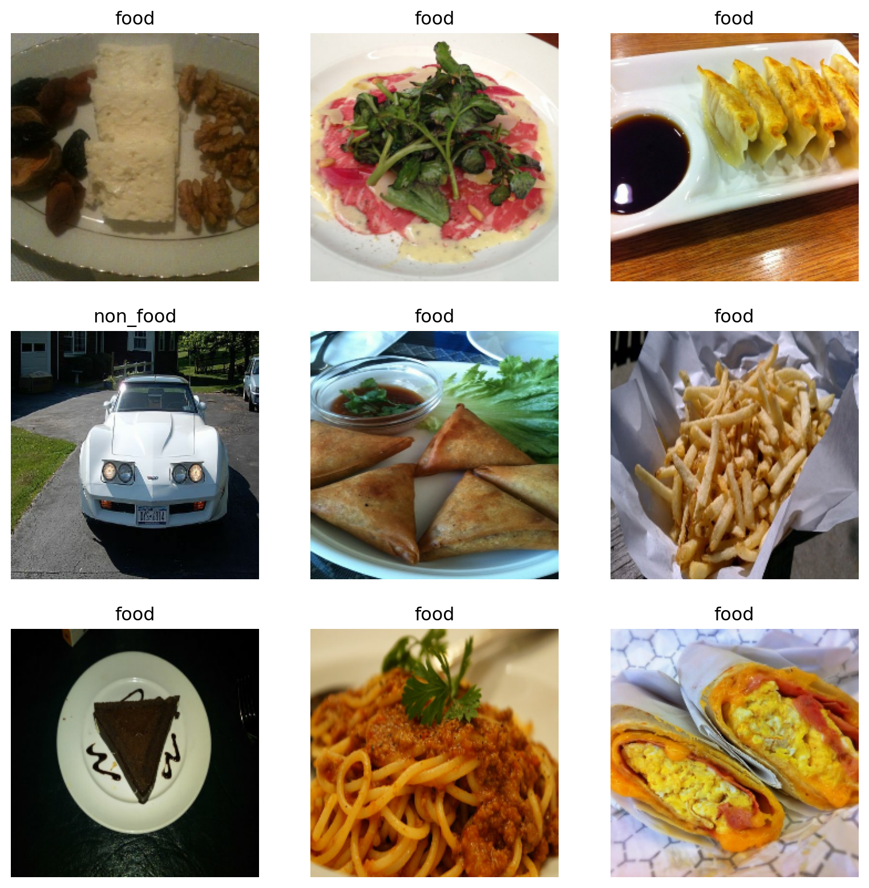
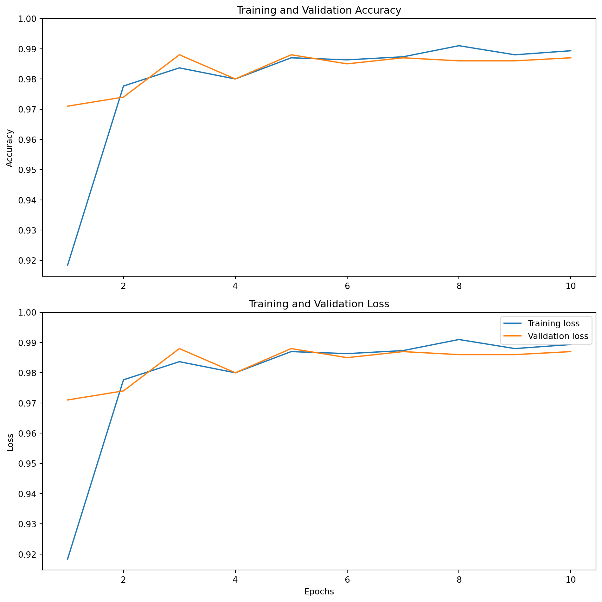
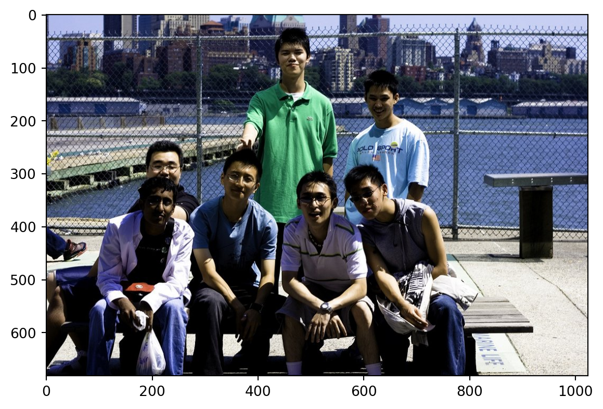

import warnings
warnings.filterwarnings('ignore')
import os
os.environ['TF_CPP_MIN_LOG_LEVEL'] = '3'
import tensorflow as tf
tf.compat.v1.logging.set_verbosity(tf.compat.v1.logging.ERROR)
import matplotlib.pyplot as plt
import numpy as np
from tensorflow.keras.preprocessing.image import load_img, array_to_img, img_to_array
from tensorflow.keras.applications import resnet50, ResNet50
from tensorflow.keras import Model, Sequential, Input
from tensorflow.keras.layers import GlobalAveragePooling2D, Dense, Dropout, Flatten
from tensorflow.keras.backend import clear_session
from tensorflow.keras.utils import image_dataset_from_directoryCNN Assignment
1 Carica il dataset food/no_food
(puoi fare un ciclo for o usare flow_from_directory)
First of all, load the dataset using the image_dataset_from_directory function. This function will return a tf.data.Dataset object that can be used to train the model.
os.listdir("/Users/simonebrazzi/datasets/food-vs-non-food-image-classification/")
os.listdir("/Users/simonebrazzi/datasets/food-vs-non-food-image-classification/training/")['non_food', 'food']path = "/Users/simonebrazzi/datasets/food-vs-non-food-image-classification/"
labels = "inferred"
label_mode = "int"
batch_size = 32
image_size = (224, 224)
color_mode = "rgb"
shuffle = Truetrain_dataset = image_dataset_from_directory(
directory=path + "training/",
labels=labels,
label_mode=label_mode,
color_mode=color_mode,
batch_size=batch_size,
image_size=image_size,
shuffle=shuffle
)
class_names = train_dataset.class_names
print(class_names)Found 3000 files belonging to 2 classes.
['food', 'non_food']# list all method of train_dataset
[x for x in dir(train_dataset) if not x.startswith('__') | x.startswith('_')]['apply',
'as_numpy_iterator',
'batch',
'bucket_by_sequence_length',
'cache',
'cardinality',
'choose_from_datasets',
'class_names',
'concatenate',
'counter',
'element_spec',
'enumerate',
'file_paths',
'filter',
'fingerprint',
'flat_map',
'from_generator',
'from_tensor_slices',
'from_tensors',
'get_single_element',
'group_by_window',
'ignore_errors',
'interleave',
'list_files',
'load',
'map',
'options',
'padded_batch',
'prefetch',
'ragged_batch',
'random',
'range',
'rebatch',
'reduce',
'rejection_resample',
'repeat',
'sample_from_datasets',
'save',
'scan',
'shard',
'shuffle',
'skip',
'snapshot',
'sparse_batch',
'take',
'take_while',
'unbatch',
'unique',
'window',
'with_options',
'zip']train_dataset.as_numpy_iterator().next()[0].shape
train_dataset.as_numpy_iterator().next()[1].shape(32,)With this code, we can see that the train_dataset is a tf.data.Dataset object that contains a batch of images. The shape of the batch is (32, 224, 224, 3), which means that the batch contains 32 images with a size of 224x224 pixels and 3 channels (RGB).
image_dataset_from_directory load these images off disk using efficient input pipelines, which are important for performance. The function also allows us to specify the batch size and the image size. The shuffle parameter is set to True to shuffle the images.
validation_dataset = image_dataset_from_directory(
directory=path + "validation/",
labels=labels,
label_mode=label_mode,
color_mode=color_mode,
batch_size=batch_size,
image_size=image_size,
shuffle=shuffle
)Found 1000 files belonging to 2 classes.Check the shape of the validation dataset.
validation_dataset.as_numpy_iterator().next()[0].shape
validation_dataset.as_numpy_iterator().next()[1].shape(32,)Plot the first 9 images from the training dataset. Use class_names to check the labels.
class_names = train_dataset.class_names
plt.figure(figsize=(10, 10))
for images, labels in train_dataset.take(1):
for i in range(9):
ax = plt.subplot(3, 3, i + 1)
plt.imshow(images[i].numpy().astype("uint8"))
plt.title(class_names[labels[i]])
plt.axis("off")
plt.show()
plt.close()
2 Usa sempre ResNet50 per ottenere una matrice di features (train e test)
(devi ottenere due matrici di dimensione (3000, 2048) e (1000, 2048))
2.1 Import ResNet50
base_model = ResNet50(
weights='imagenet',
include_top=False
)Check example batch of images and the shape of the output.
image_batch, label_batch = next(iter(train_dataset))
feature_batch = base_model(image_batch)
#print(feature_batch.shape)
# batch size, height, width, channels
next(iter(train_dataset))[0].shape
# shape of the output of the base model -> feature_batch
base_model(next(iter(train_dataset))[0]).shapeTensorShape([32, 7, 7, 2048])Define data augmentation layer.
data_augmentation = tf.keras.Sequential([
tf.keras.layers.RandomFlip('horizontal'),
tf.keras.layers.RandomRotation(0.2),
])Note: These layers are active only during training, when you call Model.fit. They are inactive when the model is used in inference mode in Model.evaluate, Model.predict, or Model.call.
Preprocess input using resnet50 preprocess function.
preprocess_input = resnet50.preprocess_input2.2 Feature extraction
2.2.1 Freeze the base model
this could be done after callling the base model.
base_model.trainable = Falsebase_model.summary()Model: "resnet50"
┏━━━━━━━━━━━━━━━━━━━━━┳━━━━━━━━━━━━━━━━━━━┳━━━━━━━━━━━━┳━━━━━━━━━━━━━━━━━━━┓ ┃ Layer (type) ┃ Output Shape ┃ Param # ┃ Connected to ┃ ┡━━━━━━━━━━━━━━━━━━━━━╇━━━━━━━━━━━━━━━━━━━╇━━━━━━━━━━━━╇━━━━━━━━━━━━━━━━━━━┩ │ input_layer │ (None, None, │ 0 │ - │ │ (InputLayer) │ None, 3) │ │ │ ├─────────────────────┼───────────────────┼────────────┼───────────────────┤ │ conv1_pad │ (None, None, │ 0 │ input_layer[0][0] │ │ (ZeroPadding2D) │ None, 3) │ │ │ ├─────────────────────┼───────────────────┼────────────┼───────────────────┤ │ conv1_conv (Conv2D) │ (None, None, │ 9,472 │ conv1_pad[0][0] │ │ │ None, 64) │ │ │ ├─────────────────────┼───────────────────┼────────────┼───────────────────┤ │ conv1_bn │ (None, None, │ 256 │ conv1_conv[0][0] │ │ (BatchNormalizatio… │ None, 64) │ │ │ ├─────────────────────┼───────────────────┼────────────┼───────────────────┤ │ conv1_relu │ (None, None, │ 0 │ conv1_bn[0][0] │ │ (Activation) │ None, 64) │ │ │ ├─────────────────────┼───────────────────┼────────────┼───────────────────┤ │ pool1_pad │ (None, None, │ 0 │ conv1_relu[0][0] │ │ (ZeroPadding2D) │ None, 64) │ │ │ ├─────────────────────┼───────────────────┼────────────┼───────────────────┤ │ pool1_pool │ (None, None, │ 0 │ pool1_pad[0][0] │ │ (MaxPooling2D) │ None, 64) │ │ │ ├─────────────────────┼───────────────────┼────────────┼───────────────────┤ │ conv2_block1_1_conv │ (None, None, │ 4,160 │ pool1_pool[0][0] │ │ (Conv2D) │ None, 64) │ │ │ ├─────────────────────┼───────────────────┼────────────┼───────────────────┤ │ conv2_block1_1_bn │ (None, None, │ 256 │ conv2_block1_1_c… │ │ (BatchNormalizatio… │ None, 64) │ │ │ ├─────────────────────┼───────────────────┼────────────┼───────────────────┤ │ conv2_block1_1_relu │ (None, None, │ 0 │ conv2_block1_1_b… │ │ (Activation) │ None, 64) │ │ │ ├─────────────────────┼───────────────────┼────────────┼───────────────────┤ │ conv2_block1_2_conv │ (None, None, │ 36,928 │ conv2_block1_1_r… │ │ (Conv2D) │ None, 64) │ │ │ ├─────────────────────┼───────────────────┼────────────┼───────────────────┤ │ conv2_block1_2_bn │ (None, None, │ 256 │ conv2_block1_2_c… │ │ (BatchNormalizatio… │ None, 64) │ │ │ ├─────────────────────┼───────────────────┼────────────┼───────────────────┤ │ conv2_block1_2_relu │ (None, None, │ 0 │ conv2_block1_2_b… │ │ (Activation) │ None, 64) │ │ │ ├─────────────────────┼───────────────────┼────────────┼───────────────────┤ │ conv2_block1_0_conv │ (None, None, │ 16,640 │ pool1_pool[0][0] │ │ (Conv2D) │ None, 256) │ │ │ ├─────────────────────┼───────────────────┼────────────┼───────────────────┤ │ conv2_block1_3_conv │ (None, None, │ 16,640 │ conv2_block1_2_r… │ │ (Conv2D) │ None, 256) │ │ │ ├─────────────────────┼───────────────────┼────────────┼───────────────────┤ │ conv2_block1_0_bn │ (None, None, │ 1,024 │ conv2_block1_0_c… │ │ (BatchNormalizatio… │ None, 256) │ │ │ ├─────────────────────┼───────────────────┼────────────┼───────────────────┤ │ conv2_block1_3_bn │ (None, None, │ 1,024 │ conv2_block1_3_c… │ │ (BatchNormalizatio… │ None, 256) │ │ │ ├─────────────────────┼───────────────────┼────────────┼───────────────────┤ │ conv2_block1_add │ (None, None, │ 0 │ conv2_block1_0_b… │ │ (Add) │ None, 256) │ │ conv2_block1_3_b… │ ├─────────────────────┼───────────────────┼────────────┼───────────────────┤ │ conv2_block1_out │ (None, None, │ 0 │ conv2_block1_add… │ │ (Activation) │ None, 256) │ │ │ ├─────────────────────┼───────────────────┼────────────┼───────────────────┤ │ conv2_block2_1_conv │ (None, None, │ 16,448 │ conv2_block1_out… │ │ (Conv2D) │ None, 64) │ │ │ ├─────────────────────┼───────────────────┼────────────┼───────────────────┤ │ conv2_block2_1_bn │ (None, None, │ 256 │ conv2_block2_1_c… │ │ (BatchNormalizatio… │ None, 64) │ │ │ ├─────────────────────┼───────────────────┼────────────┼───────────────────┤ │ conv2_block2_1_relu │ (None, None, │ 0 │ conv2_block2_1_b… │ │ (Activation) │ None, 64) │ │ │ ├─────────────────────┼───────────────────┼────────────┼───────────────────┤ │ conv2_block2_2_conv │ (None, None, │ 36,928 │ conv2_block2_1_r… │ │ (Conv2D) │ None, 64) │ │ │ ├─────────────────────┼───────────────────┼────────────┼───────────────────┤ │ conv2_block2_2_bn │ (None, None, │ 256 │ conv2_block2_2_c… │ │ (BatchNormalizatio… │ None, 64) │ │ │ ├─────────────────────┼───────────────────┼────────────┼───────────────────┤ │ conv2_block2_2_relu │ (None, None, │ 0 │ conv2_block2_2_b… │ │ (Activation) │ None, 64) │ │ │ ├─────────────────────┼───────────────────┼────────────┼───────────────────┤ │ conv2_block2_3_conv │ (None, None, │ 16,640 │ conv2_block2_2_r… │ │ (Conv2D) │ None, 256) │ │ │ ├─────────────────────┼───────────────────┼────────────┼───────────────────┤ │ conv2_block2_3_bn │ (None, None, │ 1,024 │ conv2_block2_3_c… │ │ (BatchNormalizatio… │ None, 256) │ │ │ ├─────────────────────┼───────────────────┼────────────┼───────────────────┤ │ conv2_block2_add │ (None, None, │ 0 │ conv2_block1_out… │ │ (Add) │ None, 256) │ │ conv2_block2_3_b… │ ├─────────────────────┼───────────────────┼────────────┼───────────────────┤ │ conv2_block2_out │ (None, None, │ 0 │ conv2_block2_add… │ │ (Activation) │ None, 256) │ │ │ ├─────────────────────┼───────────────────┼────────────┼───────────────────┤ │ conv2_block3_1_conv │ (None, None, │ 16,448 │ conv2_block2_out… │ │ (Conv2D) │ None, 64) │ │ │ ├─────────────────────┼───────────────────┼────────────┼───────────────────┤ │ conv2_block3_1_bn │ (None, None, │ 256 │ conv2_block3_1_c… │ │ (BatchNormalizatio… │ None, 64) │ │ │ ├─────────────────────┼───────────────────┼────────────┼───────────────────┤ │ conv2_block3_1_relu │ (None, None, │ 0 │ conv2_block3_1_b… │ │ (Activation) │ None, 64) │ │ │ ├─────────────────────┼───────────────────┼────────────┼───────────────────┤ │ conv2_block3_2_conv │ (None, None, │ 36,928 │ conv2_block3_1_r… │ │ (Conv2D) │ None, 64) │ │ │ ├─────────────────────┼───────────────────┼────────────┼───────────────────┤ │ conv2_block3_2_bn │ (None, None, │ 256 │ conv2_block3_2_c… │ │ (BatchNormalizatio… │ None, 64) │ │ │ ├─────────────────────┼───────────────────┼────────────┼───────────────────┤ │ conv2_block3_2_relu │ (None, None, │ 0 │ conv2_block3_2_b… │ │ (Activation) │ None, 64) │ │ │ ├─────────────────────┼───────────────────┼────────────┼───────────────────┤ │ conv2_block3_3_conv │ (None, None, │ 16,640 │ conv2_block3_2_r… │ │ (Conv2D) │ None, 256) │ │ │ ├─────────────────────┼───────────────────┼────────────┼───────────────────┤ │ conv2_block3_3_bn │ (None, None, │ 1,024 │ conv2_block3_3_c… │ │ (BatchNormalizatio… │ None, 256) │ │ │ ├─────────────────────┼───────────────────┼────────────┼───────────────────┤ │ conv2_block3_add │ (None, None, │ 0 │ conv2_block2_out… │ │ (Add) │ None, 256) │ │ conv2_block3_3_b… │ ├─────────────────────┼───────────────────┼────────────┼───────────────────┤ │ conv2_block3_out │ (None, None, │ 0 │ conv2_block3_add… │ │ (Activation) │ None, 256) │ │ │ ├─────────────────────┼───────────────────┼────────────┼───────────────────┤ │ conv3_block1_1_conv │ (None, None, │ 32,896 │ conv2_block3_out… │ │ (Conv2D) │ None, 128) │ │ │ ├─────────────────────┼───────────────────┼────────────┼───────────────────┤ │ conv3_block1_1_bn │ (None, None, │ 512 │ conv3_block1_1_c… │ │ (BatchNormalizatio… │ None, 128) │ │ │ ├─────────────────────┼───────────────────┼────────────┼───────────────────┤ │ conv3_block1_1_relu │ (None, None, │ 0 │ conv3_block1_1_b… │ │ (Activation) │ None, 128) │ │ │ ├─────────────────────┼───────────────────┼────────────┼───────────────────┤ │ conv3_block1_2_conv │ (None, None, │ 147,584 │ conv3_block1_1_r… │ │ (Conv2D) │ None, 128) │ │ │ ├─────────────────────┼───────────────────┼────────────┼───────────────────┤ │ conv3_block1_2_bn │ (None, None, │ 512 │ conv3_block1_2_c… │ │ (BatchNormalizatio… │ None, 128) │ │ │ ├─────────────────────┼───────────────────┼────────────┼───────────────────┤ │ conv3_block1_2_relu │ (None, None, │ 0 │ conv3_block1_2_b… │ │ (Activation) │ None, 128) │ │ │ ├─────────────────────┼───────────────────┼────────────┼───────────────────┤ │ conv3_block1_0_conv │ (None, None, │ 131,584 │ conv2_block3_out… │ │ (Conv2D) │ None, 512) │ │ │ ├─────────────────────┼───────────────────┼────────────┼───────────────────┤ │ conv3_block1_3_conv │ (None, None, │ 66,048 │ conv3_block1_2_r… │ │ (Conv2D) │ None, 512) │ │ │ ├─────────────────────┼───────────────────┼────────────┼───────────────────┤ │ conv3_block1_0_bn │ (None, None, │ 2,048 │ conv3_block1_0_c… │ │ (BatchNormalizatio… │ None, 512) │ │ │ ├─────────────────────┼───────────────────┼────────────┼───────────────────┤ │ conv3_block1_3_bn │ (None, None, │ 2,048 │ conv3_block1_3_c… │ │ (BatchNormalizatio… │ None, 512) │ │ │ ├─────────────────────┼───────────────────┼────────────┼───────────────────┤ │ conv3_block1_add │ (None, None, │ 0 │ conv3_block1_0_b… │ │ (Add) │ None, 512) │ │ conv3_block1_3_b… │ ├─────────────────────┼───────────────────┼────────────┼───────────────────┤ │ conv3_block1_out │ (None, None, │ 0 │ conv3_block1_add… │ │ (Activation) │ None, 512) │ │ │ ├─────────────────────┼───────────────────┼────────────┼───────────────────┤ │ conv3_block2_1_conv │ (None, None, │ 65,664 │ conv3_block1_out… │ │ (Conv2D) │ None, 128) │ │ │ ├─────────────────────┼───────────────────┼────────────┼───────────────────┤ │ conv3_block2_1_bn │ (None, None, │ 512 │ conv3_block2_1_c… │ │ (BatchNormalizatio… │ None, 128) │ │ │ ├─────────────────────┼───────────────────┼────────────┼───────────────────┤ │ conv3_block2_1_relu │ (None, None, │ 0 │ conv3_block2_1_b… │ │ (Activation) │ None, 128) │ │ │ ├─────────────────────┼───────────────────┼────────────┼───────────────────┤ │ conv3_block2_2_conv │ (None, None, │ 147,584 │ conv3_block2_1_r… │ │ (Conv2D) │ None, 128) │ │ │ ├─────────────────────┼───────────────────┼────────────┼───────────────────┤ │ conv3_block2_2_bn │ (None, None, │ 512 │ conv3_block2_2_c… │ │ (BatchNormalizatio… │ None, 128) │ │ │ ├─────────────────────┼───────────────────┼────────────┼───────────────────┤ │ conv3_block2_2_relu │ (None, None, │ 0 │ conv3_block2_2_b… │ │ (Activation) │ None, 128) │ │ │ ├─────────────────────┼───────────────────┼────────────┼───────────────────┤ │ conv3_block2_3_conv │ (None, None, │ 66,048 │ conv3_block2_2_r… │ │ (Conv2D) │ None, 512) │ │ │ ├─────────────────────┼───────────────────┼────────────┼───────────────────┤ │ conv3_block2_3_bn │ (None, None, │ 2,048 │ conv3_block2_3_c… │ │ (BatchNormalizatio… │ None, 512) │ │ │ ├─────────────────────┼───────────────────┼────────────┼───────────────────┤ │ conv3_block2_add │ (None, None, │ 0 │ conv3_block1_out… │ │ (Add) │ None, 512) │ │ conv3_block2_3_b… │ ├─────────────────────┼───────────────────┼────────────┼───────────────────┤ │ conv3_block2_out │ (None, None, │ 0 │ conv3_block2_add… │ │ (Activation) │ None, 512) │ │ │ ├─────────────────────┼───────────────────┼────────────┼───────────────────┤ │ conv3_block3_1_conv │ (None, None, │ 65,664 │ conv3_block2_out… │ │ (Conv2D) │ None, 128) │ │ │ ├─────────────────────┼───────────────────┼────────────┼───────────────────┤ │ conv3_block3_1_bn │ (None, None, │ 512 │ conv3_block3_1_c… │ │ (BatchNormalizatio… │ None, 128) │ │ │ ├─────────────────────┼───────────────────┼────────────┼───────────────────┤ │ conv3_block3_1_relu │ (None, None, │ 0 │ conv3_block3_1_b… │ │ (Activation) │ None, 128) │ │ │ ├─────────────────────┼───────────────────┼────────────┼───────────────────┤ │ conv3_block3_2_conv │ (None, None, │ 147,584 │ conv3_block3_1_r… │ │ (Conv2D) │ None, 128) │ │ │ ├─────────────────────┼───────────────────┼────────────┼───────────────────┤ │ conv3_block3_2_bn │ (None, None, │ 512 │ conv3_block3_2_c… │ │ (BatchNormalizatio… │ None, 128) │ │ │ ├─────────────────────┼───────────────────┼────────────┼───────────────────┤ │ conv3_block3_2_relu │ (None, None, │ 0 │ conv3_block3_2_b… │ │ (Activation) │ None, 128) │ │ │ ├─────────────────────┼───────────────────┼────────────┼───────────────────┤ │ conv3_block3_3_conv │ (None, None, │ 66,048 │ conv3_block3_2_r… │ │ (Conv2D) │ None, 512) │ │ │ ├─────────────────────┼───────────────────┼────────────┼───────────────────┤ │ conv3_block3_3_bn │ (None, None, │ 2,048 │ conv3_block3_3_c… │ │ (BatchNormalizatio… │ None, 512) │ │ │ ├─────────────────────┼───────────────────┼────────────┼───────────────────┤ │ conv3_block3_add │ (None, None, │ 0 │ conv3_block2_out… │ │ (Add) │ None, 512) │ │ conv3_block3_3_b… │ ├─────────────────────┼───────────────────┼────────────┼───────────────────┤ │ conv3_block3_out │ (None, None, │ 0 │ conv3_block3_add… │ │ (Activation) │ None, 512) │ │ │ ├─────────────────────┼───────────────────┼────────────┼───────────────────┤ │ conv3_block4_1_conv │ (None, None, │ 65,664 │ conv3_block3_out… │ │ (Conv2D) │ None, 128) │ │ │ ├─────────────────────┼───────────────────┼────────────┼───────────────────┤ │ conv3_block4_1_bn │ (None, None, │ 512 │ conv3_block4_1_c… │ │ (BatchNormalizatio… │ None, 128) │ │ │ ├─────────────────────┼───────────────────┼────────────┼───────────────────┤ │ conv3_block4_1_relu │ (None, None, │ 0 │ conv3_block4_1_b… │ │ (Activation) │ None, 128) │ │ │ ├─────────────────────┼───────────────────┼────────────┼───────────────────┤ │ conv3_block4_2_conv │ (None, None, │ 147,584 │ conv3_block4_1_r… │ │ (Conv2D) │ None, 128) │ │ │ ├─────────────────────┼───────────────────┼────────────┼───────────────────┤ │ conv3_block4_2_bn │ (None, None, │ 512 │ conv3_block4_2_c… │ │ (BatchNormalizatio… │ None, 128) │ │ │ ├─────────────────────┼───────────────────┼────────────┼───────────────────┤ │ conv3_block4_2_relu │ (None, None, │ 0 │ conv3_block4_2_b… │ │ (Activation) │ None, 128) │ │ │ ├─────────────────────┼───────────────────┼────────────┼───────────────────┤ │ conv3_block4_3_conv │ (None, None, │ 66,048 │ conv3_block4_2_r… │ │ (Conv2D) │ None, 512) │ │ │ ├─────────────────────┼───────────────────┼────────────┼───────────────────┤ │ conv3_block4_3_bn │ (None, None, │ 2,048 │ conv3_block4_3_c… │ │ (BatchNormalizatio… │ None, 512) │ │ │ ├─────────────────────┼───────────────────┼────────────┼───────────────────┤ │ conv3_block4_add │ (None, None, │ 0 │ conv3_block3_out… │ │ (Add) │ None, 512) │ │ conv3_block4_3_b… │ ├─────────────────────┼───────────────────┼────────────┼───────────────────┤ │ conv3_block4_out │ (None, None, │ 0 │ conv3_block4_add… │ │ (Activation) │ None, 512) │ │ │ ├─────────────────────┼───────────────────┼────────────┼───────────────────┤ │ conv4_block1_1_conv │ (None, None, │ 131,328 │ conv3_block4_out… │ │ (Conv2D) │ None, 256) │ │ │ ├─────────────────────┼───────────────────┼────────────┼───────────────────┤ │ conv4_block1_1_bn │ (None, None, │ 1,024 │ conv4_block1_1_c… │ │ (BatchNormalizatio… │ None, 256) │ │ │ ├─────────────────────┼───────────────────┼────────────┼───────────────────┤ │ conv4_block1_1_relu │ (None, None, │ 0 │ conv4_block1_1_b… │ │ (Activation) │ None, 256) │ │ │ ├─────────────────────┼───────────────────┼────────────┼───────────────────┤ │ conv4_block1_2_conv │ (None, None, │ 590,080 │ conv4_block1_1_r… │ │ (Conv2D) │ None, 256) │ │ │ ├─────────────────────┼───────────────────┼────────────┼───────────────────┤ │ conv4_block1_2_bn │ (None, None, │ 1,024 │ conv4_block1_2_c… │ │ (BatchNormalizatio… │ None, 256) │ │ │ ├─────────────────────┼───────────────────┼────────────┼───────────────────┤ │ conv4_block1_2_relu │ (None, None, │ 0 │ conv4_block1_2_b… │ │ (Activation) │ None, 256) │ │ │ ├─────────────────────┼───────────────────┼────────────┼───────────────────┤ │ conv4_block1_0_conv │ (None, None, │ 525,312 │ conv3_block4_out… │ │ (Conv2D) │ None, 1024) │ │ │ ├─────────────────────┼───────────────────┼────────────┼───────────────────┤ │ conv4_block1_3_conv │ (None, None, │ 263,168 │ conv4_block1_2_r… │ │ (Conv2D) │ None, 1024) │ │ │ ├─────────────────────┼───────────────────┼────────────┼───────────────────┤ │ conv4_block1_0_bn │ (None, None, │ 4,096 │ conv4_block1_0_c… │ │ (BatchNormalizatio… │ None, 1024) │ │ │ ├─────────────────────┼───────────────────┼────────────┼───────────────────┤ │ conv4_block1_3_bn │ (None, None, │ 4,096 │ conv4_block1_3_c… │ │ (BatchNormalizatio… │ None, 1024) │ │ │ ├─────────────────────┼───────────────────┼────────────┼───────────────────┤ │ conv4_block1_add │ (None, None, │ 0 │ conv4_block1_0_b… │ │ (Add) │ None, 1024) │ │ conv4_block1_3_b… │ ├─────────────────────┼───────────────────┼────────────┼───────────────────┤ │ conv4_block1_out │ (None, None, │ 0 │ conv4_block1_add… │ │ (Activation) │ None, 1024) │ │ │ ├─────────────────────┼───────────────────┼────────────┼───────────────────┤ │ conv4_block2_1_conv │ (None, None, │ 262,400 │ conv4_block1_out… │ │ (Conv2D) │ None, 256) │ │ │ ├─────────────────────┼───────────────────┼────────────┼───────────────────┤ │ conv4_block2_1_bn │ (None, None, │ 1,024 │ conv4_block2_1_c… │ │ (BatchNormalizatio… │ None, 256) │ │ │ ├─────────────────────┼───────────────────┼────────────┼───────────────────┤ │ conv4_block2_1_relu │ (None, None, │ 0 │ conv4_block2_1_b… │ │ (Activation) │ None, 256) │ │ │ ├─────────────────────┼───────────────────┼────────────┼───────────────────┤ │ conv4_block2_2_conv │ (None, None, │ 590,080 │ conv4_block2_1_r… │ │ (Conv2D) │ None, 256) │ │ │ ├─────────────────────┼───────────────────┼────────────┼───────────────────┤ │ conv4_block2_2_bn │ (None, None, │ 1,024 │ conv4_block2_2_c… │ │ (BatchNormalizatio… │ None, 256) │ │ │ ├─────────────────────┼───────────────────┼────────────┼───────────────────┤ │ conv4_block2_2_relu │ (None, None, │ 0 │ conv4_block2_2_b… │ │ (Activation) │ None, 256) │ │ │ ├─────────────────────┼───────────────────┼────────────┼───────────────────┤ │ conv4_block2_3_conv │ (None, None, │ 263,168 │ conv4_block2_2_r… │ │ (Conv2D) │ None, 1024) │ │ │ ├─────────────────────┼───────────────────┼────────────┼───────────────────┤ │ conv4_block2_3_bn │ (None, None, │ 4,096 │ conv4_block2_3_c… │ │ (BatchNormalizatio… │ None, 1024) │ │ │ ├─────────────────────┼───────────────────┼────────────┼───────────────────┤ │ conv4_block2_add │ (None, None, │ 0 │ conv4_block1_out… │ │ (Add) │ None, 1024) │ │ conv4_block2_3_b… │ ├─────────────────────┼───────────────────┼────────────┼───────────────────┤ │ conv4_block2_out │ (None, None, │ 0 │ conv4_block2_add… │ │ (Activation) │ None, 1024) │ │ │ ├─────────────────────┼───────────────────┼────────────┼───────────────────┤ │ conv4_block3_1_conv │ (None, None, │ 262,400 │ conv4_block2_out… │ │ (Conv2D) │ None, 256) │ │ │ ├─────────────────────┼───────────────────┼────────────┼───────────────────┤ │ conv4_block3_1_bn │ (None, None, │ 1,024 │ conv4_block3_1_c… │ │ (BatchNormalizatio… │ None, 256) │ │ │ ├─────────────────────┼───────────────────┼────────────┼───────────────────┤ │ conv4_block3_1_relu │ (None, None, │ 0 │ conv4_block3_1_b… │ │ (Activation) │ None, 256) │ │ │ ├─────────────────────┼───────────────────┼────────────┼───────────────────┤ │ conv4_block3_2_conv │ (None, None, │ 590,080 │ conv4_block3_1_r… │ │ (Conv2D) │ None, 256) │ │ │ ├─────────────────────┼───────────────────┼────────────┼───────────────────┤ │ conv4_block3_2_bn │ (None, None, │ 1,024 │ conv4_block3_2_c… │ │ (BatchNormalizatio… │ None, 256) │ │ │ ├─────────────────────┼───────────────────┼────────────┼───────────────────┤ │ conv4_block3_2_relu │ (None, None, │ 0 │ conv4_block3_2_b… │ │ (Activation) │ None, 256) │ │ │ ├─────────────────────┼───────────────────┼────────────┼───────────────────┤ │ conv4_block3_3_conv │ (None, None, │ 263,168 │ conv4_block3_2_r… │ │ (Conv2D) │ None, 1024) │ │ │ ├─────────────────────┼───────────────────┼────────────┼───────────────────┤ │ conv4_block3_3_bn │ (None, None, │ 4,096 │ conv4_block3_3_c… │ │ (BatchNormalizatio… │ None, 1024) │ │ │ ├─────────────────────┼───────────────────┼────────────┼───────────────────┤ │ conv4_block3_add │ (None, None, │ 0 │ conv4_block2_out… │ │ (Add) │ None, 1024) │ │ conv4_block3_3_b… │ ├─────────────────────┼───────────────────┼────────────┼───────────────────┤ │ conv4_block3_out │ (None, None, │ 0 │ conv4_block3_add… │ │ (Activation) │ None, 1024) │ │ │ ├─────────────────────┼───────────────────┼────────────┼───────────────────┤ │ conv4_block4_1_conv │ (None, None, │ 262,400 │ conv4_block3_out… │ │ (Conv2D) │ None, 256) │ │ │ ├─────────────────────┼───────────────────┼────────────┼───────────────────┤ │ conv4_block4_1_bn │ (None, None, │ 1,024 │ conv4_block4_1_c… │ │ (BatchNormalizatio… │ None, 256) │ │ │ ├─────────────────────┼───────────────────┼────────────┼───────────────────┤ │ conv4_block4_1_relu │ (None, None, │ 0 │ conv4_block4_1_b… │ │ (Activation) │ None, 256) │ │ │ ├─────────────────────┼───────────────────┼────────────┼───────────────────┤ │ conv4_block4_2_conv │ (None, None, │ 590,080 │ conv4_block4_1_r… │ │ (Conv2D) │ None, 256) │ │ │ ├─────────────────────┼───────────────────┼────────────┼───────────────────┤ │ conv4_block4_2_bn │ (None, None, │ 1,024 │ conv4_block4_2_c… │ │ (BatchNormalizatio… │ None, 256) │ │ │ ├─────────────────────┼───────────────────┼────────────┼───────────────────┤ │ conv4_block4_2_relu │ (None, None, │ 0 │ conv4_block4_2_b… │ │ (Activation) │ None, 256) │ │ │ ├─────────────────────┼───────────────────┼────────────┼───────────────────┤ │ conv4_block4_3_conv │ (None, None, │ 263,168 │ conv4_block4_2_r… │ │ (Conv2D) │ None, 1024) │ │ │ ├─────────────────────┼───────────────────┼────────────┼───────────────────┤ │ conv4_block4_3_bn │ (None, None, │ 4,096 │ conv4_block4_3_c… │ │ (BatchNormalizatio… │ None, 1024) │ │ │ ├─────────────────────┼───────────────────┼────────────┼───────────────────┤ │ conv4_block4_add │ (None, None, │ 0 │ conv4_block3_out… │ │ (Add) │ None, 1024) │ │ conv4_block4_3_b… │ ├─────────────────────┼───────────────────┼────────────┼───────────────────┤ │ conv4_block4_out │ (None, None, │ 0 │ conv4_block4_add… │ │ (Activation) │ None, 1024) │ │ │ ├─────────────────────┼───────────────────┼────────────┼───────────────────┤ │ conv4_block5_1_conv │ (None, None, │ 262,400 │ conv4_block4_out… │ │ (Conv2D) │ None, 256) │ │ │ ├─────────────────────┼───────────────────┼────────────┼───────────────────┤ │ conv4_block5_1_bn │ (None, None, │ 1,024 │ conv4_block5_1_c… │ │ (BatchNormalizatio… │ None, 256) │ │ │ ├─────────────────────┼───────────────────┼────────────┼───────────────────┤ │ conv4_block5_1_relu │ (None, None, │ 0 │ conv4_block5_1_b… │ │ (Activation) │ None, 256) │ │ │ ├─────────────────────┼───────────────────┼────────────┼───────────────────┤ │ conv4_block5_2_conv │ (None, None, │ 590,080 │ conv4_block5_1_r… │ │ (Conv2D) │ None, 256) │ │ │ ├─────────────────────┼───────────────────┼────────────┼───────────────────┤ │ conv4_block5_2_bn │ (None, None, │ 1,024 │ conv4_block5_2_c… │ │ (BatchNormalizatio… │ None, 256) │ │ │ ├─────────────────────┼───────────────────┼────────────┼───────────────────┤ │ conv4_block5_2_relu │ (None, None, │ 0 │ conv4_block5_2_b… │ │ (Activation) │ None, 256) │ │ │ ├─────────────────────┼───────────────────┼────────────┼───────────────────┤ │ conv4_block5_3_conv │ (None, None, │ 263,168 │ conv4_block5_2_r… │ │ (Conv2D) │ None, 1024) │ │ │ ├─────────────────────┼───────────────────┼────────────┼───────────────────┤ │ conv4_block5_3_bn │ (None, None, │ 4,096 │ conv4_block5_3_c… │ │ (BatchNormalizatio… │ None, 1024) │ │ │ ├─────────────────────┼───────────────────┼────────────┼───────────────────┤ │ conv4_block5_add │ (None, None, │ 0 │ conv4_block4_out… │ │ (Add) │ None, 1024) │ │ conv4_block5_3_b… │ ├─────────────────────┼───────────────────┼────────────┼───────────────────┤ │ conv4_block5_out │ (None, None, │ 0 │ conv4_block5_add… │ │ (Activation) │ None, 1024) │ │ │ ├─────────────────────┼───────────────────┼────────────┼───────────────────┤ │ conv4_block6_1_conv │ (None, None, │ 262,400 │ conv4_block5_out… │ │ (Conv2D) │ None, 256) │ │ │ ├─────────────────────┼───────────────────┼────────────┼───────────────────┤ │ conv4_block6_1_bn │ (None, None, │ 1,024 │ conv4_block6_1_c… │ │ (BatchNormalizatio… │ None, 256) │ │ │ ├─────────────────────┼───────────────────┼────────────┼───────────────────┤ │ conv4_block6_1_relu │ (None, None, │ 0 │ conv4_block6_1_b… │ │ (Activation) │ None, 256) │ │ │ ├─────────────────────┼───────────────────┼────────────┼───────────────────┤ │ conv4_block6_2_conv │ (None, None, │ 590,080 │ conv4_block6_1_r… │ │ (Conv2D) │ None, 256) │ │ │ ├─────────────────────┼───────────────────┼────────────┼───────────────────┤ │ conv4_block6_2_bn │ (None, None, │ 1,024 │ conv4_block6_2_c… │ │ (BatchNormalizatio… │ None, 256) │ │ │ ├─────────────────────┼───────────────────┼────────────┼───────────────────┤ │ conv4_block6_2_relu │ (None, None, │ 0 │ conv4_block6_2_b… │ │ (Activation) │ None, 256) │ │ │ ├─────────────────────┼───────────────────┼────────────┼───────────────────┤ │ conv4_block6_3_conv │ (None, None, │ 263,168 │ conv4_block6_2_r… │ │ (Conv2D) │ None, 1024) │ │ │ ├─────────────────────┼───────────────────┼────────────┼───────────────────┤ │ conv4_block6_3_bn │ (None, None, │ 4,096 │ conv4_block6_3_c… │ │ (BatchNormalizatio… │ None, 1024) │ │ │ ├─────────────────────┼───────────────────┼────────────┼───────────────────┤ │ conv4_block6_add │ (None, None, │ 0 │ conv4_block5_out… │ │ (Add) │ None, 1024) │ │ conv4_block6_3_b… │ ├─────────────────────┼───────────────────┼────────────┼───────────────────┤ │ conv4_block6_out │ (None, None, │ 0 │ conv4_block6_add… │ │ (Activation) │ None, 1024) │ │ │ ├─────────────────────┼───────────────────┼────────────┼───────────────────┤ │ conv5_block1_1_conv │ (None, None, │ 524,800 │ conv4_block6_out… │ │ (Conv2D) │ None, 512) │ │ │ ├─────────────────────┼───────────────────┼────────────┼───────────────────┤ │ conv5_block1_1_bn │ (None, None, │ 2,048 │ conv5_block1_1_c… │ │ (BatchNormalizatio… │ None, 512) │ │ │ ├─────────────────────┼───────────────────┼────────────┼───────────────────┤ │ conv5_block1_1_relu │ (None, None, │ 0 │ conv5_block1_1_b… │ │ (Activation) │ None, 512) │ │ │ ├─────────────────────┼───────────────────┼────────────┼───────────────────┤ │ conv5_block1_2_conv │ (None, None, │ 2,359,808 │ conv5_block1_1_r… │ │ (Conv2D) │ None, 512) │ │ │ ├─────────────────────┼───────────────────┼────────────┼───────────────────┤ │ conv5_block1_2_bn │ (None, None, │ 2,048 │ conv5_block1_2_c… │ │ (BatchNormalizatio… │ None, 512) │ │ │ ├─────────────────────┼───────────────────┼────────────┼───────────────────┤ │ conv5_block1_2_relu │ (None, None, │ 0 │ conv5_block1_2_b… │ │ (Activation) │ None, 512) │ │ │ ├─────────────────────┼───────────────────┼────────────┼───────────────────┤ │ conv5_block1_0_conv │ (None, None, │ 2,099,200 │ conv4_block6_out… │ │ (Conv2D) │ None, 2048) │ │ │ ├─────────────────────┼───────────────────┼────────────┼───────────────────┤ │ conv5_block1_3_conv │ (None, None, │ 1,050,624 │ conv5_block1_2_r… │ │ (Conv2D) │ None, 2048) │ │ │ ├─────────────────────┼───────────────────┼────────────┼───────────────────┤ │ conv5_block1_0_bn │ (None, None, │ 8,192 │ conv5_block1_0_c… │ │ (BatchNormalizatio… │ None, 2048) │ │ │ ├─────────────────────┼───────────────────┼────────────┼───────────────────┤ │ conv5_block1_3_bn │ (None, None, │ 8,192 │ conv5_block1_3_c… │ │ (BatchNormalizatio… │ None, 2048) │ │ │ ├─────────────────────┼───────────────────┼────────────┼───────────────────┤ │ conv5_block1_add │ (None, None, │ 0 │ conv5_block1_0_b… │ │ (Add) │ None, 2048) │ │ conv5_block1_3_b… │ ├─────────────────────┼───────────────────┼────────────┼───────────────────┤ │ conv5_block1_out │ (None, None, │ 0 │ conv5_block1_add… │ │ (Activation) │ None, 2048) │ │ │ ├─────────────────────┼───────────────────┼────────────┼───────────────────┤ │ conv5_block2_1_conv │ (None, None, │ 1,049,088 │ conv5_block1_out… │ │ (Conv2D) │ None, 512) │ │ │ ├─────────────────────┼───────────────────┼────────────┼───────────────────┤ │ conv5_block2_1_bn │ (None, None, │ 2,048 │ conv5_block2_1_c… │ │ (BatchNormalizatio… │ None, 512) │ │ │ ├─────────────────────┼───────────────────┼────────────┼───────────────────┤ │ conv5_block2_1_relu │ (None, None, │ 0 │ conv5_block2_1_b… │ │ (Activation) │ None, 512) │ │ │ ├─────────────────────┼───────────────────┼────────────┼───────────────────┤ │ conv5_block2_2_conv │ (None, None, │ 2,359,808 │ conv5_block2_1_r… │ │ (Conv2D) │ None, 512) │ │ │ ├─────────────────────┼───────────────────┼────────────┼───────────────────┤ │ conv5_block2_2_bn │ (None, None, │ 2,048 │ conv5_block2_2_c… │ │ (BatchNormalizatio… │ None, 512) │ │ │ ├─────────────────────┼───────────────────┼────────────┼───────────────────┤ │ conv5_block2_2_relu │ (None, None, │ 0 │ conv5_block2_2_b… │ │ (Activation) │ None, 512) │ │ │ ├─────────────────────┼───────────────────┼────────────┼───────────────────┤ │ conv5_block2_3_conv │ (None, None, │ 1,050,624 │ conv5_block2_2_r… │ │ (Conv2D) │ None, 2048) │ │ │ ├─────────────────────┼───────────────────┼────────────┼───────────────────┤ │ conv5_block2_3_bn │ (None, None, │ 8,192 │ conv5_block2_3_c… │ │ (BatchNormalizatio… │ None, 2048) │ │ │ ├─────────────────────┼───────────────────┼────────────┼───────────────────┤ │ conv5_block2_add │ (None, None, │ 0 │ conv5_block1_out… │ │ (Add) │ None, 2048) │ │ conv5_block2_3_b… │ ├─────────────────────┼───────────────────┼────────────┼───────────────────┤ │ conv5_block2_out │ (None, None, │ 0 │ conv5_block2_add… │ │ (Activation) │ None, 2048) │ │ │ ├─────────────────────┼───────────────────┼────────────┼───────────────────┤ │ conv5_block3_1_conv │ (None, None, │ 1,049,088 │ conv5_block2_out… │ │ (Conv2D) │ None, 512) │ │ │ ├─────────────────────┼───────────────────┼────────────┼───────────────────┤ │ conv5_block3_1_bn │ (None, None, │ 2,048 │ conv5_block3_1_c… │ │ (BatchNormalizatio… │ None, 512) │ │ │ ├─────────────────────┼───────────────────┼────────────┼───────────────────┤ │ conv5_block3_1_relu │ (None, None, │ 0 │ conv5_block3_1_b… │ │ (Activation) │ None, 512) │ │ │ ├─────────────────────┼───────────────────┼────────────┼───────────────────┤ │ conv5_block3_2_conv │ (None, None, │ 2,359,808 │ conv5_block3_1_r… │ │ (Conv2D) │ None, 512) │ │ │ ├─────────────────────┼───────────────────┼────────────┼───────────────────┤ │ conv5_block3_2_bn │ (None, None, │ 2,048 │ conv5_block3_2_c… │ │ (BatchNormalizatio… │ None, 512) │ │ │ ├─────────────────────┼───────────────────┼────────────┼───────────────────┤ │ conv5_block3_2_relu │ (None, None, │ 0 │ conv5_block3_2_b… │ │ (Activation) │ None, 512) │ │ │ ├─────────────────────┼───────────────────┼────────────┼───────────────────┤ │ conv5_block3_3_conv │ (None, None, │ 1,050,624 │ conv5_block3_2_r… │ │ (Conv2D) │ None, 2048) │ │ │ ├─────────────────────┼───────────────────┼────────────┼───────────────────┤ │ conv5_block3_3_bn │ (None, None, │ 8,192 │ conv5_block3_3_c… │ │ (BatchNormalizatio… │ None, 2048) │ │ │ ├─────────────────────┼───────────────────┼────────────┼───────────────────┤ │ conv5_block3_add │ (None, None, │ 0 │ conv5_block2_out… │ │ (Add) │ None, 2048) │ │ conv5_block3_3_b… │ ├─────────────────────┼───────────────────┼────────────┼───────────────────┤ │ conv5_block3_out │ (None, None, │ 0 │ conv5_block3_add… │ │ (Activation) │ None, 2048) │ │ │ └─────────────────────┴───────────────────┴────────────┴───────────────────┘
Total params: 23,587,712 (89.98 MB)
Trainable params: 0 (0.00 B)
Non-trainable params: 23,587,712 (89.98 MB)
2.2.2 Add a classification head
Use the GlobalAveragePooling2D layer to convert the features into a single 2048-element vector per image.
global_average_layer = GlobalAveragePooling2D()
feature_batch_avg = global_average_layer(feature_batch)
feature_batch_avg.shapeTensorShape([32, 2048])Apply a Dense layer to convert these features into a single prediction per image. You don’t need an activation function here because this prediction will be treated as a logit, or a raw prediction value. Positive numbers predict class 1, negative numbers predict class 0.
prediction_layer = Dense(1)
prediction_batch = prediction_layer(feature_batch_avg)
prediction_batch.shapeTensorShape([32, 1])Build a model by chaining together the data augmentation, rescaling, base_model and feature extractor layers using the Functional API.
inputs = Input(shape=(224,224,3))
x = data_augmentation(inputs)
x = preprocess_input(x)
x = base_model(x, training=False) # training=False because the model contains a BatchNormalization layer
x = global_average_layer(x)
x = Dropout(0.2)(x) # to prevent overfitting
outputs = prediction_layer(x)
model = Model(inputs, outputs)
model.summary()Model: "functional_2"
┏━━━━━━━━━━━━━━━━━━━━━┳━━━━━━━━━━━━━━━━━━━┳━━━━━━━━━━━━┳━━━━━━━━━━━━━━━━━━━┓ ┃ Layer (type) ┃ Output Shape ┃ Param # ┃ Connected to ┃ ┡━━━━━━━━━━━━━━━━━━━━━╇━━━━━━━━━━━━━━━━━━━╇━━━━━━━━━━━━╇━━━━━━━━━━━━━━━━━━━┩ │ input_layer_1 │ (None, 224, 224, │ 0 │ - │ │ (InputLayer) │ 3) │ │ │ ├─────────────────────┼───────────────────┼────────────┼───────────────────┤ │ sequential │ (None, 224, 224, │ 0 │ input_layer_1[0]… │ │ (Sequential) │ 3) │ │ │ ├─────────────────────┼───────────────────┼────────────┼───────────────────┤ │ get_item (GetItem) │ (None, 224, 224) │ 0 │ sequential[0][0] │ ├─────────────────────┼───────────────────┼────────────┼───────────────────┤ │ get_item_1 │ (None, 224, 224) │ 0 │ sequential[0][0] │ │ (GetItem) │ │ │ │ ├─────────────────────┼───────────────────┼────────────┼───────────────────┤ │ get_item_2 │ (None, 224, 224) │ 0 │ sequential[0][0] │ │ (GetItem) │ │ │ │ ├─────────────────────┼───────────────────┼────────────┼───────────────────┤ │ stack (Stack) │ (None, 224, 224, │ 0 │ get_item[0][0], │ │ │ 3) │ │ get_item_1[0][0], │ │ │ │ │ get_item_2[0][0] │ ├─────────────────────┼───────────────────┼────────────┼───────────────────┤ │ add (Add) │ (None, 224, 224, │ 0 │ stack[0][0] │ │ │ 3) │ │ │ ├─────────────────────┼───────────────────┼────────────┼───────────────────┤ │ resnet50 │ (None, 7, 7, │ 23,587,712 │ add[0][0] │ │ (Functional) │ 2048) │ │ │ ├─────────────────────┼───────────────────┼────────────┼───────────────────┤ │ global_average_poo… │ (None, 2048) │ 0 │ resnet50[0][0] │ │ (GlobalAveragePool… │ │ │ │ ├─────────────────────┼───────────────────┼────────────┼───────────────────┤ │ dropout (Dropout) │ (None, 2048) │ 0 │ global_average_p… │ ├─────────────────────┼───────────────────┼────────────┼───────────────────┤ │ dense (Dense) │ (None, 1) │ 2,049 │ dropout[0][0] │ └─────────────────────┴───────────────────┴────────────┴───────────────────┘
Total params: 23,589,761 (89.99 MB)
Trainable params: 2,049 (8.00 KB)
Non-trainable params: 23,587,712 (89.98 MB)
2.2.3 Compile the model
The loss is a binary cross-entropy because: - the model is outputting a single probability score for each image. - the label is binary. - the model provides a linear output.
model.compile(
optimizer='adam',
loss=tf.keras.losses.BinaryCrossentropy(from_logits=True),
metrics=['accuracy']
)feat_train = model.predict(train_dataset)
feat_train.shape 1/94 ━━━━━━━━━━━━━━━━━━━━ 4:02 3s/step 2/94 ━━━━━━━━━━━━━━━━━━━━ 4s 51ms/step 3/94 ━━━━━━━━━━━━━━━━━━━━ 10s 120ms/step 4/94 ━━━━━━━━━━━━━━━━━━━━ 12s 139ms/step 5/94 ━━━━━━━━━━━━━━━━━━━━ 13s 148ms/step 6/94 ━━━━━━━━━━━━━━━━━━━━ 13s 153ms/step 7/94 ━━━━━━━━━━━━━━━━━━━━ 13s 157ms/step 8/94 ━━━━━━━━━━━━━━━━━━━━ 13s 159ms/step 9/94 ━━━━━━━━━━━━━━━━━━━━ 13s 162ms/step10/94 ━━━━━━━━━━━━━━━━━━━━ 13s 163ms/step11/94 ━━━━━━━━━━━━━━━━━━━━ 13s 164ms/step12/94 ━━━━━━━━━━━━━━━━━━━━ 13s 165ms/step13/94 ━━━━━━━━━━━━━━━━━━━━ 13s 166ms/step14/94 ━━━━━━━━━━━━━━━━━━━━ 13s 167ms/step15/94 ━━━━━━━━━━━━━━━━━━━━ 13s 167ms/step16/94 ━━━━━━━━━━━━━━━━━━━━ 13s 168ms/step17/94 ━━━━━━━━━━━━━━━━━━━━ 12s 168ms/step18/94 ━━━━━━━━━━━━━━━━━━━━ 12s 167ms/step19/94 ━━━━━━━━━━━━━━━━━━━━ 12s 166ms/step20/94 ━━━━━━━━━━━━━━━━━━━━ 12s 165ms/step21/94 ━━━━━━━━━━━━━━━━━━━━ 12s 165ms/step22/94 ━━━━━━━━━━━━━━━━━━━━ 11s 164ms/step23/94 ━━━━━━━━━━━━━━━━━━━━ 11s 163ms/step24/94 ━━━━━━━━━━━━━━━━━━━━ 11s 163ms/step25/94 ━━━━━━━━━━━━━━━━━━━━ 11s 162ms/step26/94 ━━━━━━━━━━━━━━━━━━━━ 11s 162ms/step27/94 ━━━━━━━━━━━━━━━━━━━━ 10s 162ms/step28/94 ━━━━━━━━━━━━━━━━━━━━ 10s 161ms/step29/94 ━━━━━━━━━━━━━━━━━━━━ 10s 161ms/step30/94 ━━━━━━━━━━━━━━━━━━━━ 10s 161ms/step31/94 ━━━━━━━━━━━━━━━━━━━━ 10s 160ms/step32/94 ━━━━━━━━━━━━━━━━━━━━ 9s 160ms/step 33/94 ━━━━━━━━━━━━━━━━━━━━ 9s 160ms/step34/94 ━━━━━━━━━━━━━━━━━━━━ 9s 159ms/step35/94 ━━━━━━━━━━━━━━━━━━━━ 9s 159ms/step36/94 ━━━━━━━━━━━━━━━━━━━━ 9s 159ms/step37/94 ━━━━━━━━━━━━━━━━━━━━ 9s 159ms/step38/94 ━━━━━━━━━━━━━━━━━━━━ 8s 159ms/step39/94 ━━━━━━━━━━━━━━━━━━━━ 8s 158ms/step40/94 ━━━━━━━━━━━━━━━━━━━━ 8s 158ms/step41/94 ━━━━━━━━━━━━━━━━━━━━ 8s 158ms/step42/94 ━━━━━━━━━━━━━━━━━━━━ 8s 158ms/step43/94 ━━━━━━━━━━━━━━━━━━━━ 8s 158ms/step44/94 ━━━━━━━━━━━━━━━━━━━━ 7s 158ms/step45/94 ━━━━━━━━━━━━━━━━━━━━ 7s 157ms/step46/94 ━━━━━━━━━━━━━━━━━━━━ 7s 157ms/step47/94 ━━━━━━━━━━━━━━━━━━━━ 7s 158ms/step48/94 ━━━━━━━━━━━━━━━━━━━━ 7s 158ms/step49/94 ━━━━━━━━━━━━━━━━━━━━ 7s 158ms/step50/94 ━━━━━━━━━━━━━━━━━━━━ 6s 158ms/step51/94 ━━━━━━━━━━━━━━━━━━━━ 6s 159ms/step52/94 ━━━━━━━━━━━━━━━━━━━━ 6s 159ms/step53/94 ━━━━━━━━━━━━━━━━━━━━ 6s 159ms/step54/94 ━━━━━━━━━━━━━━━━━━━━ 6s 160ms/step55/94 ━━━━━━━━━━━━━━━━━━━━ 6s 160ms/step56/94 ━━━━━━━━━━━━━━━━━━━━ 6s 160ms/step57/94 ━━━━━━━━━━━━━━━━━━━━ 5s 161ms/step58/94 ━━━━━━━━━━━━━━━━━━━━ 5s 161ms/step59/94 ━━━━━━━━━━━━━━━━━━━━ 5s 161ms/step60/94 ━━━━━━━━━━━━━━━━━━━━ 5s 162ms/step61/94 ━━━━━━━━━━━━━━━━━━━━ 5s 162ms/step62/94 ━━━━━━━━━━━━━━━━━━━━ 5s 162ms/step63/94 ━━━━━━━━━━━━━━━━━━━━ 5s 162ms/step64/94 ━━━━━━━━━━━━━━━━━━━━ 4s 163ms/step65/94 ━━━━━━━━━━━━━━━━━━━━ 4s 163ms/step66/94 ━━━━━━━━━━━━━━━━━━━━ 4s 163ms/step67/94 ━━━━━━━━━━━━━━━━━━━━ 4s 163ms/step68/94 ━━━━━━━━━━━━━━━━━━━━ 4s 164ms/step69/94 ━━━━━━━━━━━━━━━━━━━━ 4s 164ms/step70/94 ━━━━━━━━━━━━━━━━━━━━ 3s 164ms/step71/94 ━━━━━━━━━━━━━━━━━━━━ 3s 164ms/step72/94 ━━━━━━━━━━━━━━━━━━━━ 3s 164ms/step73/94 ━━━━━━━━━━━━━━━━━━━━ 3s 165ms/step74/94 ━━━━━━━━━━━━━━━━━━━━ 3s 165ms/step75/94 ━━━━━━━━━━━━━━━━━━━━ 3s 165ms/step76/94 ━━━━━━━━━━━━━━━━━━━━ 2s 165ms/step77/94 ━━━━━━━━━━━━━━━━━━━━ 2s 165ms/step78/94 ━━━━━━━━━━━━━━━━━━━━ 2s 165ms/step79/94 ━━━━━━━━━━━━━━━━━━━━ 2s 165ms/step80/94 ━━━━━━━━━━━━━━━━━━━━ 2s 165ms/step81/94 ━━━━━━━━━━━━━━━━━━━━ 2s 165ms/step82/94 ━━━━━━━━━━━━━━━━━━━━ 1s 165ms/step83/94 ━━━━━━━━━━━━━━━━━━━━ 1s 165ms/step84/94 ━━━━━━━━━━━━━━━━━━━━ 1s 164ms/step85/94 ━━━━━━━━━━━━━━━━━━━━ 1s 164ms/step86/94 ━━━━━━━━━━━━━━━━━━━━ 1s 164ms/step87/94 ━━━━━━━━━━━━━━━━━━━━ 1s 164ms/step88/94 ━━━━━━━━━━━━━━━━━━━━ 0s 164ms/step89/94 ━━━━━━━━━━━━━━━━━━━━ 0s 164ms/step90/94 ━━━━━━━━━━━━━━━━━━━━ 0s 163ms/step91/94 ━━━━━━━━━━━━━━━━━━━━ 0s 163ms/step92/94 ━━━━━━━━━━━━━━━━━━━━ 0s 163ms/step93/94 ━━━━━━━━━━━━━━━━━━━━ 0s 163ms/step94/94 ━━━━━━━━━━━━━━━━━━━━ 0s 188ms/step94/94 ━━━━━━━━━━━━━━━━━━━━ 20s 188ms/step(3000, 1)loss0, accuracy0 = model.evaluate(validation_dataset)
print(f"initial loss: {loss0}")
print(f"initial accuracy: {accuracy0}") 1/32 ━━━━━━━━━━━━━━━━━━━━ 1:31 3s/step - accuracy: 0.3438 - loss: 1.0351 2/32 ━━━━━━━━━━━━━━━━━━━━ 6s 229ms/step - accuracy: 0.3750 - loss: 1.0308 3/32 ━━━━━━━━━━━━━━━━━━━━ 6s 217ms/step - accuracy: 0.3958 - loss: 1.0150 4/32 ━━━━━━━━━━━━━━━━━━━━ 5s 208ms/step - accuracy: 0.3984 - loss: 1.0201 5/32 ━━━━━━━━━━━━━━━━━━━━ 5s 203ms/step - accuracy: 0.3988 - loss: 1.0229 6/32 ━━━━━━━━━━━━━━━━━━━━ 5s 200ms/step - accuracy: 0.3983 - loss: 1.0215 7/32 ━━━━━━━━━━━━━━━━━━━━ 4s 198ms/step - accuracy: 0.3981 - loss: 1.0195 8/32 ━━━━━━━━━━━━━━━━━━━━ 4s 196ms/step - accuracy: 0.3977 - loss: 1.0192 9/32 ━━━━━━━━━━━━━━━━━━━━ 4s 195ms/step - accuracy: 0.3955 - loss: 1.020910/32 ━━━━━━━━━━━━━━━━━━━━ 4s 194ms/step - accuracy: 0.3941 - loss: 1.022011/32 ━━━━━━━━━━━━━━━━━━━━ 4s 193ms/step - accuracy: 0.3921 - loss: 1.024412/32 ━━━━━━━━━━━━━━━━━━━━ 3s 193ms/step - accuracy: 0.3903 - loss: 1.027513/32 ━━━━━━━━━━━━━━━━━━━━ 3s 192ms/step - accuracy: 0.3885 - loss: 1.030114/32 ━━━━━━━━━━━━━━━━━━━━ 3s 189ms/step - accuracy: 0.3866 - loss: 1.032715/32 ━━━━━━━━━━━━━━━━━━━━ 3s 187ms/step - accuracy: 0.3847 - loss: 1.036116/32 ━━━━━━━━━━━━━━━━━━━━ 2s 185ms/step - accuracy: 0.3829 - loss: 1.038717/32 ━━━━━━━━━━━━━━━━━━━━ 2s 184ms/step - accuracy: 0.3810 - loss: 1.040718/32 ━━━━━━━━━━━━━━━━━━━━ 2s 183ms/step - accuracy: 0.3796 - loss: 1.042519/32 ━━━━━━━━━━━━━━━━━━━━ 2s 182ms/step - accuracy: 0.3784 - loss: 1.043920/32 ━━━━━━━━━━━━━━━━━━━━ 2s 181ms/step - accuracy: 0.3775 - loss: 1.045521/32 ━━━━━━━━━━━━━━━━━━━━ 1s 180ms/step - accuracy: 0.3767 - loss: 1.046922/32 ━━━━━━━━━━━━━━━━━━━━ 1s 179ms/step - accuracy: 0.3759 - loss: 1.048123/32 ━━━━━━━━━━━━━━━━━━━━ 1s 178ms/step - accuracy: 0.3751 - loss: 1.049524/32 ━━━━━━━━━━━━━━━━━━━━ 1s 177ms/step - accuracy: 0.3745 - loss: 1.050725/32 ━━━━━━━━━━━━━━━━━━━━ 1s 176ms/step - accuracy: 0.3741 - loss: 1.051626/32 ━━━━━━━━━━━━━━━━━━━━ 1s 175ms/step - accuracy: 0.3737 - loss: 1.052527/32 ━━━━━━━━━━━━━━━━━━━━ 0s 175ms/step - accuracy: 0.3734 - loss: 1.053228/32 ━━━━━━━━━━━━━━━━━━━━ 0s 174ms/step - accuracy: 0.3732 - loss: 1.053529/32 ━━━━━━━━━━━━━━━━━━━━ 0s 173ms/step - accuracy: 0.3731 - loss: 1.053630/32 ━━━━━━━━━━━━━━━━━━━━ 0s 173ms/step - accuracy: 0.3732 - loss: 1.053631/32 ━━━━━━━━━━━━━━━━━━━━ 0s 172ms/step - accuracy: 0.3732 - loss: 1.053632/32 ━━━━━━━━━━━━━━━━━━━━ 0s 215ms/step - accuracy: 0.3732 - loss: 1.053832/32 ━━━━━━━━━━━━━━━━━━━━ 10s 215ms/step - accuracy: 0.3732 - loss: 1.0539
initial loss: 1.0578901767730713
initial accuracy: 0.372999995946884163 Addestra una regressione logistica
(esatto, la resnet fa heavy lifting.. e sulle features basta un modello molto semplice)
history = model.fit(
train_dataset,
epochs=10,
validation_data=validation_dataset,
verbose=1
)Epoch 1/10
1/94 ━━━━━━━━━━━━━━━━━━━━ 7:30 5s/step - accuracy: 0.4375 - loss: 1.1329 2/94 ━━━━━━━━━━━━━━━━━━━━ 24s 262ms/step - accuracy: 0.4375 - loss: 1.0802 3/94 ━━━━━━━━━━━━━━━━━━━━ 21s 237ms/step - accuracy: 0.4410 - loss: 1.0405 4/94 ━━━━━━━━━━━━━━━━━━━━ 21s 235ms/step - accuracy: 0.4538 - loss: 0.9949 5/94 ━━━━━━━━━━━━━━━━━━━━ 20s 228ms/step - accuracy: 0.4743 - loss: 0.9540 6/94 ━━━━━━━━━━━━━━━━━━━━ 19s 219ms/step - accuracy: 0.4924 - loss: 0.9200 7/94 ━━━━━━━━━━━━━━━━━━━━ 18s 213ms/step - accuracy: 0.5063 - loss: 0.8931 8/94 ━━━━━━━━━━━━━━━━━━━━ 17s 208ms/step - accuracy: 0.5172 - loss: 0.8700 9/94 ━━━━━━━━━━━━━━━━━━━━ 17s 205ms/step - accuracy: 0.5288 - loss: 0.848310/94 ━━━━━━━━━━━━━━━━━━━━ 17s 203ms/step - accuracy: 0.5406 - loss: 0.827911/94 ━━━━━━━━━━━━━━━━━━━━ 16s 203ms/step - accuracy: 0.5516 - loss: 0.808712/94 ━━━━━━━━━━━━━━━━━━━━ 16s 201ms/step - accuracy: 0.5621 - loss: 0.790313/94 ━━━━━━━━━━━━━━━━━━━━ 16s 199ms/step - accuracy: 0.5716 - loss: 0.773814/94 ━━━━━━━━━━━━━━━━━━━━ 15s 200ms/step - accuracy: 0.5806 - loss: 0.758315/94 ━━━━━━━━━━━━━━━━━━━━ 15s 199ms/step - accuracy: 0.5893 - loss: 0.743616/94 ━━━━━━━━━━━━━━━━━━━━ 15s 198ms/step - accuracy: 0.5977 - loss: 0.729617/94 ━━━━━━━━━━━━━━━━━━━━ 15s 197ms/step - accuracy: 0.6057 - loss: 0.716518/94 ━━━━━━━━━━━━━━━━━━━━ 14s 197ms/step - accuracy: 0.6135 - loss: 0.704019/94 ━━━━━━━━━━━━━━━━━━━━ 14s 196ms/step - accuracy: 0.6208 - loss: 0.691920/94 ━━━━━━━━━━━━━━━━━━━━ 14s 195ms/step - accuracy: 0.6281 - loss: 0.680221/94 ━━━━━━━━━━━━━━━━━━━━ 14s 195ms/step - accuracy: 0.6351 - loss: 0.668722/94 ━━━━━━━━━━━━━━━━━━━━ 13s 194ms/step - accuracy: 0.6418 - loss: 0.657923/94 ━━━━━━━━━━━━━━━━━━━━ 13s 194ms/step - accuracy: 0.6483 - loss: 0.647524/94 ━━━━━━━━━━━━━━━━━━━━ 13s 193ms/step - accuracy: 0.6544 - loss: 0.637725/94 ━━━━━━━━━━━━━━━━━━━━ 13s 193ms/step - accuracy: 0.6603 - loss: 0.628226/94 ━━━━━━━━━━━━━━━━━━━━ 13s 192ms/step - accuracy: 0.6660 - loss: 0.618927/94 ━━━━━━━━━━━━━━━━━━━━ 12s 192ms/step - accuracy: 0.6715 - loss: 0.610128/94 ━━━━━━━━━━━━━━━━━━━━ 12s 192ms/step - accuracy: 0.6767 - loss: 0.601729/94 ━━━━━━━━━━━━━━━━━━━━ 12s 191ms/step - accuracy: 0.6816 - loss: 0.593630/94 ━━━━━━━━━━━━━━━━━━━━ 12s 191ms/step - accuracy: 0.6863 - loss: 0.586031/94 ━━━━━━━━━━━━━━━━━━━━ 11s 190ms/step - accuracy: 0.6907 - loss: 0.578532/94 ━━━━━━━━━━━━━━━━━━━━ 11s 191ms/step - accuracy: 0.6950 - loss: 0.571333/94 ━━━━━━━━━━━━━━━━━━━━ 11s 191ms/step - accuracy: 0.6991 - loss: 0.564434/94 ━━━━━━━━━━━━━━━━━━━━ 11s 192ms/step - accuracy: 0.7031 - loss: 0.557835/94 ━━━━━━━━━━━━━━━━━━━━ 11s 193ms/step - accuracy: 0.7070 - loss: 0.551336/94 ━━━━━━━━━━━━━━━━━━━━ 11s 193ms/step - accuracy: 0.7107 - loss: 0.545137/94 ━━━━━━━━━━━━━━━━━━━━ 11s 193ms/step - accuracy: 0.7143 - loss: 0.538938/94 ━━━━━━━━━━━━━━━━━━━━ 10s 194ms/step - accuracy: 0.7179 - loss: 0.533039/94 ━━━━━━━━━━━━━━━━━━━━ 10s 194ms/step - accuracy: 0.7213 - loss: 0.527340/94 ━━━━━━━━━━━━━━━━━━━━ 10s 194ms/step - accuracy: 0.7246 - loss: 0.521741/94 ━━━━━━━━━━━━━━━━━━━━ 10s 195ms/step - accuracy: 0.7278 - loss: 0.516242/94 ━━━━━━━━━━━━━━━━━━━━ 10s 195ms/step - accuracy: 0.7309 - loss: 0.510943/94 ━━━━━━━━━━━━━━━━━━━━ 9s 195ms/step - accuracy: 0.7340 - loss: 0.5057 44/94 ━━━━━━━━━━━━━━━━━━━━ 9s 196ms/step - accuracy: 0.7370 - loss: 0.500645/94 ━━━━━━━━━━━━━━━━━━━━ 9s 196ms/step - accuracy: 0.7399 - loss: 0.495646/94 ━━━━━━━━━━━━━━━━━━━━ 9s 196ms/step - accuracy: 0.7427 - loss: 0.490847/94 ━━━━━━━━━━━━━━━━━━━━ 9s 196ms/step - accuracy: 0.7455 - loss: 0.486148/94 ━━━━━━━━━━━━━━━━━━━━ 9s 196ms/step - accuracy: 0.7482 - loss: 0.481649/94 ━━━━━━━━━━━━━━━━━━━━ 8s 196ms/step - accuracy: 0.7508 - loss: 0.477250/94 ━━━━━━━━━━━━━━━━━━━━ 8s 197ms/step - accuracy: 0.7533 - loss: 0.472951/94 ━━━━━━━━━━━━━━━━━━━━ 8s 197ms/step - accuracy: 0.7557 - loss: 0.468852/94 ━━━━━━━━━━━━━━━━━━━━ 8s 197ms/step - accuracy: 0.7581 - loss: 0.464853/94 ━━━━━━━━━━━━━━━━━━━━ 8s 197ms/step - accuracy: 0.7604 - loss: 0.460854/94 ━━━━━━━━━━━━━━━━━━━━ 7s 198ms/step - accuracy: 0.7626 - loss: 0.457055/94 ━━━━━━━━━━━━━━━━━━━━ 7s 198ms/step - accuracy: 0.7648 - loss: 0.453356/94 ━━━━━━━━━━━━━━━━━━━━ 7s 198ms/step - accuracy: 0.7669 - loss: 0.449657/94 ━━━━━━━━━━━━━━━━━━━━ 7s 198ms/step - accuracy: 0.7690 - loss: 0.446058/94 ━━━━━━━━━━━━━━━━━━━━ 7s 197ms/step - accuracy: 0.7711 - loss: 0.442459/94 ━━━━━━━━━━━━━━━━━━━━ 6s 197ms/step - accuracy: 0.7731 - loss: 0.439060/94 ━━━━━━━━━━━━━━━━━━━━ 6s 197ms/step - accuracy: 0.7750 - loss: 0.435661/94 ━━━━━━━━━━━━━━━━━━━━ 6s 197ms/step - accuracy: 0.7770 - loss: 0.432362/94 ━━━━━━━━━━━━━━━━━━━━ 6s 196ms/step - accuracy: 0.7788 - loss: 0.429163/94 ━━━━━━━━━━━━━━━━━━━━ 6s 196ms/step - accuracy: 0.7807 - loss: 0.426064/94 ━━━━━━━━━━━━━━━━━━━━ 5s 196ms/step - accuracy: 0.7824 - loss: 0.422965/94 ━━━━━━━━━━━━━━━━━━━━ 5s 196ms/step - accuracy: 0.7842 - loss: 0.419866/94 ━━━━━━━━━━━━━━━━━━━━ 5s 196ms/step - accuracy: 0.7859 - loss: 0.416867/94 ━━━━━━━━━━━━━━━━━━━━ 5s 196ms/step - accuracy: 0.7876 - loss: 0.413968/94 ━━━━━━━━━━━━━━━━━━━━ 5s 195ms/step - accuracy: 0.7893 - loss: 0.411069/94 ━━━━━━━━━━━━━━━━━━━━ 4s 195ms/step - accuracy: 0.7909 - loss: 0.408270/94 ━━━━━━━━━━━━━━━━━━━━ 4s 195ms/step - accuracy: 0.7925 - loss: 0.405471/94 ━━━━━━━━━━━━━━━━━━━━ 4s 195ms/step - accuracy: 0.7941 - loss: 0.402672/94 ━━━━━━━━━━━━━━━━━━━━ 4s 195ms/step - accuracy: 0.7956 - loss: 0.399973/94 ━━━━━━━━━━━━━━━━━━━━ 4s 194ms/step - accuracy: 0.7971 - loss: 0.397374/94 ━━━━━━━━━━━━━━━━━━━━ 3s 194ms/step - accuracy: 0.7986 - loss: 0.394775/94 ━━━━━━━━━━━━━━━━━━━━ 3s 194ms/step - accuracy: 0.8001 - loss: 0.392176/94 ━━━━━━━━━━━━━━━━━━━━ 3s 194ms/step - accuracy: 0.8015 - loss: 0.389677/94 ━━━━━━━━━━━━━━━━━━━━ 3s 194ms/step - accuracy: 0.8029 - loss: 0.387278/94 ━━━━━━━━━━━━━━━━━━━━ 3s 194ms/step - accuracy: 0.8043 - loss: 0.384879/94 ━━━━━━━━━━━━━━━━━━━━ 2s 193ms/step - accuracy: 0.8056 - loss: 0.382480/94 ━━━━━━━━━━━━━━━━━━━━ 2s 193ms/step - accuracy: 0.8069 - loss: 0.380181/94 ━━━━━━━━━━━━━━━━━━━━ 2s 193ms/step - accuracy: 0.8082 - loss: 0.377982/94 ━━━━━━━━━━━━━━━━━━━━ 2s 193ms/step - accuracy: 0.8094 - loss: 0.375683/94 ━━━━━━━━━━━━━━━━━━━━ 2s 193ms/step - accuracy: 0.8107 - loss: 0.373484/94 ━━━━━━━━━━━━━━━━━━━━ 1s 193ms/step - accuracy: 0.8119 - loss: 0.371285/94 ━━━━━━━━━━━━━━━━━━━━ 1s 193ms/step - accuracy: 0.8131 - loss: 0.369186/94 ━━━━━━━━━━━━━━━━━━━━ 1s 193ms/step - accuracy: 0.8143 - loss: 0.367187/94 ━━━━━━━━━━━━━━━━━━━━ 1s 193ms/step - accuracy: 0.8154 - loss: 0.365088/94 ━━━━━━━━━━━━━━━━━━━━ 1s 194ms/step - accuracy: 0.8166 - loss: 0.363089/94 ━━━━━━━━━━━━━━━━━━━━ 0s 194ms/step - accuracy: 0.8177 - loss: 0.361090/94 ━━━━━━━━━━━━━━━━━━━━ 0s 194ms/step - accuracy: 0.8188 - loss: 0.359191/94 ━━━━━━━━━━━━━━━━━━━━ 0s 194ms/step - accuracy: 0.8199 - loss: 0.357292/94 ━━━━━━━━━━━━━━━━━━━━ 0s 194ms/step - accuracy: 0.8209 - loss: 0.355393/94 ━━━━━━━━━━━━━━━━━━━━ 0s 194ms/step - accuracy: 0.8220 - loss: 0.353494/94 ━━━━━━━━━━━━━━━━━━━━ 0s 204ms/step - accuracy: 0.8230 - loss: 0.351694/94 ━━━━━━━━━━━━━━━━━━━━ 29s 262ms/step - accuracy: 0.8240 - loss: 0.3498 - val_accuracy: 0.9710 - val_loss: 0.0616
Epoch 2/10
1/94 ━━━━━━━━━━━━━━━━━━━━ 28s 306ms/step - accuracy: 0.9375 - loss: 0.1215 2/94 ━━━━━━━━━━━━━━━━━━━━ 17s 187ms/step - accuracy: 0.9531 - loss: 0.1020 3/94 ━━━━━━━━━━━━━━━━━━━━ 16s 185ms/step - accuracy: 0.9514 - loss: 0.0960 4/94 ━━━━━━━━━━━━━━━━━━━━ 16s 184ms/step - accuracy: 0.9538 - loss: 0.0915 5/94 ━━━━━━━━━━━━━━━━━━━━ 16s 183ms/step - accuracy: 0.9555 - loss: 0.0871 6/94 ━━━━━━━━━━━━━━━━━━━━ 16s 182ms/step - accuracy: 0.9560 - loss: 0.0870 7/94 ━━━━━━━━━━━━━━━━━━━━ 15s 183ms/step - accuracy: 0.9565 - loss: 0.0871 8/94 ━━━━━━━━━━━━━━━━━━━━ 15s 184ms/step - accuracy: 0.9571 - loss: 0.0882 9/94 ━━━━━━━━━━━━━━━━━━━━ 15s 188ms/step - accuracy: 0.9580 - loss: 0.088510/94 ━━━━━━━━━━━━━━━━━━━━ 15s 190ms/step - accuracy: 0.9584 - loss: 0.088611/94 ━━━━━━━━━━━━━━━━━━━━ 15s 192ms/step - accuracy: 0.9591 - loss: 0.088112/94 ━━━━━━━━━━━━━━━━━━━━ 15s 194ms/step - accuracy: 0.9599 - loss: 0.087313/94 ━━━━━━━━━━━━━━━━━━━━ 15s 195ms/step - accuracy: 0.9606 - loss: 0.086414/94 ━━━━━━━━━━━━━━━━━━━━ 15s 196ms/step - accuracy: 0.9613 - loss: 0.085415/94 ━━━━━━━━━━━━━━━━━━━━ 15s 197ms/step - accuracy: 0.9616 - loss: 0.085116/94 ━━━━━━━━━━━━━━━━━━━━ 15s 198ms/step - accuracy: 0.9618 - loss: 0.084817/94 ━━━━━━━━━━━━━━━━━━━━ 15s 199ms/step - accuracy: 0.9621 - loss: 0.084518/94 ━━━━━━━━━━━━━━━━━━━━ 15s 199ms/step - accuracy: 0.9624 - loss: 0.084119/94 ━━━━━━━━━━━━━━━━━━━━ 14s 200ms/step - accuracy: 0.9629 - loss: 0.083620/94 ━━━━━━━━━━━━━━━━━━━━ 14s 200ms/step - accuracy: 0.9633 - loss: 0.083121/94 ━━━━━━━━━━━━━━━━━━━━ 14s 200ms/step - accuracy: 0.9638 - loss: 0.082522/94 ━━━━━━━━━━━━━━━━━━━━ 14s 201ms/step - accuracy: 0.9642 - loss: 0.082023/94 ━━━━━━━━━━━━━━━━━━━━ 14s 201ms/step - accuracy: 0.9646 - loss: 0.081524/94 ━━━━━━━━━━━━━━━━━━━━ 14s 201ms/step - accuracy: 0.9651 - loss: 0.081025/94 ━━━━━━━━━━━━━━━━━━━━ 13s 202ms/step - accuracy: 0.9655 - loss: 0.080426/94 ━━━━━━━━━━━━━━━━━━━━ 13s 202ms/step - accuracy: 0.9659 - loss: 0.079927/94 ━━━━━━━━━━━━━━━━━━━━ 13s 202ms/step - accuracy: 0.9662 - loss: 0.079328/94 ━━━━━━━━━━━━━━━━━━━━ 13s 202ms/step - accuracy: 0.9666 - loss: 0.078829/94 ━━━━━━━━━━━━━━━━━━━━ 13s 203ms/step - accuracy: 0.9669 - loss: 0.078330/94 ━━━━━━━━━━━━━━━━━━━━ 12s 203ms/step - accuracy: 0.9672 - loss: 0.077931/94 ━━━━━━━━━━━━━━━━━━━━ 12s 203ms/step - accuracy: 0.9675 - loss: 0.077432/94 ━━━━━━━━━━━━━━━━━━━━ 12s 203ms/step - accuracy: 0.9678 - loss: 0.077033/94 ━━━━━━━━━━━━━━━━━━━━ 12s 202ms/step - accuracy: 0.9681 - loss: 0.076634/94 ━━━━━━━━━━━━━━━━━━━━ 12s 201ms/step - accuracy: 0.9683 - loss: 0.076235/94 ━━━━━━━━━━━━━━━━━━━━ 11s 201ms/step - accuracy: 0.9686 - loss: 0.075936/94 ━━━━━━━━━━━━━━━━━━━━ 11s 200ms/step - accuracy: 0.9689 - loss: 0.075537/94 ━━━━━━━━━━━━━━━━━━━━ 11s 200ms/step - accuracy: 0.9691 - loss: 0.075238/94 ━━━━━━━━━━━━━━━━━━━━ 11s 199ms/step - accuracy: 0.9693 - loss: 0.075039/94 ━━━━━━━━━━━━━━━━━━━━ 10s 199ms/step - accuracy: 0.9694 - loss: 0.074740/94 ━━━━━━━━━━━━━━━━━━━━ 10s 198ms/step - accuracy: 0.9696 - loss: 0.074641/94 ━━━━━━━━━━━━━━━━━━━━ 10s 198ms/step - accuracy: 0.9697 - loss: 0.074542/94 ━━━━━━━━━━━━━━━━━━━━ 10s 198ms/step - accuracy: 0.9699 - loss: 0.074343/94 ━━━━━━━━━━━━━━━━━━━━ 10s 197ms/step - accuracy: 0.9700 - loss: 0.074344/94 ━━━━━━━━━━━━━━━━━━━━ 9s 197ms/step - accuracy: 0.9701 - loss: 0.0742 45/94 ━━━━━━━━━━━━━━━━━━━━ 9s 196ms/step - accuracy: 0.9702 - loss: 0.074146/94 ━━━━━━━━━━━━━━━━━━━━ 9s 196ms/step - accuracy: 0.9703 - loss: 0.074047/94 ━━━━━━━━━━━━━━━━━━━━ 9s 196ms/step - accuracy: 0.9704 - loss: 0.073848/94 ━━━━━━━━━━━━━━━━━━━━ 8s 195ms/step - accuracy: 0.9705 - loss: 0.073749/94 ━━━━━━━━━━━━━━━━━━━━ 8s 195ms/step - accuracy: 0.9706 - loss: 0.073750/94 ━━━━━━━━━━━━━━━━━━━━ 8s 195ms/step - accuracy: 0.9707 - loss: 0.073751/94 ━━━━━━━━━━━━━━━━━━━━ 8s 195ms/step - accuracy: 0.9707 - loss: 0.073652/94 ━━━━━━━━━━━━━━━━━━━━ 8s 194ms/step - accuracy: 0.9708 - loss: 0.073553/94 ━━━━━━━━━━━━━━━━━━━━ 7s 194ms/step - accuracy: 0.9709 - loss: 0.073554/94 ━━━━━━━━━━━━━━━━━━━━ 7s 194ms/step - accuracy: 0.9710 - loss: 0.073455/94 ━━━━━━━━━━━━━━━━━━━━ 7s 194ms/step - accuracy: 0.9711 - loss: 0.073356/94 ━━━━━━━━━━━━━━━━━━━━ 7s 194ms/step - accuracy: 0.9712 - loss: 0.073257/94 ━━━━━━━━━━━━━━━━━━━━ 7s 193ms/step - accuracy: 0.9713 - loss: 0.073258/94 ━━━━━━━━━━━━━━━━━━━━ 6s 193ms/step - accuracy: 0.9714 - loss: 0.073159/94 ━━━━━━━━━━━━━━━━━━━━ 6s 193ms/step - accuracy: 0.9715 - loss: 0.073060/94 ━━━━━━━━━━━━━━━━━━━━ 6s 193ms/step - accuracy: 0.9716 - loss: 0.072961/94 ━━━━━━━━━━━━━━━━━━━━ 6s 194ms/step - accuracy: 0.9717 - loss: 0.072862/94 ━━━━━━━━━━━━━━━━━━━━ 6s 194ms/step - accuracy: 0.9717 - loss: 0.072763/94 ━━━━━━━━━━━━━━━━━━━━ 6s 194ms/step - accuracy: 0.9718 - loss: 0.072664/94 ━━━━━━━━━━━━━━━━━━━━ 5s 194ms/step - accuracy: 0.9719 - loss: 0.072665/94 ━━━━━━━━━━━━━━━━━━━━ 5s 195ms/step - accuracy: 0.9719 - loss: 0.072666/94 ━━━━━━━━━━━━━━━━━━━━ 5s 195ms/step - accuracy: 0.9720 - loss: 0.072567/94 ━━━━━━━━━━━━━━━━━━━━ 5s 195ms/step - accuracy: 0.9720 - loss: 0.072568/94 ━━━━━━━━━━━━━━━━━━━━ 5s 195ms/step - accuracy: 0.9721 - loss: 0.072569/94 ━━━━━━━━━━━━━━━━━━━━ 4s 195ms/step - accuracy: 0.9721 - loss: 0.072570/94 ━━━━━━━━━━━━━━━━━━━━ 4s 196ms/step - accuracy: 0.9722 - loss: 0.072471/94 ━━━━━━━━━━━━━━━━━━━━ 4s 196ms/step - accuracy: 0.9722 - loss: 0.072372/94 ━━━━━━━━━━━━━━━━━━━━ 4s 196ms/step - accuracy: 0.9723 - loss: 0.072373/94 ━━━━━━━━━━━━━━━━━━━━ 4s 196ms/step - accuracy: 0.9724 - loss: 0.072274/94 ━━━━━━━━━━━━━━━━━━━━ 3s 196ms/step - accuracy: 0.9724 - loss: 0.072175/94 ━━━━━━━━━━━━━━━━━━━━ 3s 197ms/step - accuracy: 0.9725 - loss: 0.072076/94 ━━━━━━━━━━━━━━━━━━━━ 3s 197ms/step - accuracy: 0.9726 - loss: 0.072077/94 ━━━━━━━━━━━━━━━━━━━━ 3s 197ms/step - accuracy: 0.9726 - loss: 0.071978/94 ━━━━━━━━━━━━━━━━━━━━ 3s 197ms/step - accuracy: 0.9727 - loss: 0.071879/94 ━━━━━━━━━━━━━━━━━━━━ 2s 197ms/step - accuracy: 0.9727 - loss: 0.071880/94 ━━━━━━━━━━━━━━━━━━━━ 2s 197ms/step - accuracy: 0.9728 - loss: 0.071781/94 ━━━━━━━━━━━━━━━━━━━━ 2s 198ms/step - accuracy: 0.9728 - loss: 0.071682/94 ━━━━━━━━━━━━━━━━━━━━ 2s 198ms/step - accuracy: 0.9729 - loss: 0.071583/94 ━━━━━━━━━━━━━━━━━━━━ 2s 198ms/step - accuracy: 0.9730 - loss: 0.071484/94 ━━━━━━━━━━━━━━━━━━━━ 1s 198ms/step - accuracy: 0.9730 - loss: 0.071485/94 ━━━━━━━━━━━━━━━━━━━━ 1s 197ms/step - accuracy: 0.9731 - loss: 0.071386/94 ━━━━━━━━━━━━━━━━━━━━ 1s 197ms/step - accuracy: 0.9731 - loss: 0.071287/94 ━━━━━━━━━━━━━━━━━━━━ 1s 197ms/step - accuracy: 0.9732 - loss: 0.071188/94 ━━━━━━━━━━━━━━━━━━━━ 1s 197ms/step - accuracy: 0.9733 - loss: 0.071189/94 ━━━━━━━━━━━━━━━━━━━━ 0s 196ms/step - accuracy: 0.9733 - loss: 0.071090/94 ━━━━━━━━━━━━━━━━━━━━ 0s 196ms/step - accuracy: 0.9734 - loss: 0.070991/94 ━━━━━━━━━━━━━━━━━━━━ 0s 196ms/step - accuracy: 0.9734 - loss: 0.070892/94 ━━━━━━━━━━━━━━━━━━━━ 0s 196ms/step - accuracy: 0.9735 - loss: 0.070893/94 ━━━━━━━━━━━━━━━━━━━━ 0s 196ms/step - accuracy: 0.9735 - loss: 0.070794/94 ━━━━━━━━━━━━━━━━━━━━ 0s 196ms/step - accuracy: 0.9736 - loss: 0.070694/94 ━━━━━━━━━━━━━━━━━━━━ 24s 255ms/step - accuracy: 0.9736 - loss: 0.0706 - val_accuracy: 0.9740 - val_loss: 0.0511
Epoch 3/10
1/94 ━━━━━━━━━━━━━━━━━━━━ 32s 346ms/step - accuracy: 0.9688 - loss: 0.0579 2/94 ━━━━━━━━━━━━━━━━━━━━ 19s 212ms/step - accuracy: 0.9688 - loss: 0.0580 3/94 ━━━━━━━━━━━━━━━━━━━━ 18s 209ms/step - accuracy: 0.9653 - loss: 0.0574 4/94 ━━━━━━━━━━━━━━━━━━━━ 18s 209ms/step - accuracy: 0.9642 - loss: 0.0587 5/94 ━━━━━━━━━━━━━━━━━━━━ 18s 210ms/step - accuracy: 0.9639 - loss: 0.0596 6/94 ━━━━━━━━━━━━━━━━━━━━ 18s 210ms/step - accuracy: 0.9647 - loss: 0.0594 7/94 ━━━━━━━━━━━━━━━━━━━━ 18s 210ms/step - accuracy: 0.9659 - loss: 0.0584 8/94 ━━━━━━━━━━━━━━━━━━━━ 18s 210ms/step - accuracy: 0.9672 - loss: 0.0569 9/94 ━━━━━━━━━━━━━━━━━━━━ 17s 210ms/step - accuracy: 0.9682 - loss: 0.056410/94 ━━━━━━━━━━━━━━━━━━━━ 17s 210ms/step - accuracy: 0.9692 - loss: 0.055811/94 ━━━━━━━━━━━━━━━━━━━━ 17s 210ms/step - accuracy: 0.9702 - loss: 0.055312/94 ━━━━━━━━━━━━━━━━━━━━ 17s 209ms/step - accuracy: 0.9711 - loss: 0.054613/94 ━━━━━━━━━━━━━━━━━━━━ 16s 207ms/step - accuracy: 0.9721 - loss: 0.054114/94 ━━━━━━━━━━━━━━━━━━━━ 16s 205ms/step - accuracy: 0.9729 - loss: 0.053515/94 ━━━━━━━━━━━━━━━━━━━━ 16s 203ms/step - accuracy: 0.9738 - loss: 0.052816/94 ━━━━━━━━━━━━━━━━━━━━ 15s 202ms/step - accuracy: 0.9745 - loss: 0.052117/94 ━━━━━━━━━━━━━━━━━━━━ 15s 201ms/step - accuracy: 0.9753 - loss: 0.051318/94 ━━━━━━━━━━━━━━━━━━━━ 15s 200ms/step - accuracy: 0.9760 - loss: 0.050619/94 ━━━━━━━━━━━━━━━━━━━━ 14s 199ms/step - accuracy: 0.9766 - loss: 0.049920/94 ━━━━━━━━━━━━━━━━━━━━ 14s 199ms/step - accuracy: 0.9772 - loss: 0.049321/94 ━━━━━━━━━━━━━━━━━━━━ 14s 199ms/step - accuracy: 0.9777 - loss: 0.048722/94 ━━━━━━━━━━━━━━━━━━━━ 14s 200ms/step - accuracy: 0.9782 - loss: 0.048123/94 ━━━━━━━━━━━━━━━━━━━━ 14s 200ms/step - accuracy: 0.9786 - loss: 0.047824/94 ━━━━━━━━━━━━━━━━━━━━ 13s 200ms/step - accuracy: 0.9790 - loss: 0.047425/94 ━━━━━━━━━━━━━━━━━━━━ 13s 199ms/step - accuracy: 0.9794 - loss: 0.047126/94 ━━━━━━━━━━━━━━━━━━━━ 13s 199ms/step - accuracy: 0.9796 - loss: 0.047027/94 ━━━━━━━━━━━━━━━━━━━━ 13s 198ms/step - accuracy: 0.9799 - loss: 0.046828/94 ━━━━━━━━━━━━━━━━━━━━ 13s 198ms/step - accuracy: 0.9802 - loss: 0.046629/94 ━━━━━━━━━━━━━━━━━━━━ 12s 197ms/step - accuracy: 0.9804 - loss: 0.046430/94 ━━━━━━━━━━━━━━━━━━━━ 12s 197ms/step - accuracy: 0.9807 - loss: 0.046231/94 ━━━━━━━━━━━━━━━━━━━━ 12s 196ms/step - accuracy: 0.9809 - loss: 0.045932/94 ━━━━━━━━━━━━━━━━━━━━ 12s 196ms/step - accuracy: 0.9811 - loss: 0.045733/94 ━━━━━━━━━━━━━━━━━━━━ 11s 196ms/step - accuracy: 0.9813 - loss: 0.045634/94 ━━━━━━━━━━━━━━━━━━━━ 11s 195ms/step - accuracy: 0.9815 - loss: 0.045435/94 ━━━━━━━━━━━━━━━━━━━━ 11s 195ms/step - accuracy: 0.9817 - loss: 0.045336/94 ━━━━━━━━━━━━━━━━━━━━ 11s 195ms/step - accuracy: 0.9818 - loss: 0.045337/94 ━━━━━━━━━━━━━━━━━━━━ 11s 194ms/step - accuracy: 0.9819 - loss: 0.045238/94 ━━━━━━━━━━━━━━━━━━━━ 10s 194ms/step - accuracy: 0.9820 - loss: 0.045339/94 ━━━━━━━━━━━━━━━━━━━━ 10s 194ms/step - accuracy: 0.9821 - loss: 0.045340/94 ━━━━━━━━━━━━━━━━━━━━ 10s 195ms/step - accuracy: 0.9821 - loss: 0.045341/94 ━━━━━━━━━━━━━━━━━━━━ 10s 195ms/step - accuracy: 0.9822 - loss: 0.045242/94 ━━━━━━━━━━━━━━━━━━━━ 10s 195ms/step - accuracy: 0.9823 - loss: 0.045243/94 ━━━━━━━━━━━━━━━━━━━━ 9s 196ms/step - accuracy: 0.9824 - loss: 0.0452 44/94 ━━━━━━━━━━━━━━━━━━━━ 9s 196ms/step - accuracy: 0.9825 - loss: 0.045145/94 ━━━━━━━━━━━━━━━━━━━━ 9s 196ms/step - accuracy: 0.9826 - loss: 0.045146/94 ━━━━━━━━━━━━━━━━━━━━ 9s 197ms/step - accuracy: 0.9826 - loss: 0.045047/94 ━━━━━━━━━━━━━━━━━━━━ 9s 197ms/step - accuracy: 0.9827 - loss: 0.045048/94 ━━━━━━━━━━━━━━━━━━━━ 9s 197ms/step - accuracy: 0.9828 - loss: 0.044949/94 ━━━━━━━━━━━━━━━━━━━━ 8s 197ms/step - accuracy: 0.9829 - loss: 0.044950/94 ━━━━━━━━━━━━━━━━━━━━ 8s 197ms/step - accuracy: 0.9829 - loss: 0.044851/94 ━━━━━━━━━━━━━━━━━━━━ 8s 198ms/step - accuracy: 0.9830 - loss: 0.044852/94 ━━━━━━━━━━━━━━━━━━━━ 8s 198ms/step - accuracy: 0.9831 - loss: 0.044753/94 ━━━━━━━━━━━━━━━━━━━━ 8s 198ms/step - accuracy: 0.9831 - loss: 0.044754/94 ━━━━━━━━━━━━━━━━━━━━ 7s 198ms/step - accuracy: 0.9832 - loss: 0.044655/94 ━━━━━━━━━━━━━━━━━━━━ 7s 198ms/step - accuracy: 0.9833 - loss: 0.044656/94 ━━━━━━━━━━━━━━━━━━━━ 7s 199ms/step - accuracy: 0.9833 - loss: 0.044657/94 ━━━━━━━━━━━━━━━━━━━━ 7s 199ms/step - accuracy: 0.9834 - loss: 0.044558/94 ━━━━━━━━━━━━━━━━━━━━ 7s 199ms/step - accuracy: 0.9834 - loss: 0.044559/94 ━━━━━━━━━━━━━━━━━━━━ 6s 199ms/step - accuracy: 0.9835 - loss: 0.044560/94 ━━━━━━━━━━━━━━━━━━━━ 6s 199ms/step - accuracy: 0.9835 - loss: 0.044561/94 ━━━━━━━━━━━━━━━━━━━━ 6s 199ms/step - accuracy: 0.9836 - loss: 0.044462/94 ━━━━━━━━━━━━━━━━━━━━ 6s 200ms/step - accuracy: 0.9836 - loss: 0.044463/94 ━━━━━━━━━━━━━━━━━━━━ 6s 199ms/step - accuracy: 0.9836 - loss: 0.044464/94 ━━━━━━━━━━━━━━━━━━━━ 5s 199ms/step - accuracy: 0.9836 - loss: 0.044365/94 ━━━━━━━━━━━━━━━━━━━━ 5s 199ms/step - accuracy: 0.9836 - loss: 0.044466/94 ━━━━━━━━━━━━━━━━━━━━ 5s 199ms/step - accuracy: 0.9837 - loss: 0.044467/94 ━━━━━━━━━━━━━━━━━━━━ 5s 198ms/step - accuracy: 0.9837 - loss: 0.044468/94 ━━━━━━━━━━━━━━━━━━━━ 5s 198ms/step - accuracy: 0.9837 - loss: 0.044469/94 ━━━━━━━━━━━━━━━━━━━━ 4s 198ms/step - accuracy: 0.9837 - loss: 0.044470/94 ━━━━━━━━━━━━━━━━━━━━ 4s 198ms/step - accuracy: 0.9837 - loss: 0.044371/94 ━━━━━━━━━━━━━━━━━━━━ 4s 197ms/step - accuracy: 0.9837 - loss: 0.044372/94 ━━━━━━━━━━━━━━━━━━━━ 4s 197ms/step - accuracy: 0.9837 - loss: 0.044373/94 ━━━━━━━━━━━━━━━━━━━━ 4s 197ms/step - accuracy: 0.9837 - loss: 0.044374/94 ━━━━━━━━━━━━━━━━━━━━ 3s 197ms/step - accuracy: 0.9837 - loss: 0.044375/94 ━━━━━━━━━━━━━━━━━━━━ 3s 197ms/step - accuracy: 0.9837 - loss: 0.044376/94 ━━━━━━━━━━━━━━━━━━━━ 3s 196ms/step - accuracy: 0.9837 - loss: 0.044377/94 ━━━━━━━━━━━━━━━━━━━━ 3s 196ms/step - accuracy: 0.9838 - loss: 0.044378/94 ━━━━━━━━━━━━━━━━━━━━ 3s 196ms/step - accuracy: 0.9838 - loss: 0.044379/94 ━━━━━━━━━━━━━━━━━━━━ 2s 196ms/step - accuracy: 0.9838 - loss: 0.044380/94 ━━━━━━━━━━━━━━━━━━━━ 2s 196ms/step - accuracy: 0.9838 - loss: 0.044381/94 ━━━━━━━━━━━━━━━━━━━━ 2s 195ms/step - accuracy: 0.9838 - loss: 0.044382/94 ━━━━━━━━━━━━━━━━━━━━ 2s 195ms/step - accuracy: 0.9838 - loss: 0.044383/94 ━━━━━━━━━━━━━━━━━━━━ 2s 195ms/step - accuracy: 0.9838 - loss: 0.044384/94 ━━━━━━━━━━━━━━━━━━━━ 1s 195ms/step - accuracy: 0.9838 - loss: 0.044385/94 ━━━━━━━━━━━━━━━━━━━━ 1s 195ms/step - accuracy: 0.9838 - loss: 0.044386/94 ━━━━━━━━━━━━━━━━━━━━ 1s 194ms/step - accuracy: 0.9838 - loss: 0.044387/94 ━━━━━━━━━━━━━━━━━━━━ 1s 194ms/step - accuracy: 0.9838 - loss: 0.044388/94 ━━━━━━━━━━━━━━━━━━━━ 1s 194ms/step - accuracy: 0.9838 - loss: 0.044389/94 ━━━━━━━━━━━━━━━━━━━━ 0s 194ms/step - accuracy: 0.9838 - loss: 0.044490/94 ━━━━━━━━━━━━━━━━━━━━ 0s 194ms/step - accuracy: 0.9838 - loss: 0.044491/94 ━━━━━━━━━━━━━━━━━━━━ 0s 194ms/step - accuracy: 0.9838 - loss: 0.044492/94 ━━━━━━━━━━━━━━━━━━━━ 0s 194ms/step - accuracy: 0.9838 - loss: 0.044593/94 ━━━━━━━━━━━━━━━━━━━━ 0s 194ms/step - accuracy: 0.9838 - loss: 0.044594/94 ━━━━━━━━━━━━━━━━━━━━ 0s 195ms/step - accuracy: 0.9838 - loss: 0.044594/94 ━━━━━━━━━━━━━━━━━━━━ 24s 256ms/step - accuracy: 0.9838 - loss: 0.0445 - val_accuracy: 0.9880 - val_loss: 0.0356
Epoch 4/10
1/94 ━━━━━━━━━━━━━━━━━━━━ 30s 326ms/step - accuracy: 0.9688 - loss: 0.1190 2/94 ━━━━━━━━━━━━━━━━━━━━ 16s 180ms/step - accuracy: 0.9688 - loss: 0.1177 3/94 ━━━━━━━━━━━━━━━━━━━━ 16s 180ms/step - accuracy: 0.9688 - loss: 0.1133 4/94 ━━━━━━━━━━━━━━━━━━━━ 16s 179ms/step - accuracy: 0.9707 - loss: 0.1056 5/94 ━━━━━━━━━━━━━━━━━━━━ 15s 179ms/step - accuracy: 0.9716 - loss: 0.1006 6/94 ━━━━━━━━━━━━━━━━━━━━ 15s 179ms/step - accuracy: 0.9728 - loss: 0.0954 7/94 ━━━━━━━━━━━━━━━━━━━━ 15s 179ms/step - accuracy: 0.9742 - loss: 0.0909 8/94 ━━━━━━━━━━━━━━━━━━━━ 15s 179ms/step - accuracy: 0.9754 - loss: 0.0866 9/94 ━━━━━━━━━━━━━━━━━━━━ 15s 186ms/step - accuracy: 0.9762 - loss: 0.083110/94 ━━━━━━━━━━━━━━━━━━━━ 15s 187ms/step - accuracy: 0.9761 - loss: 0.080711/94 ━━━━━━━━━━━━━━━━━━━━ 15s 187ms/step - accuracy: 0.9760 - loss: 0.079012/94 ━━━━━━━━━━━━━━━━━━━━ 15s 187ms/step - accuracy: 0.9760 - loss: 0.077513/94 ━━━━━━━━━━━━━━━━━━━━ 15s 187ms/step - accuracy: 0.9762 - loss: 0.075914/94 ━━━━━━━━━━━━━━━━━━━━ 14s 187ms/step - accuracy: 0.9765 - loss: 0.074415/94 ━━━━━━━━━━━━━━━━━━━━ 14s 187ms/step - accuracy: 0.9768 - loss: 0.072916/94 ━━━━━━━━━━━━━━━━━━━━ 14s 186ms/step - accuracy: 0.9769 - loss: 0.071717/94 ━━━━━━━━━━━━━━━━━━━━ 14s 186ms/step - accuracy: 0.9771 - loss: 0.070518/94 ━━━━━━━━━━━━━━━━━━━━ 14s 186ms/step - accuracy: 0.9772 - loss: 0.069419/94 ━━━━━━━━━━━━━━━━━━━━ 13s 186ms/step - accuracy: 0.9772 - loss: 0.068920/94 ━━━━━━━━━━━━━━━━━━━━ 13s 185ms/step - accuracy: 0.9772 - loss: 0.068321/94 ━━━━━━━━━━━━━━━━━━━━ 13s 185ms/step - accuracy: 0.9773 - loss: 0.067722/94 ━━━━━━━━━━━━━━━━━━━━ 13s 185ms/step - accuracy: 0.9774 - loss: 0.067123/94 ━━━━━━━━━━━━━━━━━━━━ 13s 185ms/step - accuracy: 0.9775 - loss: 0.066624/94 ━━━━━━━━━━━━━━━━━━━━ 12s 185ms/step - accuracy: 0.9776 - loss: 0.066125/94 ━━━━━━━━━━━━━━━━━━━━ 12s 185ms/step - accuracy: 0.9776 - loss: 0.065726/94 ━━━━━━━━━━━━━━━━━━━━ 12s 185ms/step - accuracy: 0.9776 - loss: 0.065327/94 ━━━━━━━━━━━━━━━━━━━━ 12s 184ms/step - accuracy: 0.9777 - loss: 0.064928/94 ━━━━━━━━━━━━━━━━━━━━ 12s 184ms/step - accuracy: 0.9777 - loss: 0.064629/94 ━━━━━━━━━━━━━━━━━━━━ 11s 184ms/step - accuracy: 0.9778 - loss: 0.064230/94 ━━━━━━━━━━━━━━━━━━━━ 11s 184ms/step - accuracy: 0.9778 - loss: 0.063931/94 ━━━━━━━━━━━━━━━━━━━━ 11s 184ms/step - accuracy: 0.9779 - loss: 0.063532/94 ━━━━━━━━━━━━━━━━━━━━ 11s 184ms/step - accuracy: 0.9779 - loss: 0.063233/94 ━━━━━━━━━━━━━━━━━━━━ 11s 184ms/step - accuracy: 0.9779 - loss: 0.063134/94 ━━━━━━━━━━━━━━━━━━━━ 11s 184ms/step - accuracy: 0.9779 - loss: 0.062935/94 ━━━━━━━━━━━━━━━━━━━━ 10s 184ms/step - accuracy: 0.9779 - loss: 0.062736/94 ━━━━━━━━━━━━━━━━━━━━ 10s 184ms/step - accuracy: 0.9780 - loss: 0.062537/94 ━━━━━━━━━━━━━━━━━━━━ 10s 184ms/step - accuracy: 0.9780 - loss: 0.062338/94 ━━━━━━━━━━━━━━━━━━━━ 10s 184ms/step - accuracy: 0.9780 - loss: 0.062139/94 ━━━━━━━━━━━━━━━━━━━━ 10s 184ms/step - accuracy: 0.9780 - loss: 0.062040/94 ━━━━━━━━━━━━━━━━━━━━ 9s 184ms/step - accuracy: 0.9781 - loss: 0.0618 41/94 ━━━━━━━━━━━━━━━━━━━━ 9s 184ms/step - accuracy: 0.9781 - loss: 0.061642/94 ━━━━━━━━━━━━━━━━━━━━ 9s 184ms/step - accuracy: 0.9781 - loss: 0.061443/94 ━━━━━━━━━━━━━━━━━━━━ 9s 185ms/step - accuracy: 0.9781 - loss: 0.061244/94 ━━━━━━━━━━━━━━━━━━━━ 9s 185ms/step - accuracy: 0.9781 - loss: 0.061145/94 ━━━━━━━━━━━━━━━━━━━━ 9s 185ms/step - accuracy: 0.9781 - loss: 0.061046/94 ━━━━━━━━━━━━━━━━━━━━ 8s 185ms/step - accuracy: 0.9781 - loss: 0.060947/94 ━━━━━━━━━━━━━━━━━━━━ 8s 185ms/step - accuracy: 0.9781 - loss: 0.060748/94 ━━━━━━━━━━━━━━━━━━━━ 8s 186ms/step - accuracy: 0.9781 - loss: 0.060649/94 ━━━━━━━━━━━━━━━━━━━━ 8s 186ms/step - accuracy: 0.9781 - loss: 0.060550/94 ━━━━━━━━━━━━━━━━━━━━ 8s 187ms/step - accuracy: 0.9780 - loss: 0.060451/94 ━━━━━━━━━━━━━━━━━━━━ 8s 187ms/step - accuracy: 0.9780 - loss: 0.060352/94 ━━━━━━━━━━━━━━━━━━━━ 7s 188ms/step - accuracy: 0.9780 - loss: 0.060253/94 ━━━━━━━━━━━━━━━━━━━━ 7s 188ms/step - accuracy: 0.9779 - loss: 0.060154/94 ━━━━━━━━━━━━━━━━━━━━ 7s 188ms/step - accuracy: 0.9779 - loss: 0.060055/94 ━━━━━━━━━━━━━━━━━━━━ 7s 189ms/step - accuracy: 0.9779 - loss: 0.060056/94 ━━━━━━━━━━━━━━━━━━━━ 7s 189ms/step - accuracy: 0.9779 - loss: 0.060057/94 ━━━━━━━━━━━━━━━━━━━━ 7s 189ms/step - accuracy: 0.9778 - loss: 0.059958/94 ━━━━━━━━━━━━━━━━━━━━ 6s 190ms/step - accuracy: 0.9778 - loss: 0.059959/94 ━━━━━━━━━━━━━━━━━━━━ 6s 190ms/step - accuracy: 0.9778 - loss: 0.059960/94 ━━━━━━━━━━━━━━━━━━━━ 6s 190ms/step - accuracy: 0.9778 - loss: 0.059861/94 ━━━━━━━━━━━━━━━━━━━━ 6s 191ms/step - accuracy: 0.9778 - loss: 0.059862/94 ━━━━━━━━━━━━━━━━━━━━ 6s 191ms/step - accuracy: 0.9778 - loss: 0.059763/94 ━━━━━━━━━━━━━━━━━━━━ 5s 191ms/step - accuracy: 0.9778 - loss: 0.059664/94 ━━━━━━━━━━━━━━━━━━━━ 5s 192ms/step - accuracy: 0.9778 - loss: 0.059665/94 ━━━━━━━━━━━━━━━━━━━━ 5s 192ms/step - accuracy: 0.9778 - loss: 0.059566/94 ━━━━━━━━━━━━━━━━━━━━ 5s 192ms/step - accuracy: 0.9778 - loss: 0.059567/94 ━━━━━━━━━━━━━━━━━━━━ 5s 192ms/step - accuracy: 0.9777 - loss: 0.059468/94 ━━━━━━━━━━━━━━━━━━━━ 5s 193ms/step - accuracy: 0.9777 - loss: 0.059469/94 ━━━━━━━━━━━━━━━━━━━━ 4s 193ms/step - accuracy: 0.9777 - loss: 0.059370/94 ━━━━━━━━━━━━━━━━━━━━ 4s 193ms/step - accuracy: 0.9777 - loss: 0.059271/94 ━━━━━━━━━━━━━━━━━━━━ 4s 193ms/step - accuracy: 0.9777 - loss: 0.059272/94 ━━━━━━━━━━━━━━━━━━━━ 4s 193ms/step - accuracy: 0.9777 - loss: 0.059173/94 ━━━━━━━━━━━━━━━━━━━━ 4s 193ms/step - accuracy: 0.9777 - loss: 0.059074/94 ━━━━━━━━━━━━━━━━━━━━ 3s 192ms/step - accuracy: 0.9777 - loss: 0.058975/94 ━━━━━━━━━━━━━━━━━━━━ 3s 192ms/step - accuracy: 0.9777 - loss: 0.058976/94 ━━━━━━━━━━━━━━━━━━━━ 3s 192ms/step - accuracy: 0.9778 - loss: 0.058877/94 ━━━━━━━━━━━━━━━━━━━━ 3s 192ms/step - accuracy: 0.9778 - loss: 0.058778/94 ━━━━━━━━━━━━━━━━━━━━ 3s 192ms/step - accuracy: 0.9778 - loss: 0.058679/94 ━━━━━━━━━━━━━━━━━━━━ 2s 192ms/step - accuracy: 0.9778 - loss: 0.058580/94 ━━━━━━━━━━━━━━━━━━━━ 2s 192ms/step - accuracy: 0.9778 - loss: 0.058481/94 ━━━━━━━━━━━━━━━━━━━━ 2s 192ms/step - accuracy: 0.9779 - loss: 0.058382/94 ━━━━━━━━━━━━━━━━━━━━ 2s 192ms/step - accuracy: 0.9779 - loss: 0.058283/94 ━━━━━━━━━━━━━━━━━━━━ 2s 191ms/step - accuracy: 0.9779 - loss: 0.058184/94 ━━━━━━━━━━━━━━━━━━━━ 1s 191ms/step - accuracy: 0.9779 - loss: 0.058085/94 ━━━━━━━━━━━━━━━━━━━━ 1s 191ms/step - accuracy: 0.9779 - loss: 0.058086/94 ━━━━━━━━━━━━━━━━━━━━ 1s 191ms/step - accuracy: 0.9779 - loss: 0.057987/94 ━━━━━━━━━━━━━━━━━━━━ 1s 191ms/step - accuracy: 0.9780 - loss: 0.057988/94 ━━━━━━━━━━━━━━━━━━━━ 1s 191ms/step - accuracy: 0.9780 - loss: 0.057889/94 ━━━━━━━━━━━━━━━━━━━━ 0s 190ms/step - accuracy: 0.9780 - loss: 0.057890/94 ━━━━━━━━━━━━━━━━━━━━ 0s 190ms/step - accuracy: 0.9780 - loss: 0.057791/94 ━━━━━━━━━━━━━━━━━━━━ 0s 190ms/step - accuracy: 0.9780 - loss: 0.057692/94 ━━━━━━━━━━━━━━━━━━━━ 0s 190ms/step - accuracy: 0.9781 - loss: 0.057693/94 ━━━━━━━━━━━━━━━━━━━━ 0s 190ms/step - accuracy: 0.9781 - loss: 0.057594/94 ━━━━━━━━━━━━━━━━━━━━ 0s 190ms/step - accuracy: 0.9781 - loss: 0.057494/94 ━━━━━━━━━━━━━━━━━━━━ 24s 253ms/step - accuracy: 0.9781 - loss: 0.0574 - val_accuracy: 0.9800 - val_loss: 0.0384
Epoch 5/10
1/94 ━━━━━━━━━━━━━━━━━━━━ 29s 318ms/step - accuracy: 1.0000 - loss: 0.0121 2/94 ━━━━━━━━━━━━━━━━━━━━ 16s 181ms/step - accuracy: 1.0000 - loss: 0.0147 3/94 ━━━━━━━━━━━━━━━━━━━━ 16s 180ms/step - accuracy: 0.9965 - loss: 0.0174 4/94 ━━━━━━━━━━━━━━━━━━━━ 16s 181ms/step - accuracy: 0.9935 - loss: 0.0217 5/94 ━━━━━━━━━━━━━━━━━━━━ 16s 191ms/step - accuracy: 0.9910 - loss: 0.0254 6/94 ━━━━━━━━━━━━━━━━━━━━ 16s 193ms/step - accuracy: 0.9899 - loss: 0.0275 7/94 ━━━━━━━━━━━━━━━━━━━━ 16s 193ms/step - accuracy: 0.9895 - loss: 0.0286 8/94 ━━━━━━━━━━━━━━━━━━━━ 16s 193ms/step - accuracy: 0.9893 - loss: 0.0290 9/94 ━━━━━━━━━━━━━━━━━━━━ 16s 195ms/step - accuracy: 0.9886 - loss: 0.030010/94 ━━━━━━━━━━━━━━━━━━━━ 16s 196ms/step - accuracy: 0.9881 - loss: 0.030611/94 ━━━━━━━━━━━━━━━━━━━━ 16s 195ms/step - accuracy: 0.9879 - loss: 0.031012/94 ━━━━━━━━━━━━━━━━━━━━ 15s 194ms/step - accuracy: 0.9879 - loss: 0.031113/94 ━━━━━━━━━━━━━━━━━━━━ 15s 194ms/step - accuracy: 0.9879 - loss: 0.031114/94 ━━━━━━━━━━━━━━━━━━━━ 15s 193ms/step - accuracy: 0.9878 - loss: 0.031215/94 ━━━━━━━━━━━━━━━━━━━━ 15s 192ms/step - accuracy: 0.9878 - loss: 0.031216/94 ━━━━━━━━━━━━━━━━━━━━ 14s 192ms/step - accuracy: 0.9878 - loss: 0.031217/94 ━━━━━━━━━━━━━━━━━━━━ 14s 191ms/step - accuracy: 0.9879 - loss: 0.031118/94 ━━━━━━━━━━━━━━━━━━━━ 14s 190ms/step - accuracy: 0.9880 - loss: 0.031019/94 ━━━━━━━━━━━━━━━━━━━━ 14s 189ms/step - accuracy: 0.9880 - loss: 0.031120/94 ━━━━━━━━━━━━━━━━━━━━ 13s 189ms/step - accuracy: 0.9880 - loss: 0.031121/94 ━━━━━━━━━━━━━━━━━━━━ 13s 189ms/step - accuracy: 0.9881 - loss: 0.031122/94 ━━━━━━━━━━━━━━━━━━━━ 13s 188ms/step - accuracy: 0.9881 - loss: 0.031423/94 ━━━━━━━━━━━━━━━━━━━━ 13s 188ms/step - accuracy: 0.9882 - loss: 0.031524/94 ━━━━━━━━━━━━━━━━━━━━ 13s 188ms/step - accuracy: 0.9882 - loss: 0.031625/94 ━━━━━━━━━━━━━━━━━━━━ 12s 187ms/step - accuracy: 0.9883 - loss: 0.031726/94 ━━━━━━━━━━━━━━━━━━━━ 12s 187ms/step - accuracy: 0.9883 - loss: 0.031727/94 ━━━━━━━━━━━━━━━━━━━━ 12s 187ms/step - accuracy: 0.9884 - loss: 0.031728/94 ━━━━━━━━━━━━━━━━━━━━ 12s 186ms/step - accuracy: 0.9884 - loss: 0.031729/94 ━━━━━━━━━━━━━━━━━━━━ 12s 186ms/step - accuracy: 0.9885 - loss: 0.031830/94 ━━━━━━━━━━━━━━━━━━━━ 11s 186ms/step - accuracy: 0.9885 - loss: 0.031931/94 ━━━━━━━━━━━━━━━━━━━━ 11s 186ms/step - accuracy: 0.9885 - loss: 0.032032/94 ━━━━━━━━━━━━━━━━━━━━ 11s 186ms/step - accuracy: 0.9885 - loss: 0.032133/94 ━━━━━━━━━━━━━━━━━━━━ 11s 185ms/step - accuracy: 0.9885 - loss: 0.032234/94 ━━━━━━━━━━━━━━━━━━━━ 11s 185ms/step - accuracy: 0.9885 - loss: 0.032335/94 ━━━━━━━━━━━━━━━━━━━━ 10s 185ms/step - accuracy: 0.9885 - loss: 0.032336/94 ━━━━━━━━━━━━━━━━━━━━ 10s 185ms/step - accuracy: 0.9885 - loss: 0.032537/94 ━━━━━━━━━━━━━━━━━━━━ 10s 185ms/step - accuracy: 0.9885 - loss: 0.032738/94 ━━━━━━━━━━━━━━━━━━━━ 10s 185ms/step - accuracy: 0.9885 - loss: 0.032939/94 ━━━━━━━━━━━━━━━━━━━━ 10s 185ms/step - accuracy: 0.9885 - loss: 0.033140/94 ━━━━━━━━━━━━━━━━━━━━ 9s 184ms/step - accuracy: 0.9885 - loss: 0.0332 41/94 ━━━━━━━━━━━━━━━━━━━━ 9s 184ms/step - accuracy: 0.9885 - loss: 0.033342/94 ━━━━━━━━━━━━━━━━━━━━ 9s 184ms/step - accuracy: 0.9885 - loss: 0.033443/94 ━━━━━━━━━━━━━━━━━━━━ 9s 184ms/step - accuracy: 0.9885 - loss: 0.033544/94 ━━━━━━━━━━━━━━━━━━━━ 9s 184ms/step - accuracy: 0.9885 - loss: 0.033745/94 ━━━━━━━━━━━━━━━━━━━━ 9s 184ms/step - accuracy: 0.9884 - loss: 0.033846/94 ━━━━━━━━━━━━━━━━━━━━ 8s 184ms/step - accuracy: 0.9884 - loss: 0.033947/94 ━━━━━━━━━━━━━━━━━━━━ 8s 183ms/step - accuracy: 0.9884 - loss: 0.034048/94 ━━━━━━━━━━━━━━━━━━━━ 8s 183ms/step - accuracy: 0.9884 - loss: 0.034249/94 ━━━━━━━━━━━━━━━━━━━━ 8s 183ms/step - accuracy: 0.9884 - loss: 0.034350/94 ━━━━━━━━━━━━━━━━━━━━ 8s 183ms/step - accuracy: 0.9884 - loss: 0.034451/94 ━━━━━━━━━━━━━━━━━━━━ 7s 183ms/step - accuracy: 0.9884 - loss: 0.034652/94 ━━━━━━━━━━━━━━━━━━━━ 7s 183ms/step - accuracy: 0.9884 - loss: 0.034753/94 ━━━━━━━━━━━━━━━━━━━━ 7s 183ms/step - accuracy: 0.9883 - loss: 0.034954/94 ━━━━━━━━━━━━━━━━━━━━ 7s 183ms/step - accuracy: 0.9883 - loss: 0.035055/94 ━━━━━━━━━━━━━━━━━━━━ 7s 183ms/step - accuracy: 0.9883 - loss: 0.035156/94 ━━━━━━━━━━━━━━━━━━━━ 6s 183ms/step - accuracy: 0.9882 - loss: 0.035357/94 ━━━━━━━━━━━━━━━━━━━━ 6s 183ms/step - accuracy: 0.9882 - loss: 0.035458/94 ━━━━━━━━━━━━━━━━━━━━ 6s 183ms/step - accuracy: 0.9881 - loss: 0.035559/94 ━━━━━━━━━━━━━━━━━━━━ 6s 183ms/step - accuracy: 0.9881 - loss: 0.035660/94 ━━━━━━━━━━━━━━━━━━━━ 6s 183ms/step - accuracy: 0.9880 - loss: 0.035761/94 ━━━━━━━━━━━━━━━━━━━━ 6s 183ms/step - accuracy: 0.9880 - loss: 0.035862/94 ━━━━━━━━━━━━━━━━━━━━ 5s 183ms/step - accuracy: 0.9880 - loss: 0.035963/94 ━━━━━━━━━━━━━━━━━━━━ 5s 183ms/step - accuracy: 0.9879 - loss: 0.036064/94 ━━━━━━━━━━━━━━━━━━━━ 5s 183ms/step - accuracy: 0.9879 - loss: 0.036165/94 ━━━━━━━━━━━━━━━━━━━━ 5s 182ms/step - accuracy: 0.9878 - loss: 0.036266/94 ━━━━━━━━━━━━━━━━━━━━ 5s 182ms/step - accuracy: 0.9878 - loss: 0.036367/94 ━━━━━━━━━━━━━━━━━━━━ 4s 182ms/step - accuracy: 0.9878 - loss: 0.036368/94 ━━━━━━━━━━━━━━━━━━━━ 4s 182ms/step - accuracy: 0.9877 - loss: 0.036469/94 ━━━━━━━━━━━━━━━━━━━━ 4s 182ms/step - accuracy: 0.9877 - loss: 0.036570/94 ━━━━━━━━━━━━━━━━━━━━ 4s 182ms/step - accuracy: 0.9877 - loss: 0.036671/94 ━━━━━━━━━━━━━━━━━━━━ 4s 182ms/step - accuracy: 0.9876 - loss: 0.036672/94 ━━━━━━━━━━━━━━━━━━━━ 4s 182ms/step - accuracy: 0.9876 - loss: 0.036773/94 ━━━━━━━━━━━━━━━━━━━━ 3s 182ms/step - accuracy: 0.9876 - loss: 0.036874/94 ━━━━━━━━━━━━━━━━━━━━ 3s 182ms/step - accuracy: 0.9875 - loss: 0.036875/94 ━━━━━━━━━━━━━━━━━━━━ 3s 182ms/step - accuracy: 0.9875 - loss: 0.036976/94 ━━━━━━━━━━━━━━━━━━━━ 3s 182ms/step - accuracy: 0.9875 - loss: 0.037077/94 ━━━━━━━━━━━━━━━━━━━━ 3s 182ms/step - accuracy: 0.9875 - loss: 0.037078/94 ━━━━━━━━━━━━━━━━━━━━ 2s 182ms/step - accuracy: 0.9874 - loss: 0.037179/94 ━━━━━━━━━━━━━━━━━━━━ 2s 182ms/step - accuracy: 0.9874 - loss: 0.037180/94 ━━━━━━━━━━━━━━━━━━━━ 2s 182ms/step - accuracy: 0.9874 - loss: 0.037281/94 ━━━━━━━━━━━━━━━━━━━━ 2s 182ms/step - accuracy: 0.9874 - loss: 0.037282/94 ━━━━━━━━━━━━━━━━━━━━ 2s 182ms/step - accuracy: 0.9874 - loss: 0.037383/94 ━━━━━━━━━━━━━━━━━━━━ 2s 182ms/step - accuracy: 0.9873 - loss: 0.037384/94 ━━━━━━━━━━━━━━━━━━━━ 1s 182ms/step - accuracy: 0.9873 - loss: 0.037385/94 ━━━━━━━━━━━━━━━━━━━━ 1s 182ms/step - accuracy: 0.9873 - loss: 0.037486/94 ━━━━━━━━━━━━━━━━━━━━ 1s 182ms/step - accuracy: 0.9873 - loss: 0.037487/94 ━━━━━━━━━━━━━━━━━━━━ 1s 182ms/step - accuracy: 0.9873 - loss: 0.037488/94 ━━━━━━━━━━━━━━━━━━━━ 1s 182ms/step - accuracy: 0.9873 - loss: 0.037489/94 ━━━━━━━━━━━━━━━━━━━━ 0s 182ms/step - accuracy: 0.9873 - loss: 0.037490/94 ━━━━━━━━━━━━━━━━━━━━ 0s 182ms/step - accuracy: 0.9873 - loss: 0.037591/94 ━━━━━━━━━━━━━━━━━━━━ 0s 182ms/step - accuracy: 0.9873 - loss: 0.037592/94 ━━━━━━━━━━━━━━━━━━━━ 0s 182ms/step - accuracy: 0.9873 - loss: 0.037593/94 ━━━━━━━━━━━━━━━━━━━━ 0s 182ms/step - accuracy: 0.9873 - loss: 0.037694/94 ━━━━━━━━━━━━━━━━━━━━ 0s 182ms/step - accuracy: 0.9873 - loss: 0.037694/94 ━━━━━━━━━━━━━━━━━━━━ 22s 237ms/step - accuracy: 0.9873 - loss: 0.0376 - val_accuracy: 0.9880 - val_loss: 0.0360
Epoch 6/10
1/94 ━━━━━━━━━━━━━━━━━━━━ 28s 312ms/step - accuracy: 0.9688 - loss: 0.0642 2/94 ━━━━━━━━━━━━━━━━━━━━ 16s 178ms/step - accuracy: 0.9688 - loss: 0.0788 3/94 ━━━━━━━━━━━━━━━━━━━━ 16s 177ms/step - accuracy: 0.9722 - loss: 0.0735 4/94 ━━━━━━━━━━━━━━━━━━━━ 16s 178ms/step - accuracy: 0.9753 - loss: 0.0673 5/94 ━━━━━━━━━━━━━━━━━━━━ 15s 179ms/step - accuracy: 0.9777 - loss: 0.0618 6/94 ━━━━━━━━━━━━━━━━━━━━ 15s 179ms/step - accuracy: 0.9788 - loss: 0.0579 7/94 ━━━━━━━━━━━━━━━━━━━━ 15s 179ms/step - accuracy: 0.9799 - loss: 0.0546 8/94 ━━━━━━━━━━━━━━━━━━━━ 15s 179ms/step - accuracy: 0.9810 - loss: 0.0518 9/94 ━━━━━━━━━━━━━━━━━━━━ 15s 179ms/step - accuracy: 0.9819 - loss: 0.049510/94 ━━━━━━━━━━━━━━━━━━━━ 15s 179ms/step - accuracy: 0.9825 - loss: 0.047811/94 ━━━━━━━━━━━━━━━━━━━━ 14s 179ms/step - accuracy: 0.9828 - loss: 0.046912/94 ━━━━━━━━━━━━━━━━━━━━ 14s 179ms/step - accuracy: 0.9831 - loss: 0.046013/94 ━━━━━━━━━━━━━━━━━━━━ 14s 179ms/step - accuracy: 0.9835 - loss: 0.045014/94 ━━━━━━━━━━━━━━━━━━━━ 14s 180ms/step - accuracy: 0.9839 - loss: 0.044115/94 ━━━━━━━━━━━━━━━━━━━━ 14s 180ms/step - accuracy: 0.9843 - loss: 0.043316/94 ━━━━━━━━━━━━━━━━━━━━ 14s 180ms/step - accuracy: 0.9846 - loss: 0.042417/94 ━━━━━━━━━━━━━━━━━━━━ 13s 181ms/step - accuracy: 0.9850 - loss: 0.041618/94 ━━━━━━━━━━━━━━━━━━━━ 13s 180ms/step - accuracy: 0.9854 - loss: 0.040819/94 ━━━━━━━━━━━━━━━━━━━━ 13s 180ms/step - accuracy: 0.9857 - loss: 0.040120/94 ━━━━━━━━━━━━━━━━━━━━ 13s 180ms/step - accuracy: 0.9859 - loss: 0.039621/94 ━━━━━━━━━━━━━━━━━━━━ 13s 180ms/step - accuracy: 0.9860 - loss: 0.039322/94 ━━━━━━━━━━━━━━━━━━━━ 12s 180ms/step - accuracy: 0.9860 - loss: 0.039223/94 ━━━━━━━━━━━━━━━━━━━━ 12s 180ms/step - accuracy: 0.9860 - loss: 0.039224/94 ━━━━━━━━━━━━━━━━━━━━ 12s 180ms/step - accuracy: 0.9860 - loss: 0.039125/94 ━━━━━━━━━━━━━━━━━━━━ 12s 180ms/step - accuracy: 0.9860 - loss: 0.039026/94 ━━━━━━━━━━━━━━━━━━━━ 12s 180ms/step - accuracy: 0.9860 - loss: 0.038927/94 ━━━━━━━━━━━━━━━━━━━━ 12s 180ms/step - accuracy: 0.9860 - loss: 0.038928/94 ━━━━━━━━━━━━━━━━━━━━ 11s 180ms/step - accuracy: 0.9859 - loss: 0.039129/94 ━━━━━━━━━━━━━━━━━━━━ 11s 180ms/step - accuracy: 0.9859 - loss: 0.039230/94 ━━━━━━━━━━━━━━━━━━━━ 11s 180ms/step - accuracy: 0.9859 - loss: 0.039231/94 ━━━━━━━━━━━━━━━━━━━━ 11s 180ms/step - accuracy: 0.9859 - loss: 0.039232/94 ━━━━━━━━━━━━━━━━━━━━ 11s 179ms/step - accuracy: 0.9859 - loss: 0.039233/94 ━━━━━━━━━━━━━━━━━━━━ 10s 179ms/step - accuracy: 0.9859 - loss: 0.039234/94 ━━━━━━━━━━━━━━━━━━━━ 10s 180ms/step - accuracy: 0.9859 - loss: 0.039235/94 ━━━━━━━━━━━━━━━━━━━━ 10s 180ms/step - accuracy: 0.9860 - loss: 0.039236/94 ━━━━━━━━━━━━━━━━━━━━ 10s 179ms/step - accuracy: 0.9860 - loss: 0.039237/94 ━━━━━━━━━━━━━━━━━━━━ 10s 179ms/step - accuracy: 0.9860 - loss: 0.039238/94 ━━━━━━━━━━━━━━━━━━━━ 10s 179ms/step - accuracy: 0.9860 - loss: 0.039239/94 ━━━━━━━━━━━━━━━━━━━━ 9s 179ms/step - accuracy: 0.9860 - loss: 0.0392 40/94 ━━━━━━━━━━━━━━━━━━━━ 9s 179ms/step - accuracy: 0.9860 - loss: 0.039241/94 ━━━━━━━━━━━━━━━━━━━━ 9s 179ms/step - accuracy: 0.9861 - loss: 0.039242/94 ━━━━━━━━━━━━━━━━━━━━ 9s 180ms/step - accuracy: 0.9861 - loss: 0.039243/94 ━━━━━━━━━━━━━━━━━━━━ 9s 179ms/step - accuracy: 0.9861 - loss: 0.039244/94 ━━━━━━━━━━━━━━━━━━━━ 8s 179ms/step - accuracy: 0.9862 - loss: 0.039145/94 ━━━━━━━━━━━━━━━━━━━━ 8s 179ms/step - accuracy: 0.9862 - loss: 0.039146/94 ━━━━━━━━━━━━━━━━━━━━ 8s 179ms/step - accuracy: 0.9862 - loss: 0.039047/94 ━━━━━━━━━━━━━━━━━━━━ 8s 179ms/step - accuracy: 0.9862 - loss: 0.039048/94 ━━━━━━━━━━━━━━━━━━━━ 8s 179ms/step - accuracy: 0.9862 - loss: 0.038949/94 ━━━━━━━━━━━━━━━━━━━━ 8s 179ms/step - accuracy: 0.9862 - loss: 0.038950/94 ━━━━━━━━━━━━━━━━━━━━ 7s 179ms/step - accuracy: 0.9862 - loss: 0.039051/94 ━━━━━━━━━━━━━━━━━━━━ 7s 179ms/step - accuracy: 0.9862 - loss: 0.039052/94 ━━━━━━━━━━━━━━━━━━━━ 7s 180ms/step - accuracy: 0.9862 - loss: 0.039153/94 ━━━━━━━━━━━━━━━━━━━━ 7s 180ms/step - accuracy: 0.9862 - loss: 0.039154/94 ━━━━━━━━━━━━━━━━━━━━ 7s 179ms/step - accuracy: 0.9862 - loss: 0.039155/94 ━━━━━━━━━━━━━━━━━━━━ 6s 179ms/step - accuracy: 0.9862 - loss: 0.039256/94 ━━━━━━━━━━━━━━━━━━━━ 6s 179ms/step - accuracy: 0.9862 - loss: 0.039257/94 ━━━━━━━━━━━━━━━━━━━━ 6s 179ms/step - accuracy: 0.9862 - loss: 0.039158/94 ━━━━━━━━━━━━━━━━━━━━ 6s 179ms/step - accuracy: 0.9862 - loss: 0.039159/94 ━━━━━━━━━━━━━━━━━━━━ 6s 180ms/step - accuracy: 0.9862 - loss: 0.039160/94 ━━━━━━━━━━━━━━━━━━━━ 6s 180ms/step - accuracy: 0.9862 - loss: 0.039161/94 ━━━━━━━━━━━━━━━━━━━━ 5s 180ms/step - accuracy: 0.9862 - loss: 0.039162/94 ━━━━━━━━━━━━━━━━━━━━ 5s 180ms/step - accuracy: 0.9862 - loss: 0.039163/94 ━━━━━━━━━━━━━━━━━━━━ 5s 180ms/step - accuracy: 0.9861 - loss: 0.039164/94 ━━━━━━━━━━━━━━━━━━━━ 5s 179ms/step - accuracy: 0.9861 - loss: 0.039065/94 ━━━━━━━━━━━━━━━━━━━━ 5s 179ms/step - accuracy: 0.9861 - loss: 0.039066/94 ━━━━━━━━━━━━━━━━━━━━ 5s 179ms/step - accuracy: 0.9861 - loss: 0.039067/94 ━━━━━━━━━━━━━━━━━━━━ 4s 179ms/step - accuracy: 0.9861 - loss: 0.039068/94 ━━━━━━━━━━━━━━━━━━━━ 4s 179ms/step - accuracy: 0.9861 - loss: 0.039069/94 ━━━━━━━━━━━━━━━━━━━━ 4s 179ms/step - accuracy: 0.9860 - loss: 0.039070/94 ━━━━━━━━━━━━━━━━━━━━ 4s 179ms/step - accuracy: 0.9860 - loss: 0.039071/94 ━━━━━━━━━━━━━━━━━━━━ 4s 179ms/step - accuracy: 0.9860 - loss: 0.038972/94 ━━━━━━━━━━━━━━━━━━━━ 3s 179ms/step - accuracy: 0.9860 - loss: 0.038973/94 ━━━━━━━━━━━━━━━━━━━━ 3s 179ms/step - accuracy: 0.9860 - loss: 0.038974/94 ━━━━━━━━━━━━━━━━━━━━ 3s 179ms/step - accuracy: 0.9860 - loss: 0.038975/94 ━━━━━━━━━━━━━━━━━━━━ 3s 179ms/step - accuracy: 0.9860 - loss: 0.038876/94 ━━━━━━━━━━━━━━━━━━━━ 3s 180ms/step - accuracy: 0.9860 - loss: 0.038877/94 ━━━━━━━━━━━━━━━━━━━━ 3s 180ms/step - accuracy: 0.9860 - loss: 0.038878/94 ━━━━━━━━━━━━━━━━━━━━ 2s 180ms/step - accuracy: 0.9860 - loss: 0.038879/94 ━━━━━━━━━━━━━━━━━━━━ 2s 180ms/step - accuracy: 0.9860 - loss: 0.038880/94 ━━━━━━━━━━━━━━━━━━━━ 2s 180ms/step - accuracy: 0.9860 - loss: 0.038881/94 ━━━━━━━━━━━━━━━━━━━━ 2s 179ms/step - accuracy: 0.9860 - loss: 0.038882/94 ━━━━━━━━━━━━━━━━━━━━ 2s 179ms/step - accuracy: 0.9860 - loss: 0.038883/94 ━━━━━━━━━━━━━━━━━━━━ 1s 179ms/step - accuracy: 0.9860 - loss: 0.038784/94 ━━━━━━━━━━━━━━━━━━━━ 1s 179ms/step - accuracy: 0.9860 - loss: 0.038785/94 ━━━━━━━━━━━━━━━━━━━━ 1s 179ms/step - accuracy: 0.9860 - loss: 0.038786/94 ━━━━━━━━━━━━━━━━━━━━ 1s 179ms/step - accuracy: 0.9860 - loss: 0.038787/94 ━━━━━━━━━━━━━━━━━━━━ 1s 179ms/step - accuracy: 0.9861 - loss: 0.038688/94 ━━━━━━━━━━━━━━━━━━━━ 1s 179ms/step - accuracy: 0.9861 - loss: 0.038689/94 ━━━━━━━━━━━━━━━━━━━━ 0s 179ms/step - accuracy: 0.9861 - loss: 0.038690/94 ━━━━━━━━━━━━━━━━━━━━ 0s 179ms/step - accuracy: 0.9861 - loss: 0.038691/94 ━━━━━━━━━━━━━━━━━━━━ 0s 179ms/step - accuracy: 0.9861 - loss: 0.038592/94 ━━━━━━━━━━━━━━━━━━━━ 0s 179ms/step - accuracy: 0.9861 - loss: 0.038593/94 ━━━━━━━━━━━━━━━━━━━━ 0s 179ms/step - accuracy: 0.9861 - loss: 0.038594/94 ━━━━━━━━━━━━━━━━━━━━ 0s 179ms/step - accuracy: 0.9861 - loss: 0.038594/94 ━━━━━━━━━━━━━━━━━━━━ 22s 233ms/step - accuracy: 0.9861 - loss: 0.0385 - val_accuracy: 0.9850 - val_loss: 0.0357
Epoch 7/10
1/94 ━━━━━━━━━━━━━━━━━━━━ 28s 311ms/step - accuracy: 0.9375 - loss: 0.0798 2/94 ━━━━━━━━━━━━━━━━━━━━ 16s 179ms/step - accuracy: 0.9531 - loss: 0.0616 3/94 ━━━━━━━━━━━━━━━━━━━━ 16s 179ms/step - accuracy: 0.9583 - loss: 0.0603 4/94 ━━━━━━━━━━━━━━━━━━━━ 16s 182ms/step - accuracy: 0.9629 - loss: 0.0566 5/94 ━━━━━━━━━━━━━━━━━━━━ 16s 181ms/step - accuracy: 0.9666 - loss: 0.0530 6/94 ━━━━━━━━━━━━━━━━━━━━ 16s 183ms/step - accuracy: 0.9695 - loss: 0.0503 7/94 ━━━━━━━━━━━━━━━━━━━━ 15s 182ms/step - accuracy: 0.9720 - loss: 0.0481 8/94 ━━━━━━━━━━━━━━━━━━━━ 15s 182ms/step - accuracy: 0.9735 - loss: 0.0468 9/94 ━━━━━━━━━━━━━━━━━━━━ 15s 182ms/step - accuracy: 0.9749 - loss: 0.045510/94 ━━━━━━━━━━━━━━━━━━━━ 15s 181ms/step - accuracy: 0.9762 - loss: 0.044211/94 ━━━━━━━━━━━━━━━━━━━━ 15s 181ms/step - accuracy: 0.9773 - loss: 0.042912/94 ━━━━━━━━━━━━━━━━━━━━ 14s 181ms/step - accuracy: 0.9783 - loss: 0.041813/94 ━━━━━━━━━━━━━━━━━━━━ 14s 181ms/step - accuracy: 0.9793 - loss: 0.040714/94 ━━━━━━━━━━━━━━━━━━━━ 14s 181ms/step - accuracy: 0.9801 - loss: 0.039615/94 ━━━━━━━━━━━━━━━━━━━━ 14s 181ms/step - accuracy: 0.9807 - loss: 0.038716/94 ━━━━━━━━━━━━━━━━━━━━ 14s 181ms/step - accuracy: 0.9813 - loss: 0.037917/94 ━━━━━━━━━━━━━━━━━━━━ 13s 181ms/step - accuracy: 0.9819 - loss: 0.037118/94 ━━━━━━━━━━━━━━━━━━━━ 13s 181ms/step - accuracy: 0.9824 - loss: 0.036319/94 ━━━━━━━━━━━━━━━━━━━━ 13s 180ms/step - accuracy: 0.9829 - loss: 0.035620/94 ━━━━━━━━━━━━━━━━━━━━ 13s 180ms/step - accuracy: 0.9834 - loss: 0.034921/94 ━━━━━━━━━━━━━━━━━━━━ 13s 181ms/step - accuracy: 0.9837 - loss: 0.034422/94 ━━━━━━━━━━━━━━━━━━━━ 13s 181ms/step - accuracy: 0.9841 - loss: 0.033923/94 ━━━━━━━━━━━━━━━━━━━━ 12s 181ms/step - accuracy: 0.9844 - loss: 0.033424/94 ━━━━━━━━━━━━━━━━━━━━ 12s 180ms/step - accuracy: 0.9847 - loss: 0.033025/94 ━━━━━━━━━━━━━━━━━━━━ 12s 180ms/step - accuracy: 0.9851 - loss: 0.032626/94 ━━━━━━━━━━━━━━━━━━━━ 12s 180ms/step - accuracy: 0.9854 - loss: 0.032327/94 ━━━━━━━━━━━━━━━━━━━━ 12s 180ms/step - accuracy: 0.9856 - loss: 0.032028/94 ━━━━━━━━━━━━━━━━━━━━ 11s 180ms/step - accuracy: 0.9858 - loss: 0.031929/94 ━━━━━━━━━━━━━━━━━━━━ 11s 180ms/step - accuracy: 0.9859 - loss: 0.031830/94 ━━━━━━━━━━━━━━━━━━━━ 11s 180ms/step - accuracy: 0.9860 - loss: 0.031831/94 ━━━━━━━━━━━━━━━━━━━━ 11s 180ms/step - accuracy: 0.9860 - loss: 0.031832/94 ━━━━━━━━━━━━━━━━━━━━ 11s 180ms/step - accuracy: 0.9860 - loss: 0.031833/94 ━━━━━━━━━━━━━━━━━━━━ 10s 180ms/step - accuracy: 0.9861 - loss: 0.031834/94 ━━━━━━━━━━━━━━━━━━━━ 10s 180ms/step - accuracy: 0.9861 - loss: 0.031835/94 ━━━━━━━━━━━━━━━━━━━━ 10s 180ms/step - accuracy: 0.9861 - loss: 0.031836/94 ━━━━━━━━━━━━━━━━━━━━ 10s 180ms/step - accuracy: 0.9861 - loss: 0.031937/94 ━━━━━━━━━━━━━━━━━━━━ 10s 180ms/step - accuracy: 0.9862 - loss: 0.031938/94 ━━━━━━━━━━━━━━━━━━━━ 10s 180ms/step - accuracy: 0.9862 - loss: 0.031939/94 ━━━━━━━━━━━━━━━━━━━━ 9s 180ms/step - accuracy: 0.9862 - loss: 0.0318 40/94 ━━━━━━━━━━━━━━━━━━━━ 9s 180ms/step - accuracy: 0.9863 - loss: 0.031941/94 ━━━━━━━━━━━━━━━━━━━━ 9s 180ms/step - accuracy: 0.9863 - loss: 0.031942/94 ━━━━━━━━━━━━━━━━━━━━ 9s 180ms/step - accuracy: 0.9863 - loss: 0.031943/94 ━━━━━━━━━━━━━━━━━━━━ 9s 180ms/step - accuracy: 0.9863 - loss: 0.031944/94 ━━━━━━━━━━━━━━━━━━━━ 8s 180ms/step - accuracy: 0.9863 - loss: 0.031945/94 ━━━━━━━━━━━━━━━━━━━━ 8s 180ms/step - accuracy: 0.9863 - loss: 0.031946/94 ━━━━━━━━━━━━━━━━━━━━ 8s 180ms/step - accuracy: 0.9864 - loss: 0.031947/94 ━━━━━━━━━━━━━━━━━━━━ 8s 180ms/step - accuracy: 0.9864 - loss: 0.031948/94 ━━━━━━━━━━━━━━━━━━━━ 8s 180ms/step - accuracy: 0.9864 - loss: 0.031849/94 ━━━━━━━━━━━━━━━━━━━━ 8s 180ms/step - accuracy: 0.9864 - loss: 0.031850/94 ━━━━━━━━━━━━━━━━━━━━ 7s 179ms/step - accuracy: 0.9864 - loss: 0.031851/94 ━━━━━━━━━━━━━━━━━━━━ 7s 179ms/step - accuracy: 0.9865 - loss: 0.031852/94 ━━━━━━━━━━━━━━━━━━━━ 7s 179ms/step - accuracy: 0.9865 - loss: 0.031853/94 ━━━━━━━━━━━━━━━━━━━━ 7s 179ms/step - accuracy: 0.9865 - loss: 0.031954/94 ━━━━━━━━━━━━━━━━━━━━ 7s 179ms/step - accuracy: 0.9865 - loss: 0.031955/94 ━━━━━━━━━━━━━━━━━━━━ 6s 179ms/step - accuracy: 0.9864 - loss: 0.031956/94 ━━━━━━━━━━━━━━━━━━━━ 6s 179ms/step - accuracy: 0.9865 - loss: 0.031957/94 ━━━━━━━━━━━━━━━━━━━━ 6s 179ms/step - accuracy: 0.9865 - loss: 0.031958/94 ━━━━━━━━━━━━━━━━━━━━ 6s 179ms/step - accuracy: 0.9865 - loss: 0.031959/94 ━━━━━━━━━━━━━━━━━━━━ 6s 180ms/step - accuracy: 0.9865 - loss: 0.031960/94 ━━━━━━━━━━━━━━━━━━━━ 6s 180ms/step - accuracy: 0.9865 - loss: 0.031961/94 ━━━━━━━━━━━━━━━━━━━━ 5s 180ms/step - accuracy: 0.9865 - loss: 0.031962/94 ━━━━━━━━━━━━━━━━━━━━ 5s 180ms/step - accuracy: 0.9865 - loss: 0.031963/94 ━━━━━━━━━━━━━━━━━━━━ 5s 180ms/step - accuracy: 0.9865 - loss: 0.031964/94 ━━━━━━━━━━━━━━━━━━━━ 5s 180ms/step - accuracy: 0.9865 - loss: 0.031965/94 ━━━━━━━━━━━━━━━━━━━━ 5s 180ms/step - accuracy: 0.9865 - loss: 0.031966/94 ━━━━━━━━━━━━━━━━━━━━ 5s 180ms/step - accuracy: 0.9866 - loss: 0.031967/94 ━━━━━━━━━━━━━━━━━━━━ 4s 180ms/step - accuracy: 0.9866 - loss: 0.031968/94 ━━━━━━━━━━━━━━━━━━━━ 4s 180ms/step - accuracy: 0.9866 - loss: 0.031869/94 ━━━━━━━━━━━━━━━━━━━━ 4s 180ms/step - accuracy: 0.9866 - loss: 0.031870/94 ━━━━━━━━━━━━━━━━━━━━ 4s 180ms/step - accuracy: 0.9866 - loss: 0.031871/94 ━━━━━━━━━━━━━━━━━━━━ 4s 180ms/step - accuracy: 0.9866 - loss: 0.031872/94 ━━━━━━━━━━━━━━━━━━━━ 3s 180ms/step - accuracy: 0.9866 - loss: 0.031873/94 ━━━━━━━━━━━━━━━━━━━━ 3s 180ms/step - accuracy: 0.9866 - loss: 0.031874/94 ━━━━━━━━━━━━━━━━━━━━ 3s 180ms/step - accuracy: 0.9866 - loss: 0.031875/94 ━━━━━━━━━━━━━━━━━━━━ 3s 180ms/step - accuracy: 0.9866 - loss: 0.031876/94 ━━━━━━━━━━━━━━━━━━━━ 3s 180ms/step - accuracy: 0.9866 - loss: 0.031877/94 ━━━━━━━━━━━━━━━━━━━━ 3s 180ms/step - accuracy: 0.9866 - loss: 0.031878/94 ━━━━━━━━━━━━━━━━━━━━ 2s 180ms/step - accuracy: 0.9866 - loss: 0.031879/94 ━━━━━━━━━━━━━━━━━━━━ 2s 180ms/step - accuracy: 0.9865 - loss: 0.031880/94 ━━━━━━━━━━━━━━━━━━━━ 2s 180ms/step - accuracy: 0.9865 - loss: 0.031981/94 ━━━━━━━━━━━━━━━━━━━━ 2s 180ms/step - accuracy: 0.9865 - loss: 0.031982/94 ━━━━━━━━━━━━━━━━━━━━ 2s 180ms/step - accuracy: 0.9865 - loss: 0.031983/94 ━━━━━━━━━━━━━━━━━━━━ 1s 180ms/step - accuracy: 0.9865 - loss: 0.031984/94 ━━━━━━━━━━━━━━━━━━━━ 1s 180ms/step - accuracy: 0.9865 - loss: 0.031985/94 ━━━━━━━━━━━━━━━━━━━━ 1s 180ms/step - accuracy: 0.9865 - loss: 0.031986/94 ━━━━━━━━━━━━━━━━━━━━ 1s 180ms/step - accuracy: 0.9865 - loss: 0.032087/94 ━━━━━━━━━━━━━━━━━━━━ 1s 180ms/step - accuracy: 0.9865 - loss: 0.032088/94 ━━━━━━━━━━━━━━━━━━━━ 1s 179ms/step - accuracy: 0.9865 - loss: 0.032089/94 ━━━━━━━━━━━━━━━━━━━━ 0s 179ms/step - accuracy: 0.9865 - loss: 0.032090/94 ━━━━━━━━━━━━━━━━━━━━ 0s 179ms/step - accuracy: 0.9865 - loss: 0.032091/94 ━━━━━━━━━━━━━━━━━━━━ 0s 179ms/step - accuracy: 0.9865 - loss: 0.032092/94 ━━━━━━━━━━━━━━━━━━━━ 0s 179ms/step - accuracy: 0.9865 - loss: 0.032093/94 ━━━━━━━━━━━━━━━━━━━━ 0s 179ms/step - accuracy: 0.9865 - loss: 0.032094/94 ━━━━━━━━━━━━━━━━━━━━ 0s 179ms/step - accuracy: 0.9865 - loss: 0.032094/94 ━━━━━━━━━━━━━━━━━━━━ 22s 234ms/step - accuracy: 0.9865 - loss: 0.0320 - val_accuracy: 0.9870 - val_loss: 0.0337
Epoch 8/10
1/94 ━━━━━━━━━━━━━━━━━━━━ 28s 311ms/step - accuracy: 1.0000 - loss: 0.0530 2/94 ━━━━━━━━━━━━━━━━━━━━ 16s 178ms/step - accuracy: 1.0000 - loss: 0.0413 3/94 ━━━━━━━━━━━━━━━━━━━━ 16s 178ms/step - accuracy: 1.0000 - loss: 0.0352 4/94 ━━━━━━━━━━━━━━━━━━━━ 16s 178ms/step - accuracy: 0.9980 - loss: 0.0377 5/94 ━━━━━━━━━━━━━━━━━━━━ 15s 178ms/step - accuracy: 0.9972 - loss: 0.0375 6/94 ━━━━━━━━━━━━━━━━━━━━ 15s 178ms/step - accuracy: 0.9968 - loss: 0.0366 7/94 ━━━━━━━━━━━━━━━━━━━━ 15s 178ms/step - accuracy: 0.9966 - loss: 0.0356 8/94 ━━━━━━━━━━━━━━━━━━━━ 15s 178ms/step - accuracy: 0.9965 - loss: 0.0346 9/94 ━━━━━━━━━━━━━━━━━━━━ 15s 178ms/step - accuracy: 0.9965 - loss: 0.033510/94 ━━━━━━━━━━━━━━━━━━━━ 14s 178ms/step - accuracy: 0.9966 - loss: 0.032511/94 ━━━━━━━━━━━━━━━━━━━━ 14s 178ms/step - accuracy: 0.9966 - loss: 0.031612/94 ━━━━━━━━━━━━━━━━━━━━ 14s 178ms/step - accuracy: 0.9967 - loss: 0.030713/94 ━━━━━━━━━━━━━━━━━━━━ 14s 179ms/step - accuracy: 0.9968 - loss: 0.029914/94 ━━━━━━━━━━━━━━━━━━━━ 14s 179ms/step - accuracy: 0.9968 - loss: 0.029215/94 ━━━━━━━━━━━━━━━━━━━━ 14s 179ms/step - accuracy: 0.9966 - loss: 0.028916/94 ━━━━━━━━━━━━━━━━━━━━ 13s 179ms/step - accuracy: 0.9965 - loss: 0.028517/94 ━━━━━━━━━━━━━━━━━━━━ 13s 179ms/step - accuracy: 0.9964 - loss: 0.028118/94 ━━━━━━━━━━━━━━━━━━━━ 13s 179ms/step - accuracy: 0.9963 - loss: 0.027819/94 ━━━━━━━━━━━━━━━━━━━━ 13s 179ms/step - accuracy: 0.9961 - loss: 0.027420/94 ━━━━━━━━━━━━━━━━━━━━ 13s 179ms/step - accuracy: 0.9959 - loss: 0.027221/94 ━━━━━━━━━━━━━━━━━━━━ 13s 179ms/step - accuracy: 0.9958 - loss: 0.026922/94 ━━━━━━━━━━━━━━━━━━━━ 12s 179ms/step - accuracy: 0.9956 - loss: 0.026723/94 ━━━━━━━━━━━━━━━━━━━━ 12s 179ms/step - accuracy: 0.9955 - loss: 0.026424/94 ━━━━━━━━━━━━━━━━━━━━ 12s 179ms/step - accuracy: 0.9954 - loss: 0.026225/94 ━━━━━━━━━━━━━━━━━━━━ 12s 179ms/step - accuracy: 0.9953 - loss: 0.026026/94 ━━━━━━━━━━━━━━━━━━━━ 12s 179ms/step - accuracy: 0.9952 - loss: 0.025927/94 ━━━━━━━━━━━━━━━━━━━━ 11s 179ms/step - accuracy: 0.9951 - loss: 0.025728/94 ━━━━━━━━━━━━━━━━━━━━ 11s 179ms/step - accuracy: 0.9950 - loss: 0.025529/94 ━━━━━━━━━━━━━━━━━━━━ 11s 179ms/step - accuracy: 0.9948 - loss: 0.025530/94 ━━━━━━━━━━━━━━━━━━━━ 11s 179ms/step - accuracy: 0.9947 - loss: 0.025431/94 ━━━━━━━━━━━━━━━━━━━━ 11s 179ms/step - accuracy: 0.9945 - loss: 0.025332/94 ━━━━━━━━━━━━━━━━━━━━ 11s 179ms/step - accuracy: 0.9944 - loss: 0.025333/94 ━━━━━━━━━━━━━━━━━━━━ 10s 179ms/step - accuracy: 0.9943 - loss: 0.025234/94 ━━━━━━━━━━━━━━━━━━━━ 10s 179ms/step - accuracy: 0.9942 - loss: 0.025235/94 ━━━━━━━━━━━━━━━━━━━━ 10s 179ms/step - accuracy: 0.9940 - loss: 0.025236/94 ━━━━━━━━━━━━━━━━━━━━ 10s 179ms/step - accuracy: 0.9939 - loss: 0.025237/94 ━━━━━━━━━━━━━━━━━━━━ 10s 179ms/step - accuracy: 0.9938 - loss: 0.025238/94 ━━━━━━━━━━━━━━━━━━━━ 10s 179ms/step - accuracy: 0.9937 - loss: 0.025339/94 ━━━━━━━━━━━━━━━━━━━━ 9s 179ms/step - accuracy: 0.9936 - loss: 0.0254 40/94 ━━━━━━━━━━━━━━━━━━━━ 9s 179ms/step - accuracy: 0.9935 - loss: 0.025441/94 ━━━━━━━━━━━━━━━━━━━━ 9s 179ms/step - accuracy: 0.9934 - loss: 0.025542/94 ━━━━━━━━━━━━━━━━━━━━ 9s 179ms/step - accuracy: 0.9933 - loss: 0.025543/94 ━━━━━━━━━━━━━━━━━━━━ 9s 179ms/step - accuracy: 0.9932 - loss: 0.025644/94 ━━━━━━━━━━━━━━━━━━━━ 8s 179ms/step - accuracy: 0.9932 - loss: 0.025745/94 ━━━━━━━━━━━━━━━━━━━━ 8s 179ms/step - accuracy: 0.9931 - loss: 0.025746/94 ━━━━━━━━━━━━━━━━━━━━ 8s 179ms/step - accuracy: 0.9930 - loss: 0.025847/94 ━━━━━━━━━━━━━━━━━━━━ 8s 179ms/step - accuracy: 0.9929 - loss: 0.025948/94 ━━━━━━━━━━━━━━━━━━━━ 8s 179ms/step - accuracy: 0.9929 - loss: 0.025949/94 ━━━━━━━━━━━━━━━━━━━━ 8s 179ms/step - accuracy: 0.9928 - loss: 0.026050/94 ━━━━━━━━━━━━━━━━━━━━ 7s 179ms/step - accuracy: 0.9927 - loss: 0.026051/94 ━━━━━━━━━━━━━━━━━━━━ 7s 179ms/step - accuracy: 0.9926 - loss: 0.026152/94 ━━━━━━━━━━━━━━━━━━━━ 7s 179ms/step - accuracy: 0.9926 - loss: 0.026153/94 ━━━━━━━━━━━━━━━━━━━━ 7s 179ms/step - accuracy: 0.9925 - loss: 0.026254/94 ━━━━━━━━━━━━━━━━━━━━ 7s 179ms/step - accuracy: 0.9925 - loss: 0.026255/94 ━━━━━━━━━━━━━━━━━━━━ 6s 179ms/step - accuracy: 0.9924 - loss: 0.026356/94 ━━━━━━━━━━━━━━━━━━━━ 6s 179ms/step - accuracy: 0.9924 - loss: 0.026357/94 ━━━━━━━━━━━━━━━━━━━━ 6s 179ms/step - accuracy: 0.9923 - loss: 0.026458/94 ━━━━━━━━━━━━━━━━━━━━ 6s 179ms/step - accuracy: 0.9922 - loss: 0.026459/94 ━━━━━━━━━━━━━━━━━━━━ 6s 179ms/step - accuracy: 0.9922 - loss: 0.026560/94 ━━━━━━━━━━━━━━━━━━━━ 6s 179ms/step - accuracy: 0.9922 - loss: 0.026561/94 ━━━━━━━━━━━━━━━━━━━━ 5s 179ms/step - accuracy: 0.9921 - loss: 0.026662/94 ━━━━━━━━━━━━━━━━━━━━ 5s 179ms/step - accuracy: 0.9921 - loss: 0.026663/94 ━━━━━━━━━━━━━━━━━━━━ 5s 179ms/step - accuracy: 0.9921 - loss: 0.026764/94 ━━━━━━━━━━━━━━━━━━━━ 5s 179ms/step - accuracy: 0.9920 - loss: 0.026765/94 ━━━━━━━━━━━━━━━━━━━━ 5s 179ms/step - accuracy: 0.9920 - loss: 0.026766/94 ━━━━━━━━━━━━━━━━━━━━ 5s 179ms/step - accuracy: 0.9920 - loss: 0.026767/94 ━━━━━━━━━━━━━━━━━━━━ 4s 179ms/step - accuracy: 0.9919 - loss: 0.026868/94 ━━━━━━━━━━━━━━━━━━━━ 4s 179ms/step - accuracy: 0.9919 - loss: 0.026869/94 ━━━━━━━━━━━━━━━━━━━━ 4s 179ms/step - accuracy: 0.9919 - loss: 0.026870/94 ━━━━━━━━━━━━━━━━━━━━ 4s 179ms/step - accuracy: 0.9918 - loss: 0.026971/94 ━━━━━━━━━━━━━━━━━━━━ 4s 179ms/step - accuracy: 0.9918 - loss: 0.026972/94 ━━━━━━━━━━━━━━━━━━━━ 3s 179ms/step - accuracy: 0.9918 - loss: 0.026973/94 ━━━━━━━━━━━━━━━━━━━━ 3s 179ms/step - accuracy: 0.9918 - loss: 0.026974/94 ━━━━━━━━━━━━━━━━━━━━ 3s 179ms/step - accuracy: 0.9918 - loss: 0.026975/94 ━━━━━━━━━━━━━━━━━━━━ 3s 179ms/step - accuracy: 0.9918 - loss: 0.026976/94 ━━━━━━━━━━━━━━━━━━━━ 3s 179ms/step - accuracy: 0.9918 - loss: 0.026977/94 ━━━━━━━━━━━━━━━━━━━━ 3s 179ms/step - accuracy: 0.9917 - loss: 0.026978/94 ━━━━━━━━━━━━━━━━━━━━ 2s 179ms/step - accuracy: 0.9917 - loss: 0.026979/94 ━━━━━━━━━━━━━━━━━━━━ 2s 179ms/step - accuracy: 0.9917 - loss: 0.027080/94 ━━━━━━━━━━━━━━━━━━━━ 2s 179ms/step - accuracy: 0.9917 - loss: 0.027081/94 ━━━━━━━━━━━━━━━━━━━━ 2s 179ms/step - accuracy: 0.9917 - loss: 0.026982/94 ━━━━━━━━━━━━━━━━━━━━ 2s 179ms/step - accuracy: 0.9917 - loss: 0.026983/94 ━━━━━━━━━━━━━━━━━━━━ 1s 179ms/step - accuracy: 0.9917 - loss: 0.026984/94 ━━━━━━━━━━━━━━━━━━━━ 1s 179ms/step - accuracy: 0.9916 - loss: 0.026985/94 ━━━━━━━━━━━━━━━━━━━━ 1s 179ms/step - accuracy: 0.9916 - loss: 0.026986/94 ━━━━━━━━━━━━━━━━━━━━ 1s 179ms/step - accuracy: 0.9916 - loss: 0.026987/94 ━━━━━━━━━━━━━━━━━━━━ 1s 179ms/step - accuracy: 0.9916 - loss: 0.026988/94 ━━━━━━━━━━━━━━━━━━━━ 1s 179ms/step - accuracy: 0.9916 - loss: 0.026989/94 ━━━━━━━━━━━━━━━━━━━━ 0s 179ms/step - accuracy: 0.9916 - loss: 0.026990/94 ━━━━━━━━━━━━━━━━━━━━ 0s 179ms/step - accuracy: 0.9916 - loss: 0.026991/94 ━━━━━━━━━━━━━━━━━━━━ 0s 179ms/step - accuracy: 0.9916 - loss: 0.026992/94 ━━━━━━━━━━━━━━━━━━━━ 0s 179ms/step - accuracy: 0.9916 - loss: 0.026993/94 ━━━━━━━━━━━━━━━━━━━━ 0s 179ms/step - accuracy: 0.9916 - loss: 0.026994/94 ━━━━━━━━━━━━━━━━━━━━ 0s 178ms/step - accuracy: 0.9916 - loss: 0.026994/94 ━━━━━━━━━━━━━━━━━━━━ 22s 233ms/step - accuracy: 0.9916 - loss: 0.0270 - val_accuracy: 0.9860 - val_loss: 0.0349
Epoch 9/10
1/94 ━━━━━━━━━━━━━━━━━━━━ 29s 319ms/step - accuracy: 0.9688 - loss: 0.0618 2/94 ━━━━━━━━━━━━━━━━━━━━ 16s 179ms/step - accuracy: 0.9766 - loss: 0.0502 3/94 ━━━━━━━━━━━━━━━━━━━━ 16s 178ms/step - accuracy: 0.9809 - loss: 0.0425 4/94 ━━━━━━━━━━━━━━━━━━━━ 16s 178ms/step - accuracy: 0.9837 - loss: 0.0373 5/94 ━━━━━━━━━━━━━━━━━━━━ 15s 179ms/step - accuracy: 0.9845 - loss: 0.0343 6/94 ━━━━━━━━━━━━━━━━━━━━ 15s 179ms/step - accuracy: 0.9853 - loss: 0.0324 7/94 ━━━━━━━━━━━━━━━━━━━━ 15s 181ms/step - accuracy: 0.9855 - loss: 0.0336 8/94 ━━━━━━━━━━━━━━━━━━━━ 15s 180ms/step - accuracy: 0.9854 - loss: 0.0348 9/94 ━━━━━━━━━━━━━━━━━━━━ 15s 180ms/step - accuracy: 0.9851 - loss: 0.035710/94 ━━━━━━━━━━━━━━━━━━━━ 15s 180ms/step - accuracy: 0.9850 - loss: 0.036211/94 ━━━━━━━━━━━━━━━━━━━━ 14s 181ms/step - accuracy: 0.9851 - loss: 0.036412/94 ━━━━━━━━━━━━━━━━━━━━ 14s 181ms/step - accuracy: 0.9852 - loss: 0.036413/94 ━━━━━━━━━━━━━━━━━━━━ 14s 181ms/step - accuracy: 0.9854 - loss: 0.036214/94 ━━━━━━━━━━━━━━━━━━━━ 14s 181ms/step - accuracy: 0.9857 - loss: 0.035815/94 ━━━━━━━━━━━━━━━━━━━━ 14s 180ms/step - accuracy: 0.9859 - loss: 0.035516/94 ━━━━━━━━━━━━━━━━━━━━ 14s 180ms/step - accuracy: 0.9862 - loss: 0.035217/94 ━━━━━━━━━━━━━━━━━━━━ 13s 180ms/step - accuracy: 0.9865 - loss: 0.034918/94 ━━━━━━━━━━━━━━━━━━━━ 13s 180ms/step - accuracy: 0.9868 - loss: 0.034619/94 ━━━━━━━━━━━━━━━━━━━━ 13s 180ms/step - accuracy: 0.9868 - loss: 0.034420/94 ━━━━━━━━━━━━━━━━━━━━ 13s 180ms/step - accuracy: 0.9868 - loss: 0.034221/94 ━━━━━━━━━━━━━━━━━━━━ 13s 180ms/step - accuracy: 0.9868 - loss: 0.034122/94 ━━━━━━━━━━━━━━━━━━━━ 12s 180ms/step - accuracy: 0.9868 - loss: 0.033923/94 ━━━━━━━━━━━━━━━━━━━━ 12s 180ms/step - accuracy: 0.9868 - loss: 0.033724/94 ━━━━━━━━━━━━━━━━━━━━ 12s 180ms/step - accuracy: 0.9869 - loss: 0.033625/94 ━━━━━━━━━━━━━━━━━━━━ 12s 180ms/step - accuracy: 0.9868 - loss: 0.033526/94 ━━━━━━━━━━━━━━━━━━━━ 12s 180ms/step - accuracy: 0.9868 - loss: 0.033527/94 ━━━━━━━━━━━━━━━━━━━━ 12s 180ms/step - accuracy: 0.9868 - loss: 0.033428/94 ━━━━━━━━━━━━━━━━━━━━ 11s 180ms/step - accuracy: 0.9869 - loss: 0.033229/94 ━━━━━━━━━━━━━━━━━━━━ 11s 180ms/step - accuracy: 0.9869 - loss: 0.033130/94 ━━━━━━━━━━━━━━━━━━━━ 11s 180ms/step - accuracy: 0.9869 - loss: 0.032931/94 ━━━━━━━━━━━━━━━━━━━━ 11s 179ms/step - accuracy: 0.9870 - loss: 0.032832/94 ━━━━━━━━━━━━━━━━━━━━ 11s 179ms/step - accuracy: 0.9870 - loss: 0.032633/94 ━━━━━━━━━━━━━━━━━━━━ 10s 180ms/step - accuracy: 0.9871 - loss: 0.032434/94 ━━━━━━━━━━━━━━━━━━━━ 10s 180ms/step - accuracy: 0.9871 - loss: 0.032235/94 ━━━━━━━━━━━━━━━━━━━━ 10s 180ms/step - accuracy: 0.9872 - loss: 0.032136/94 ━━━━━━━━━━━━━━━━━━━━ 10s 180ms/step - accuracy: 0.9872 - loss: 0.031937/94 ━━━━━━━━━━━━━━━━━━━━ 10s 180ms/step - accuracy: 0.9872 - loss: 0.031838/94 ━━━━━━━━━━━━━━━━━━━━ 10s 180ms/step - accuracy: 0.9873 - loss: 0.031739/94 ━━━━━━━━━━━━━━━━━━━━ 9s 180ms/step - accuracy: 0.9873 - loss: 0.0316 40/94 ━━━━━━━━━━━━━━━━━━━━ 9s 180ms/step - accuracy: 0.9873 - loss: 0.031541/94 ━━━━━━━━━━━━━━━━━━━━ 9s 180ms/step - accuracy: 0.9873 - loss: 0.031442/94 ━━━━━━━━━━━━━━━━━━━━ 9s 180ms/step - accuracy: 0.9873 - loss: 0.031443/94 ━━━━━━━━━━━━━━━━━━━━ 9s 180ms/step - accuracy: 0.9873 - loss: 0.031344/94 ━━━━━━━━━━━━━━━━━━━━ 9s 180ms/step - accuracy: 0.9873 - loss: 0.031245/94 ━━━━━━━━━━━━━━━━━━━━ 8s 180ms/step - accuracy: 0.9873 - loss: 0.031246/94 ━━━━━━━━━━━━━━━━━━━━ 8s 180ms/step - accuracy: 0.9873 - loss: 0.031147/94 ━━━━━━━━━━━━━━━━━━━━ 8s 180ms/step - accuracy: 0.9873 - loss: 0.031148/94 ━━━━━━━━━━━━━━━━━━━━ 8s 180ms/step - accuracy: 0.9873 - loss: 0.031049/94 ━━━━━━━━━━━━━━━━━━━━ 8s 180ms/step - accuracy: 0.9873 - loss: 0.031050/94 ━━━━━━━━━━━━━━━━━━━━ 7s 180ms/step - accuracy: 0.9873 - loss: 0.030951/94 ━━━━━━━━━━━━━━━━━━━━ 7s 180ms/step - accuracy: 0.9873 - loss: 0.030852/94 ━━━━━━━━━━━━━━━━━━━━ 7s 180ms/step - accuracy: 0.9873 - loss: 0.030853/94 ━━━━━━━━━━━━━━━━━━━━ 7s 180ms/step - accuracy: 0.9873 - loss: 0.030754/94 ━━━━━━━━━━━━━━━━━━━━ 7s 180ms/step - accuracy: 0.9873 - loss: 0.030655/94 ━━━━━━━━━━━━━━━━━━━━ 7s 180ms/step - accuracy: 0.9873 - loss: 0.030656/94 ━━━━━━━━━━━━━━━━━━━━ 6s 180ms/step - accuracy: 0.9874 - loss: 0.030557/94 ━━━━━━━━━━━━━━━━━━━━ 6s 180ms/step - accuracy: 0.9874 - loss: 0.030458/94 ━━━━━━━━━━━━━━━━━━━━ 6s 180ms/step - accuracy: 0.9874 - loss: 0.030459/94 ━━━━━━━━━━━━━━━━━━━━ 6s 180ms/step - accuracy: 0.9874 - loss: 0.030360/94 ━━━━━━━━━━━━━━━━━━━━ 6s 180ms/step - accuracy: 0.9874 - loss: 0.030261/94 ━━━━━━━━━━━━━━━━━━━━ 5s 180ms/step - accuracy: 0.9874 - loss: 0.030262/94 ━━━━━━━━━━━━━━━━━━━━ 5s 180ms/step - accuracy: 0.9874 - loss: 0.030163/94 ━━━━━━━━━━━━━━━━━━━━ 5s 180ms/step - accuracy: 0.9874 - loss: 0.030164/94 ━━━━━━━━━━━━━━━━━━━━ 5s 180ms/step - accuracy: 0.9874 - loss: 0.030165/94 ━━━━━━━━━━━━━━━━━━━━ 5s 180ms/step - accuracy: 0.9875 - loss: 0.030066/94 ━━━━━━━━━━━━━━━━━━━━ 5s 180ms/step - accuracy: 0.9875 - loss: 0.030067/94 ━━━━━━━━━━━━━━━━━━━━ 4s 180ms/step - accuracy: 0.9875 - loss: 0.030068/94 ━━━━━━━━━━━━━━━━━━━━ 4s 180ms/step - accuracy: 0.9875 - loss: 0.029969/94 ━━━━━━━━━━━━━━━━━━━━ 4s 180ms/step - accuracy: 0.9874 - loss: 0.029970/94 ━━━━━━━━━━━━━━━━━━━━ 4s 180ms/step - accuracy: 0.9874 - loss: 0.029971/94 ━━━━━━━━━━━━━━━━━━━━ 4s 180ms/step - accuracy: 0.9874 - loss: 0.029972/94 ━━━━━━━━━━━━━━━━━━━━ 3s 180ms/step - accuracy: 0.9874 - loss: 0.029873/94 ━━━━━━━━━━━━━━━━━━━━ 3s 180ms/step - accuracy: 0.9874 - loss: 0.029874/94 ━━━━━━━━━━━━━━━━━━━━ 3s 180ms/step - accuracy: 0.9874 - loss: 0.029875/94 ━━━━━━━━━━━━━━━━━━━━ 3s 180ms/step - accuracy: 0.9874 - loss: 0.029876/94 ━━━━━━━━━━━━━━━━━━━━ 3s 180ms/step - accuracy: 0.9874 - loss: 0.029877/94 ━━━━━━━━━━━━━━━━━━━━ 3s 180ms/step - accuracy: 0.9874 - loss: 0.029778/94 ━━━━━━━━━━━━━━━━━━━━ 2s 180ms/step - accuracy: 0.9875 - loss: 0.029779/94 ━━━━━━━━━━━━━━━━━━━━ 2s 180ms/step - accuracy: 0.9875 - loss: 0.029780/94 ━━━━━━━━━━━━━━━━━━━━ 2s 180ms/step - accuracy: 0.9875 - loss: 0.029781/94 ━━━━━━━━━━━━━━━━━━━━ 2s 180ms/step - accuracy: 0.9875 - loss: 0.029682/94 ━━━━━━━━━━━━━━━━━━━━ 2s 180ms/step - accuracy: 0.9875 - loss: 0.029683/94 ━━━━━━━━━━━━━━━━━━━━ 1s 180ms/step - accuracy: 0.9875 - loss: 0.029684/94 ━━━━━━━━━━━━━━━━━━━━ 1s 180ms/step - accuracy: 0.9875 - loss: 0.029685/94 ━━━━━━━━━━━━━━━━━━━━ 1s 180ms/step - accuracy: 0.9875 - loss: 0.029586/94 ━━━━━━━━━━━━━━━━━━━━ 1s 180ms/step - accuracy: 0.9875 - loss: 0.029587/94 ━━━━━━━━━━━━━━━━━━━━ 1s 179ms/step - accuracy: 0.9875 - loss: 0.029588/94 ━━━━━━━━━━━━━━━━━━━━ 1s 179ms/step - accuracy: 0.9875 - loss: 0.029589/94 ━━━━━━━━━━━━━━━━━━━━ 0s 179ms/step - accuracy: 0.9875 - loss: 0.029590/94 ━━━━━━━━━━━━━━━━━━━━ 0s 179ms/step - accuracy: 0.9875 - loss: 0.029591/94 ━━━━━━━━━━━━━━━━━━━━ 0s 179ms/step - accuracy: 0.9876 - loss: 0.029492/94 ━━━━━━━━━━━━━━━━━━━━ 0s 179ms/step - accuracy: 0.9876 - loss: 0.029493/94 ━━━━━━━━━━━━━━━━━━━━ 0s 179ms/step - accuracy: 0.9876 - loss: 0.029494/94 ━━━━━━━━━━━━━━━━━━━━ 0s 179ms/step - accuracy: 0.9876 - loss: 0.029494/94 ━━━━━━━━━━━━━━━━━━━━ 22s 233ms/step - accuracy: 0.9876 - loss: 0.0294 - val_accuracy: 0.9860 - val_loss: 0.0358
Epoch 10/10
1/94 ━━━━━━━━━━━━━━━━━━━━ 28s 310ms/step - accuracy: 1.0000 - loss: 0.0190 2/94 ━━━━━━━━━━━━━━━━━━━━ 16s 183ms/step - accuracy: 1.0000 - loss: 0.0155 3/94 ━━━━━━━━━━━━━━━━━━━━ 16s 180ms/step - accuracy: 0.9965 - loss: 0.0159 4/94 ━━━━━━━━━━━━━━━━━━━━ 16s 180ms/step - accuracy: 0.9954 - loss: 0.0158 5/94 ━━━━━━━━━━━━━━━━━━━━ 15s 179ms/step - accuracy: 0.9951 - loss: 0.0157 6/94 ━━━━━━━━━━━━━━━━━━━━ 15s 179ms/step - accuracy: 0.9951 - loss: 0.0156 7/94 ━━━━━━━━━━━━━━━━━━━━ 15s 179ms/step - accuracy: 0.9938 - loss: 0.0198 8/94 ━━━━━━━━━━━━━━━━━━━━ 15s 179ms/step - accuracy: 0.9927 - loss: 0.0232 9/94 ━━━━━━━━━━━━━━━━━━━━ 15s 179ms/step - accuracy: 0.9919 - loss: 0.025410/94 ━━━━━━━━━━━━━━━━━━━━ 15s 180ms/step - accuracy: 0.9915 - loss: 0.026711/94 ━━━━━━━━━━━━━━━━━━━━ 14s 180ms/step - accuracy: 0.9910 - loss: 0.027812/94 ━━━━━━━━━━━━━━━━━━━━ 14s 180ms/step - accuracy: 0.9904 - loss: 0.028713/94 ━━━━━━━━━━━━━━━━━━━━ 14s 180ms/step - accuracy: 0.9901 - loss: 0.029314/94 ━━━━━━━━━━━━━━━━━━━━ 14s 180ms/step - accuracy: 0.9898 - loss: 0.029615/94 ━━━━━━━━━━━━━━━━━━━━ 14s 180ms/step - accuracy: 0.9897 - loss: 0.029816/94 ━━━━━━━━━━━━━━━━━━━━ 14s 180ms/step - accuracy: 0.9894 - loss: 0.030017/94 ━━━━━━━━━━━━━━━━━━━━ 13s 180ms/step - accuracy: 0.9893 - loss: 0.030218/94 ━━━━━━━━━━━━━━━━━━━━ 13s 180ms/step - accuracy: 0.9892 - loss: 0.030219/94 ━━━━━━━━━━━━━━━━━━━━ 13s 180ms/step - accuracy: 0.9892 - loss: 0.030220/94 ━━━━━━━━━━━━━━━━━━━━ 13s 180ms/step - accuracy: 0.9892 - loss: 0.030221/94 ━━━━━━━━━━━━━━━━━━━━ 13s 180ms/step - accuracy: 0.9892 - loss: 0.030222/94 ━━━━━━━━━━━━━━━━━━━━ 12s 180ms/step - accuracy: 0.9892 - loss: 0.030123/94 ━━━━━━━━━━━━━━━━━━━━ 12s 180ms/step - accuracy: 0.9893 - loss: 0.030124/94 ━━━━━━━━━━━━━━━━━━━━ 12s 180ms/step - accuracy: 0.9893 - loss: 0.030025/94 ━━━━━━━━━━━━━━━━━━━━ 12s 180ms/step - accuracy: 0.9892 - loss: 0.030126/94 ━━━━━━━━━━━━━━━━━━━━ 12s 180ms/step - accuracy: 0.9892 - loss: 0.030227/94 ━━━━━━━━━━━━━━━━━━━━ 12s 180ms/step - accuracy: 0.9892 - loss: 0.030328/94 ━━━━━━━━━━━━━━━━━━━━ 11s 180ms/step - accuracy: 0.9891 - loss: 0.030429/94 ━━━━━━━━━━━━━━━━━━━━ 11s 180ms/step - accuracy: 0.9891 - loss: 0.030430/94 ━━━━━━━━━━━━━━━━━━━━ 11s 180ms/step - accuracy: 0.9890 - loss: 0.030531/94 ━━━━━━━━━━━━━━━━━━━━ 11s 180ms/step - accuracy: 0.9890 - loss: 0.030632/94 ━━━━━━━━━━━━━━━━━━━━ 11s 180ms/step - accuracy: 0.9890 - loss: 0.030733/94 ━━━━━━━━━━━━━━━━━━━━ 10s 180ms/step - accuracy: 0.9889 - loss: 0.030734/94 ━━━━━━━━━━━━━━━━━━━━ 10s 180ms/step - accuracy: 0.9889 - loss: 0.030835/94 ━━━━━━━━━━━━━━━━━━━━ 10s 180ms/step - accuracy: 0.9889 - loss: 0.030836/94 ━━━━━━━━━━━━━━━━━━━━ 10s 180ms/step - accuracy: 0.9889 - loss: 0.030937/94 ━━━━━━━━━━━━━━━━━━━━ 10s 180ms/step - accuracy: 0.9889 - loss: 0.030938/94 ━━━━━━━━━━━━━━━━━━━━ 10s 180ms/step - accuracy: 0.9889 - loss: 0.030939/94 ━━━━━━━━━━━━━━━━━━━━ 9s 180ms/step - accuracy: 0.9889 - loss: 0.0309 40/94 ━━━━━━━━━━━━━━━━━━━━ 9s 180ms/step - accuracy: 0.9889 - loss: 0.030941/94 ━━━━━━━━━━━━━━━━━━━━ 9s 180ms/step - accuracy: 0.9888 - loss: 0.031042/94 ━━━━━━━━━━━━━━━━━━━━ 9s 180ms/step - accuracy: 0.9888 - loss: 0.030943/94 ━━━━━━━━━━━━━━━━━━━━ 9s 180ms/step - accuracy: 0.9889 - loss: 0.030944/94 ━━━━━━━━━━━━━━━━━━━━ 8s 180ms/step - accuracy: 0.9889 - loss: 0.030945/94 ━━━━━━━━━━━━━━━━━━━━ 8s 180ms/step - accuracy: 0.9889 - loss: 0.030946/94 ━━━━━━━━━━━━━━━━━━━━ 8s 180ms/step - accuracy: 0.9889 - loss: 0.030847/94 ━━━━━━━━━━━━━━━━━━━━ 8s 180ms/step - accuracy: 0.9889 - loss: 0.030848/94 ━━━━━━━━━━━━━━━━━━━━ 8s 180ms/step - accuracy: 0.9890 - loss: 0.030749/94 ━━━━━━━━━━━━━━━━━━━━ 8s 180ms/step - accuracy: 0.9890 - loss: 0.030750/94 ━━━━━━━━━━━━━━━━━━━━ 7s 180ms/step - accuracy: 0.9890 - loss: 0.030651/94 ━━━━━━━━━━━━━━━━━━━━ 7s 180ms/step - accuracy: 0.9891 - loss: 0.030552/94 ━━━━━━━━━━━━━━━━━━━━ 7s 180ms/step - accuracy: 0.9891 - loss: 0.030553/94 ━━━━━━━━━━━━━━━━━━━━ 7s 180ms/step - accuracy: 0.9891 - loss: 0.030454/94 ━━━━━━━━━━━━━━━━━━━━ 7s 180ms/step - accuracy: 0.9891 - loss: 0.030455/94 ━━━━━━━━━━━━━━━━━━━━ 6s 179ms/step - accuracy: 0.9891 - loss: 0.030456/94 ━━━━━━━━━━━━━━━━━━━━ 6s 180ms/step - accuracy: 0.9892 - loss: 0.030357/94 ━━━━━━━━━━━━━━━━━━━━ 6s 180ms/step - accuracy: 0.9892 - loss: 0.030358/94 ━━━━━━━━━━━━━━━━━━━━ 6s 180ms/step - accuracy: 0.9892 - loss: 0.030359/94 ━━━━━━━━━━━━━━━━━━━━ 6s 180ms/step - accuracy: 0.9892 - loss: 0.030260/94 ━━━━━━━━━━━━━━━━━━━━ 6s 180ms/step - accuracy: 0.9892 - loss: 0.030261/94 ━━━━━━━━━━━━━━━━━━━━ 5s 180ms/step - accuracy: 0.9892 - loss: 0.030162/94 ━━━━━━━━━━━━━━━━━━━━ 5s 180ms/step - accuracy: 0.9893 - loss: 0.030163/94 ━━━━━━━━━━━━━━━━━━━━ 5s 180ms/step - accuracy: 0.9893 - loss: 0.030064/94 ━━━━━━━━━━━━━━━━━━━━ 5s 179ms/step - accuracy: 0.9893 - loss: 0.030065/94 ━━━━━━━━━━━━━━━━━━━━ 5s 180ms/step - accuracy: 0.9893 - loss: 0.030066/94 ━━━━━━━━━━━━━━━━━━━━ 5s 180ms/step - accuracy: 0.9893 - loss: 0.030067/94 ━━━━━━━━━━━━━━━━━━━━ 4s 180ms/step - accuracy: 0.9893 - loss: 0.029968/94 ━━━━━━━━━━━━━━━━━━━━ 4s 180ms/step - accuracy: 0.9893 - loss: 0.029969/94 ━━━━━━━━━━━━━━━━━━━━ 4s 180ms/step - accuracy: 0.9893 - loss: 0.029970/94 ━━━━━━━━━━━━━━━━━━━━ 4s 180ms/step - accuracy: 0.9893 - loss: 0.029971/94 ━━━━━━━━━━━━━━━━━━━━ 4s 180ms/step - accuracy: 0.9893 - loss: 0.029972/94 ━━━━━━━━━━━━━━━━━━━━ 3s 180ms/step - accuracy: 0.9893 - loss: 0.029973/94 ━━━━━━━━━━━━━━━━━━━━ 3s 180ms/step - accuracy: 0.9893 - loss: 0.029974/94 ━━━━━━━━━━━━━━━━━━━━ 3s 180ms/step - accuracy: 0.9893 - loss: 0.029975/94 ━━━━━━━━━━━━━━━━━━━━ 3s 180ms/step - accuracy: 0.9893 - loss: 0.029976/94 ━━━━━━━━━━━━━━━━━━━━ 3s 180ms/step - accuracy: 0.9893 - loss: 0.029977/94 ━━━━━━━━━━━━━━━━━━━━ 3s 180ms/step - accuracy: 0.9892 - loss: 0.029978/94 ━━━━━━━━━━━━━━━━━━━━ 2s 180ms/step - accuracy: 0.9892 - loss: 0.029979/94 ━━━━━━━━━━━━━━━━━━━━ 2s 180ms/step - accuracy: 0.9892 - loss: 0.029980/94 ━━━━━━━━━━━━━━━━━━━━ 2s 180ms/step - accuracy: 0.9892 - loss: 0.029981/94 ━━━━━━━━━━━━━━━━━━━━ 2s 180ms/step - accuracy: 0.9892 - loss: 0.029982/94 ━━━━━━━━━━━━━━━━━━━━ 2s 180ms/step - accuracy: 0.9892 - loss: 0.029983/94 ━━━━━━━━━━━━━━━━━━━━ 1s 180ms/step - accuracy: 0.9892 - loss: 0.029984/94 ━━━━━━━━━━━━━━━━━━━━ 1s 180ms/step - accuracy: 0.9892 - loss: 0.029985/94 ━━━━━━━━━━━━━━━━━━━━ 1s 180ms/step - accuracy: 0.9892 - loss: 0.029986/94 ━━━━━━━━━━━━━━━━━━━━ 1s 180ms/step - accuracy: 0.9892 - loss: 0.029987/94 ━━━━━━━━━━━━━━━━━━━━ 1s 180ms/step - accuracy: 0.9892 - loss: 0.029988/94 ━━━━━━━━━━━━━━━━━━━━ 1s 179ms/step - accuracy: 0.9892 - loss: 0.029989/94 ━━━━━━━━━━━━━━━━━━━━ 0s 179ms/step - accuracy: 0.9892 - loss: 0.029990/94 ━━━━━━━━━━━━━━━━━━━━ 0s 179ms/step - accuracy: 0.9892 - loss: 0.029991/94 ━━━━━━━━━━━━━━━━━━━━ 0s 179ms/step - accuracy: 0.9892 - loss: 0.029992/94 ━━━━━━━━━━━━━━━━━━━━ 0s 179ms/step - accuracy: 0.9892 - loss: 0.029993/94 ━━━━━━━━━━━━━━━━━━━━ 0s 179ms/step - accuracy: 0.9892 - loss: 0.029994/94 ━━━━━━━━━━━━━━━━━━━━ 0s 179ms/step - accuracy: 0.9892 - loss: 0.029994/94 ━━━━━━━━━━━━━━━━━━━━ 22s 233ms/step - accuracy: 0.9892 - loss: 0.0299 - val_accuracy: 0.9870 - val_loss: 0.0427def plot(history):
acc = history.history["accuracy"]
val_acc = history.history["val_accuracy"]
loss = history.history["loss"]
val_loss = history.history["val_loss"]
epochs = range(1, len(acc) + 1)
plt.figure(figsize=(10, 10))
plt.subplot(2, 1, 1)
plt.plot(epochs, acc, label="Training accuracy")
plt.plot(epochs, val_acc, label="Validation accuracy")
plt.ylabel("Accuracy")
plt.ylim([min(plt.ylim()), 1])
plt.title("Training and Validation Accuracy")
plt.subplot(2, 1, 2)
plt.plot(epochs, acc, label="Training loss")
plt.plot(epochs, val_acc, label="Validation loss")
plt.ylabel("Loss")
plt.ylim([min(plt.ylim()), 1])
plt.title("Training and Validation Loss")
plt.legend()
plt.xlabel("Epochs")
plt.tight_layout()
plt.show()
plot(history)
plt.close()
4 Riesci ad avere >.75 in test?
test_loss, test_acc = model.evaluate(validation_dataset)
print(f"Test accuracy: {test_acc:.3f}")
print(f"Test loss: {test_loss:.3f}") 1/32 ━━━━━━━━━━━━━━━━━━━━ 8s 278ms/step - accuracy: 1.0000 - loss: 0.0160 2/32 ━━━━━━━━━━━━━━━━━━━━ 4s 158ms/step - accuracy: 1.0000 - loss: 0.0164 3/32 ━━━━━━━━━━━━━━━━━━━━ 4s 159ms/step - accuracy: 1.0000 - loss: 0.0178 4/32 ━━━━━━━━━━━━━━━━━━━━ 4s 160ms/step - accuracy: 1.0000 - loss: 0.0174 5/32 ━━━━━━━━━━━━━━━━━━━━ 4s 160ms/step - accuracy: 1.0000 - loss: 0.0166 6/32 ━━━━━━━━━━━━━━━━━━━━ 4s 160ms/step - accuracy: 1.0000 - loss: 0.0160 7/32 ━━━━━━━━━━━━━━━━━━━━ 4s 161ms/step - accuracy: 0.9994 - loss: 0.0158 8/32 ━━━━━━━━━━━━━━━━━━━━ 3s 160ms/step - accuracy: 0.9990 - loss: 0.0156 9/32 ━━━━━━━━━━━━━━━━━━━━ 3s 160ms/step - accuracy: 0.9983 - loss: 0.016210/32 ━━━━━━━━━━━━━━━━━━━━ 3s 161ms/step - accuracy: 0.9978 - loss: 0.016511/32 ━━━━━━━━━━━━━━━━━━━━ 3s 161ms/step - accuracy: 0.9973 - loss: 0.017512/32 ━━━━━━━━━━━━━━━━━━━━ 3s 161ms/step - accuracy: 0.9966 - loss: 0.018913/32 ━━━━━━━━━━━━━━━━━━━━ 3s 161ms/step - accuracy: 0.9961 - loss: 0.019914/32 ━━━━━━━━━━━━━━━━━━━━ 2s 161ms/step - accuracy: 0.9956 - loss: 0.021215/32 ━━━━━━━━━━━━━━━━━━━━ 2s 161ms/step - accuracy: 0.9952 - loss: 0.022116/32 ━━━━━━━━━━━━━━━━━━━━ 2s 161ms/step - accuracy: 0.9949 - loss: 0.022717/32 ━━━━━━━━━━━━━━━━━━━━ 2s 161ms/step - accuracy: 0.9946 - loss: 0.023618/32 ━━━━━━━━━━━━━━━━━━━━ 2s 161ms/step - accuracy: 0.9943 - loss: 0.024219/32 ━━━━━━━━━━━━━━━━━━━━ 2s 161ms/step - accuracy: 0.9941 - loss: 0.024720/32 ━━━━━━━━━━━━━━━━━━━━ 1s 161ms/step - accuracy: 0.9938 - loss: 0.025421/32 ━━━━━━━━━━━━━━━━━━━━ 1s 161ms/step - accuracy: 0.9936 - loss: 0.025922/32 ━━━━━━━━━━━━━━━━━━━━ 1s 161ms/step - accuracy: 0.9934 - loss: 0.026323/32 ━━━━━━━━━━━━━━━━━━━━ 1s 161ms/step - accuracy: 0.9931 - loss: 0.026724/32 ━━━━━━━━━━━━━━━━━━━━ 1s 161ms/step - accuracy: 0.9929 - loss: 0.027125/32 ━━━━━━━━━━━━━━━━━━━━ 1s 160ms/step - accuracy: 0.9927 - loss: 0.027526/32 ━━━━━━━━━━━━━━━━━━━━ 0s 160ms/step - accuracy: 0.9925 - loss: 0.027827/32 ━━━━━━━━━━━━━━━━━━━━ 0s 160ms/step - accuracy: 0.9923 - loss: 0.028128/32 ━━━━━━━━━━━━━━━━━━━━ 0s 160ms/step - accuracy: 0.9921 - loss: 0.028729/32 ━━━━━━━━━━━━━━━━━━━━ 0s 160ms/step - accuracy: 0.9918 - loss: 0.029130/32 ━━━━━━━━━━━━━━━━━━━━ 0s 160ms/step - accuracy: 0.9917 - loss: 0.029531/32 ━━━━━━━━━━━━━━━━━━━━ 0s 160ms/step - accuracy: 0.9915 - loss: 0.029832/32 ━━━━━━━━━━━━━━━━━━━━ 0s 156ms/step - accuracy: 0.9914 - loss: 0.030032/32 ━━━━━━━━━━━━━━━━━━━━ 5s 156ms/step - accuracy: 0.9912 - loss: 0.0303
Test accuracy: 0.987
Test loss: 0.0385 Visualizza alcune immagini, la ground truth, e la predizione
class_names_val = validation_dataset.class_names
# visualize images, ground truth and predictions
plt.figure(figsize=(15, 15))
for images, label in validation_dataset.take(1):
for i in range(9):
ax = plt.subplot(3, 3, i + 1)
plt.imshow(images[i].numpy().astype("uint8"))
# plt.title ground truth and prediction
plt.title(f"Predication: {class_names_val[int(model.predict(images[i][tf.newaxis])[0, 0] > 0.5)]} | Ground Truth: {class_names_val[label[i]]} ")
plt.axis("off")
plt.show()
plt.close()1/1 ━━━━━━━━━━━━━━━━━━━━ 0s 4s/step1/1 ━━━━━━━━━━━━━━━━━━━━ 4s 4s/step
1/1 ━━━━━━━━━━━━━━━━━━━━ 0s 63ms/step1/1 ━━━━━━━━━━━━━━━━━━━━ 0s 64ms/step
1/1 ━━━━━━━━━━━━━━━━━━━━ 0s 85ms/step1/1 ━━━━━━━━━━━━━━━━━━━━ 0s 86ms/step
1/1 ━━━━━━━━━━━━━━━━━━━━ 0s 32ms/step1/1 ━━━━━━━━━━━━━━━━━━━━ 0s 33ms/step
1/1 ━━━━━━━━━━━━━━━━━━━━ 0s 37ms/step1/1 ━━━━━━━━━━━━━━━━━━━━ 0s 38ms/step
1/1 ━━━━━━━━━━━━━━━━━━━━ 0s 29ms/step1/1 ━━━━━━━━━━━━━━━━━━━━ 0s 30ms/step
1/1 ━━━━━━━━━━━━━━━━━━━━ 0s 26ms/step1/1 ━━━━━━━━━━━━━━━━━━━━ 0s 26ms/step
1/1 ━━━━━━━━━━━━━━━━━━━━ 0s 29ms/step1/1 ━━━━━━━━━━━━━━━━━━━━ 0s 30ms/step
1/1 ━━━━━━━━━━━━━━━━━━━━ 0s 86ms/step1/1 ━━━━━━━━━━━━━━━━━━━━ 0s 86ms/step
6 Solution
6.1 Dataset
path = "/Users/simonebrazzi/datasets/food-vs-non-food-image-classification/"
os.listdir(path)
os.listdir(path + "training/")['non_food', 'food']print(f"Training \nnon food: {len(os.listdir(path + 'training/non_food/'))} \nfood: {len(os.listdir(path + 'training/food/'))}")
print(f"Validation \nnon food: {len(os.listdir(path + 'validation/non_food/'))} \nfood: {len(os.listdir(path + 'validation/food/'))}")Training
non food: 1500
food: 1500
Validation
non food: 500
food: 500Avremmo potuto addestrare una CNN da zero, ma il transfer learning come prima strada rimane la scelta più efficiente. Come meno effort e tempo si scopre se è una strada che funziona. Se fallisce, allora si può montare una CNN da zero.
img_non_food = os.listdir(path + "training/non_food/")[10]
plt.imshow(load_img(path + "training/non_food/" + img_non_food))
plt.show()
from tensorflow.keras.preprocessing.image import ImageDataGenerator
train_data = ImageDataGenerator(
preprocessing_function=tf.keras.applications.resnet50.preprocess_input
)
xbatch, ybatch = next(train_data.flow_from_directory(
path + "training/",
target_size=(224, 224)
))
xbatch.shape, ybatch.shapeFound 3000 images belonging to 2 classes.((32, 224, 224, 3), (32, 2))xtrain, ytrain = next(
train_data.flow_from_directory(
path + "training/",
target_size=(224, 224),
batch_size=3000
)
)
xtrain.shape, ytrain.shapeFound 3000 images belonging to 2 classes.((3000, 224, 224, 3), (3000, 2))xtest, ytest = next(
train_data.flow_from_directory(
path + "validation/",
target_size=(224, 224),
batch_size=1000
)
)
xtest.shape, ytest.shapeFound 1000 images belonging to 2 classes.((1000, 224, 224, 3), (1000, 2))6.2 Feature extraction
Feature extraction con ResNet50 pretrainato. Vogliamo il nostro task, per cui eliminiamo i layers densi.
base_model = ResNet50(
weights="imagenet",
include_top=False # modello senza i layer densi
)batch_predict = base_model.predict(xbatch)
batch_predict.shape1/1 ━━━━━━━━━━━━━━━━━━━━ 0s 4s/step1/1 ━━━━━━━━━━━━━━━━━━━━ 4s 4s/step(32, 7, 7, 2048)(7, 7) dipendono dal pooling e dalle convoluzioni. 2048 sono i filtri. Noi vogliamo una feature matrix: per ogni datapoin, vogliamo un vettore, non un tensore. Bisogna ridurre la dimensionalità.
Noi vogliamo partire dal base_model e aggiungere layers.
x = base_model.output
compact = Flatten()(x)
extractor = Model(inputs=base_model.input, outputs=compact)
batch_predict = extractor.predict(xbatch)
batch_predict.shape1/1 ━━━━━━━━━━━━━━━━━━━━ 0s 5s/step1/1 ━━━━━━━━━━━━━━━━━━━━ 5s 5s/step(32, 100352)Ora abbiamo una feature matrix, con {python}7*7*2048 features.
Il layer che fa questa cosa e alternativo al Flatten è il GlobalAveragePooling2D. Alla fine della parte di convoluzione di solito è sempre presente nei modelli pretrainati.
x = base_model.output
compact = GlobalAveragePooling2D()(x)
extractor = Model(inputs=base_model.input, outputs=compact)
batch_predict = extractor.predict(xbatch)
batch_predict.shape1/1 ━━━━━━━━━━━━━━━━━━━━ 0s 5s/step1/1 ━━━━━━━━━━━━━━━━━━━━ 5s 5s/step(32, 2048)Con il GlobalAveragePooling2D estraiamo l’ultima dimensione, che è la dimensione dei filtri. Questo è un modo per ridurre la dimensionalità. Lavoriamo sempre su un batch di 32 immagini, ma con 2048 features per immagine.
x = base_model.output
compact = GlobalAveragePooling2D()(x)
extractor = Model(inputs=base_model.input, outputs=compact)
feat_train = extractor.predict(xtrain)
feat_train.shape 1/94 ━━━━━━━━━━━━━━━━━━━━ 8:08 5s/step 2/94 ━━━━━━━━━━━━━━━━━━━━ 27s 301ms/step 3/94 ━━━━━━━━━━━━━━━━━━━━ 16s 186ms/step 4/94 ━━━━━━━━━━━━━━━━━━━━ 16s 182ms/step 5/94 ━━━━━━━━━━━━━━━━━━━━ 14s 166ms/step 6/94 ━━━━━━━━━━━━━━━━━━━━ 14s 162ms/step 7/94 ━━━━━━━━━━━━━━━━━━━━ 13s 159ms/step 8/94 ━━━━━━━━━━━━━━━━━━━━ 13s 157ms/step 9/94 ━━━━━━━━━━━━━━━━━━━━ 13s 156ms/step10/94 ━━━━━━━━━━━━━━━━━━━━ 13s 155ms/step11/94 ━━━━━━━━━━━━━━━━━━━━ 12s 154ms/step12/94 ━━━━━━━━━━━━━━━━━━━━ 12s 153ms/step13/94 ━━━━━━━━━━━━━━━━━━━━ 12s 153ms/step14/94 ━━━━━━━━━━━━━━━━━━━━ 12s 152ms/step15/94 ━━━━━━━━━━━━━━━━━━━━ 11s 151ms/step16/94 ━━━━━━━━━━━━━━━━━━━━ 11s 151ms/step17/94 ━━━━━━━━━━━━━━━━━━━━ 11s 150ms/step18/94 ━━━━━━━━━━━━━━━━━━━━ 11s 150ms/step19/94 ━━━━━━━━━━━━━━━━━━━━ 11s 150ms/step20/94 ━━━━━━━━━━━━━━━━━━━━ 11s 150ms/step21/94 ━━━━━━━━━━━━━━━━━━━━ 10s 150ms/step22/94 ━━━━━━━━━━━━━━━━━━━━ 10s 149ms/step23/94 ━━━━━━━━━━━━━━━━━━━━ 10s 149ms/step24/94 ━━━━━━━━━━━━━━━━━━━━ 10s 149ms/step25/94 ━━━━━━━━━━━━━━━━━━━━ 10s 149ms/step26/94 ━━━━━━━━━━━━━━━━━━━━ 10s 148ms/step27/94 ━━━━━━━━━━━━━━━━━━━━ 9s 148ms/step 28/94 ━━━━━━━━━━━━━━━━━━━━ 9s 148ms/step29/94 ━━━━━━━━━━━━━━━━━━━━ 9s 148ms/step30/94 ━━━━━━━━━━━━━━━━━━━━ 9s 148ms/step31/94 ━━━━━━━━━━━━━━━━━━━━ 9s 148ms/step32/94 ━━━━━━━━━━━━━━━━━━━━ 9s 147ms/step33/94 ━━━━━━━━━━━━━━━━━━━━ 8s 147ms/step34/94 ━━━━━━━━━━━━━━━━━━━━ 8s 147ms/step35/94 ━━━━━━━━━━━━━━━━━━━━ 8s 147ms/step36/94 ━━━━━━━━━━━━━━━━━━━━ 8s 147ms/step37/94 ━━━━━━━━━━━━━━━━━━━━ 8s 147ms/step38/94 ━━━━━━━━━━━━━━━━━━━━ 8s 147ms/step39/94 ━━━━━━━━━━━━━━━━━━━━ 8s 147ms/step40/94 ━━━━━━━━━━━━━━━━━━━━ 7s 147ms/step41/94 ━━━━━━━━━━━━━━━━━━━━ 7s 147ms/step42/94 ━━━━━━━━━━━━━━━━━━━━ 7s 147ms/step43/94 ━━━━━━━━━━━━━━━━━━━━ 7s 147ms/step44/94 ━━━━━━━━━━━━━━━━━━━━ 7s 146ms/step45/94 ━━━━━━━━━━━━━━━━━━━━ 7s 146ms/step46/94 ━━━━━━━━━━━━━━━━━━━━ 7s 146ms/step47/94 ━━━━━━━━━━━━━━━━━━━━ 6s 146ms/step48/94 ━━━━━━━━━━━━━━━━━━━━ 6s 146ms/step49/94 ━━━━━━━━━━━━━━━━━━━━ 6s 146ms/step50/94 ━━━━━━━━━━━━━━━━━━━━ 6s 146ms/step51/94 ━━━━━━━━━━━━━━━━━━━━ 6s 146ms/step52/94 ━━━━━━━━━━━━━━━━━━━━ 6s 146ms/step53/94 ━━━━━━━━━━━━━━━━━━━━ 5s 146ms/step54/94 ━━━━━━━━━━━━━━━━━━━━ 5s 146ms/step55/94 ━━━━━━━━━━━━━━━━━━━━ 5s 146ms/step56/94 ━━━━━━━━━━━━━━━━━━━━ 5s 146ms/step57/94 ━━━━━━━━━━━━━━━━━━━━ 5s 146ms/step58/94 ━━━━━━━━━━━━━━━━━━━━ 5s 146ms/step59/94 ━━━━━━━━━━━━━━━━━━━━ 5s 146ms/step60/94 ━━━━━━━━━━━━━━━━━━━━ 4s 146ms/step61/94 ━━━━━━━━━━━━━━━━━━━━ 4s 146ms/step62/94 ━━━━━━━━━━━━━━━━━━━━ 4s 146ms/step63/94 ━━━━━━━━━━━━━━━━━━━━ 4s 146ms/step64/94 ━━━━━━━━━━━━━━━━━━━━ 4s 146ms/step65/94 ━━━━━━━━━━━━━━━━━━━━ 4s 146ms/step66/94 ━━━━━━━━━━━━━━━━━━━━ 4s 146ms/step67/94 ━━━━━━━━━━━━━━━━━━━━ 3s 146ms/step68/94 ━━━━━━━━━━━━━━━━━━━━ 3s 146ms/step69/94 ━━━━━━━━━━━━━━━━━━━━ 3s 146ms/step70/94 ━━━━━━━━━━━━━━━━━━━━ 3s 146ms/step71/94 ━━━━━━━━━━━━━━━━━━━━ 3s 146ms/step72/94 ━━━━━━━━━━━━━━━━━━━━ 3s 146ms/step73/94 ━━━━━━━━━━━━━━━━━━━━ 3s 146ms/step74/94 ━━━━━━━━━━━━━━━━━━━━ 2s 146ms/step75/94 ━━━━━━━━━━━━━━━━━━━━ 2s 146ms/step76/94 ━━━━━━━━━━━━━━━━━━━━ 2s 146ms/step77/94 ━━━━━━━━━━━━━━━━━━━━ 2s 146ms/step78/94 ━━━━━━━━━━━━━━━━━━━━ 2s 146ms/step79/94 ━━━━━━━━━━━━━━━━━━━━ 2s 146ms/step80/94 ━━━━━━━━━━━━━━━━━━━━ 2s 146ms/step81/94 ━━━━━━━━━━━━━━━━━━━━ 1s 146ms/step82/94 ━━━━━━━━━━━━━━━━━━━━ 1s 146ms/step83/94 ━━━━━━━━━━━━━━━━━━━━ 1s 146ms/step84/94 ━━━━━━━━━━━━━━━━━━━━ 1s 146ms/step85/94 ━━━━━━━━━━━━━━━━━━━━ 1s 146ms/step86/94 ━━━━━━━━━━━━━━━━━━━━ 1s 145ms/step87/94 ━━━━━━━━━━━━━━━━━━━━ 1s 145ms/step88/94 ━━━━━━━━━━━━━━━━━━━━ 0s 145ms/step89/94 ━━━━━━━━━━━━━━━━━━━━ 0s 145ms/step90/94 ━━━━━━━━━━━━━━━━━━━━ 0s 145ms/step91/94 ━━━━━━━━━━━━━━━━━━━━ 0s 145ms/step92/94 ━━━━━━━━━━━━━━━━━━━━ 0s 145ms/step93/94 ━━━━━━━━━━━━━━━━━━━━ 0s 145ms/step94/94 ━━━━━━━━━━━━━━━━━━━━ 0s 209ms/step94/94 ━━━━━━━━━━━━━━━━━━━━ 25s 209ms/step(3000, 2048)x = base_model.output
compact = GlobalAveragePooling2D()(x)
extractor = Model(inputs=base_model.input, outputs=compact)
feat_test = extractor.predict(xtest)
feat_test.shape 1/32 ━━━━━━━━━━━━━━━━━━━━ 1:21 3s/step 2/32 ━━━━━━━━━━━━━━━━━━━━ 2s 96ms/step 3/32 ━━━━━━━━━━━━━━━━━━━━ 2s 101ms/step 4/32 ━━━━━━━━━━━━━━━━━━━━ 3s 115ms/step 5/32 ━━━━━━━━━━━━━━━━━━━━ 3s 122ms/step 6/32 ━━━━━━━━━━━━━━━━━━━━ 3s 126ms/step 7/32 ━━━━━━━━━━━━━━━━━━━━ 3s 129ms/step 8/32 ━━━━━━━━━━━━━━━━━━━━ 3s 131ms/step 9/32 ━━━━━━━━━━━━━━━━━━━━ 3s 133ms/step10/32 ━━━━━━━━━━━━━━━━━━━━ 2s 134ms/step11/32 ━━━━━━━━━━━━━━━━━━━━ 2s 135ms/step12/32 ━━━━━━━━━━━━━━━━━━━━ 2s 135ms/step13/32 ━━━━━━━━━━━━━━━━━━━━ 2s 136ms/step14/32 ━━━━━━━━━━━━━━━━━━━━ 2s 137ms/step15/32 ━━━━━━━━━━━━━━━━━━━━ 2s 137ms/step16/32 ━━━━━━━━━━━━━━━━━━━━ 2s 138ms/step17/32 ━━━━━━━━━━━━━━━━━━━━ 2s 138ms/step18/32 ━━━━━━━━━━━━━━━━━━━━ 1s 138ms/step19/32 ━━━━━━━━━━━━━━━━━━━━ 1s 138ms/step20/32 ━━━━━━━━━━━━━━━━━━━━ 1s 139ms/step21/32 ━━━━━━━━━━━━━━━━━━━━ 1s 139ms/step22/32 ━━━━━━━━━━━━━━━━━━━━ 1s 139ms/step23/32 ━━━━━━━━━━━━━━━━━━━━ 1s 139ms/step24/32 ━━━━━━━━━━━━━━━━━━━━ 1s 139ms/step25/32 ━━━━━━━━━━━━━━━━━━━━ 0s 140ms/step26/32 ━━━━━━━━━━━━━━━━━━━━ 0s 140ms/step27/32 ━━━━━━━━━━━━━━━━━━━━ 0s 140ms/step28/32 ━━━━━━━━━━━━━━━━━━━━ 0s 140ms/step29/32 ━━━━━━━━━━━━━━━━━━━━ 0s 140ms/step30/32 ━━━━━━━━━━━━━━━━━━━━ 0s 140ms/step31/32 ━━━━━━━━━━━━━━━━━━━━ 0s 140ms/step32/32 ━━━━━━━━━━━━━━━━━━━━ 0s 251ms/step32/32 ━━━━━━━━━━━━━━━━━━━━ 10s 251ms/step(1000, 2048)Ora bisogna fare il training vero e proprio della Logistic Regression.
ytrain.shape(3000, 2)siccome ogni immagine è o food o non food, abbiamo due classi. La ytrain è un array di 3000x2. Noi prendiamo l’argmax, ossia 1.
ytrain = np.argmax(ytrain, axis=1)
ytest = np.argmax(ytest, axis=1)from sklearn.linear_model import LogisticRegression
logreg = LogisticRegression()
logreg.fit(feat_train, ytrain)LogisticRegression()In a Jupyter environment, please rerun this cell to show the HTML representation or trust the notebook.
On GitHub, the HTML representation is unable to render, please try loading this page with nbviewer.org.
LogisticRegression()
print(f"train accuracy: {logreg.score(feat_train, ytrain)}")
print(f"test accuracy: {logreg.score(feat_test, ytest)}")train accuracy: 1.0
test accuracy: 0.991Le feature estratte dal modello preaddestrato sono molto buone. Siccome queste cose diventano dei prototipi, facciamo la parte di visualizzazoine dei risultati.
def load_and_predict(path):
raw_img = load_img(path, target_size=(224, 224))
np_img = np.expand_dims(img_to_array(raw_img), 0)
preproc = resnet50.preprocess_input(np_img)
feats = extractor.predict(preproc)
classif = logreg.predict(feats)
return ["FOOD", "NO FOOD"][classif]